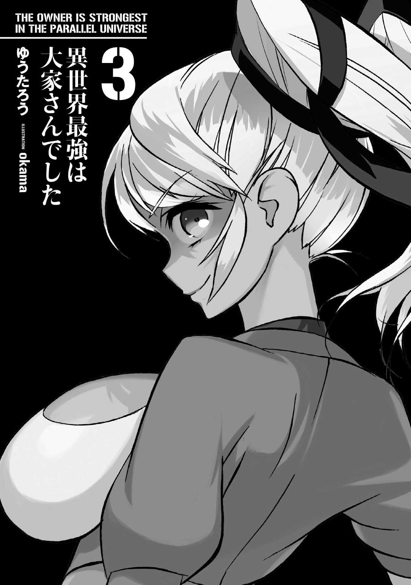

| 異世界最強は大家さんでした 3 (アース・スターノベル) | |
| ゆうたろう | |
| (2015) | |


第五章 拳鬼襲来 〈後編〉
◆ １◆
開戦十日前
その男、ヘラルド・カーヴェンスは煙草を燻 らしながら、ぼんやりと流れる雲を見上げていた。時折、煙の混じるため息を吐きながらボリボリと頭を搔いてボソリと呟く。
「あ～、今日も平和だねえ～」
西の関所の警備隊長になってから早十年。最近髪に白いものが交じる様になり、酒を飲むと次の日が辛くなってきた。
仲間たちと大酒を飲み、愛するこの国を守ると目を輝かせていたあの青さをたまに思い出しては苦笑する。時と共に現実を知り、背負う物も増え、命を賭けて何かを成し遂げようとする『熱』はもう無くして久しかった。
「おまえら、ちゃんと仕事しろよ～」
「うぃ～っす」
気だるげな返事を返す部下たちが気を入れ直す様子は特に無い。そしてそれを注意する気も彼には無かった。
気合を入れろと命令したところでこの西の関所に大した仕事がある訳でも無い。しかしそれでも一応言っておくのは、それが彼の唯一といっていい仕事だからだ。
最果ての街ゼプツィールにおける戦場は、この街が生まれた瞬間から『東』と決まっている。この街の敵はいつだって『人』ではなく『魔獣』だった。
東に向かって馬車で三日も走れば、もうそこには人類の不可生存領域である【魔境】が果てしなく広がっており、そこを根城とする魔獣たちの気まぐれ一つで、ゼプツィールという街は幾度も危機に晒されてきたのだ。
しかし、それはとても幸せな事なのだとヘラルドは思っている。
どこまでいってもこの世界は弱肉強食で、力の無い国家は為すすべなく併吞され価値観を強要される。今この時に存在する大小各国が、明日も変わらず存続していると断言できる者など誰一人としていない。
弱みを見せたら付け入られる。隙を見せたら襲われる。陰謀渦巻き、権謀術数張り巡らされた冥道。それがこの大陸の、あられもない真実であった。
そんな中、たった一つ。他国の干渉をほとんど受けない国家というものがある。
８００年前。
戦争孤児、政治的難民、犯罪者、脱走兵、敗残兵、逃亡奴隷、被差別者。
あらゆる種類の弱者たちの逃亡の果て。
人類生存限界と呼ばれたラインを大きく超えた最果ての地で、地政学者をして『正気ではない』と言わしめるほど魔境近くに首都を置く国。
他でもない、ここゼプツェン皇国である。
立国の経緯を鑑 みても、人が放棄した未開の地を開拓したこの国に、今さら権益を主張する理由も無いし、西側諸国にとって【魔境】から溢れる魔獣の侵攻を抑え続けるこの国の存在は、盾として、防波堤として、実に都合の良いものであった。
だからこの国が政治的にも無視できない大国となった今でも、よほどの事が無ければ他国から戦を仕掛けられるような事は無い。中途半端に弱体化されては西側諸国が困るのだ。
魔獣討伐には少なくない資源や費用を投入しなければならないという現実の中、頼みもしないのに、放っておいたら勝手に魔獣を殲滅 してくれるのだからそれも当然であろう。
だからこそ皇国軍事の重きは『東』にあったのだ。
「そろそろ収穫期かねぇ～」
この光景を見るのも、もう何度目になるだろうか。
ヘラルドは目の前一面に広がる黄金色の穂に目を細めて、秋の到来を予感する。
右手には古代の遺跡が乱立する『グリーデルの丘』があり、あと数刻もすれば豊かな麦畑は、この丘に沈む夕日に照らされて燃える様に輝く麦穂の海となる。初めて見た時は、そのあまりにも美しい光景に言葉を失ったものだ。
「悪くは......無いんだけどねえ～」
東の関所は戦場だ。
朝早く出立する冒険者、狩猟をしに行くハンター、魔境の調査をする学者、威力偵察任務を帯びた騎士たち。
通すべきを通し、止めるべきを止め、手続きを厳格にする事によってもたらされる街の安全と、簡便に済ますことによって潤う街の経済とを天秤に掛けながら、様々な事例を即座に判断し、捌 き、記録をしていく。
時に荒くれ者を相手にしなければならない彼らの武力は総じて高く、指揮能力にも優れており、軍内出世の登竜門と呼ばれるほど東の関所は、平時における地上兵たちの人気が高い配置である。
北は北で蛮族の暮らす区域があり警備も厳重だし、南は大穀倉地帯から延びる主要街道が多くの都市を結ぶというこの国の大動脈が走っている。それぞれの門が重要な役割を担い、兵士たちは今日も慌ただしく飛び回っている事だろう。
「それを考えたら、『西』はねぇ......」
数十万規模の都市だと言うのに、一日の出入りが百件を下回る時があるほどなのだ。良く言ったら楽である。だが悪く言うとやりがいが無い。
通常六人体制が敷かれている自分の職場を見渡してため息が出そうになった。
ここはカフェかと突っ込みたくなるほど、優雅にお茶を飲みながら世間話をしているアホタレが二人。何やら訳のわからない罵声を散らしながら取っ組み合いをしているバカヤロウが二人。まさかの無断欠勤が一人。そして隊長である自分も煙草を吸いながら麦畑を眺めているだけなのだから始末に負えない。
危険も無く、俸給も変わらないのだから前線の兵たちから羨ましがられることも少なくない。他でもないヘラルド自身も、羨む側の人間であったのだ。
早くも遅くも無く出世をし、年齢を考えても平平凡凡な役職を歴任して、有能でも無能でもない彼にとって、閑職扱いされない閑職である西の警備に就くことは、昇進でも左遷でも無かった。
必要な職務であることはわかっている。だが、退屈なのだ。
最早クセになってきているため息を煙と共に吐き出すと、優雅に紅茶を飲んでいたアホタレの一人が呟いた。
「あ、お客さんだ」
お客さんじゃないだろうと小言を言いながら街道に目を向けると、一台の馬車が街に近づいてくるのが見えた。無数の煙草が突き刺され、最早オブジェと化している灰皿に煙草をなすりつけると、ヘラルドは部下たちに命令をする。
「ホラお前ら、配置につけ～。税金の使い道に突っ込み入れられないくらいにはピシっとしろよ～」
「うい～っす」
「あ、オレ行ってきまっす。ヘラルド隊長座っててくださいよ」
そう名乗りを上げたのは、つい最近ここに赴任してきた若い兵士。名前を思い出せずこめかみを二、三度揉んでから、ヘラルドは思い出すことを素直に諦め指示をする。
「ん？ ああ、じゃあ頼むわ。ちゃんと仕事はしろよ」
「大丈夫すよ。おいミコラ、行こうぜ」
先程まで取っ組み合いをしていた二人が何故か足取り軽く詰所から出て行くのを見て、思わず首を傾げる。いつも通行人が来るたびに舌打ちをする二人が率先して検査に行くなんてどういう風の吹き回しだろうか。
そうこうしているうちに近づいてきた馬車を認めて、ヘラルドは眉を顰 めた。
「ずいぶんと立派な馬車だなオイ......」
地域の行商ならともかく、大規模な通商隊ならば普通は南に行く。西の街道は国境都市ゼノビア直通とは言え、周りは森だらけで商売の旨味は少ないからだ。
なのにこの馬車は細工こそ無いものの、三頭立ての大型で作りは一目でわかるほど重厚、車輪の軋みは荷物が満載であることを示唆している。引き連れている数名の護衛の練度も語るまでも無く高く、もう外壁が目の前だと言うのに油断なく周囲を警戒している。
そこらの商人が通商に使うには重すぎる仕様の馬車であった。
ヘラルドが訝 しげに眺めていると、馬車がスルリと停まり、身なりの良い男が降りてくる。新兵二人が男に近づき何やら話し込んでいたが、一人が何か書状のようなものを持って戻ってきた。
「ヘラルド隊長、ロブロイ商会です。侯爵家の通行証を持っています」
「ロブロイ商会......？ 荷は何だ？」
「ムンゼスカ産の蒸留酒です」
「いけすかないお貴族様御用達 の商会様が、なんだって西の門に......」
引き続き積み荷の確認を進める部下を視界に収めながら舌打ちを一つ。
ロブロイ商会とは高等区の貴族たちを顧客として抱える中規模の商会だ。
市場に流す一般的な商品には目もくれず、個別契約をベースに嗜好品を届けるいわば「運び屋」としてのし上がったという、お貴族様のお贅沢を支える鼻持ちならない連中であった。
今こうして荷台に積まれている蒸留酒も、ヘラルドが買おうと思ったら一瓶で月給が吹っ飛ぶに違いない。身分制度が採用されているこの国でさして珍しい格差でもないが、それでも面白くないものは面白くないものだ。
「はあ......、最低限のチェックをして通してやれ」
しかし面白くないからといって足止めするわけにもいかない。もちろん職務上も感情で流通を妨げる事など許されないが、この場合、別の意味でもそれは許されない。
基本的に自由貿易主義を採用し、国内産業の保護は関税の税率で図るという政策を取っているこの国では、禁制品を除いて、関税さえ支払えば全ての輸出入が許容されている。歴史的背景から人の出入りさえも大らかで、街への入場を拒否する事もほとんどないのだ。
そんな国情において、わざわざご丁寧に侯爵家の通行証を持っている意味など一つしかない。『侯爵家が身元を保証するからさっさと通せ』だ。たかだか一兵士であるヘラルドがこれに逆らって良い事など一つも無かった。厄介事になる匂いしかしない。
「おいカーラ、蒸留酒、大型馬車一台分だ。記録しとけよ」
「了解です隊長」
身元が保証されている以上、細かな記録は必要ない。関税の徴収は徴税官が商会の帳簿とにらめっこして決めてくれるからだ。
「あーやだやだ。世の中は不公平だねぇ～」
上を見てもキリがない。だが下を見てもそれは同じなのだ。ごく普通に家族と暮らせる職を持つ自身も、恵まれている方には違いなかった。
ヘラルドはそんな事を考えながら椅子に座り、現実逃避気味に煙草に火を点けた。天井を漂う紫煙を目で追いながら、今日は娘の好きなジャムパンでも買っていってやろうかと独りごちる。そして再度深く煙を吐いた、その時だった。
──ビィィィ～～～～～～ッ
突如、鼓膜を破らんばかりに鳴り響く警戒音。
「おいマジかよふざけんな！」
ただの警戒音なら驚いたりはしない。禁制品を持ち込もうという不埒 な輩は一定数存在するし、一定の禁制品を使用したり実験したりする事を許可された者たちだっている。
淡々と検閲し、許認可の確認を事務的にこなせばいいだけの話だ。
しかしさっきの音は......。
「レベル５とかシャレになんねえじゃねえかっ！」
いつまでも耳に残るこの不協和音は、10 年もの門番生活で、ついぞ聞いた事は無い。
訓練兵時代に訓練の一環として聞いたことがあるだけのその音は、今やどの国にも当たり前のように設置されている魔力波検知門 が発する最高レベルの警戒音だった。
国によってその設定は違うが、最高レベルともなるととんでもなく危険な代物が共通して登録されていると言う。そういう種類の音だ。
ヘラルドが反射的に外に飛び出すと、詰所でダラダラしていた部下たちも一斉に武器を手に後に続いた。
目に飛び込んできたのは、外壁の手前に設置された簡素なアーチ『魔力波検知門 』を潜ろうとする馬車、そして何故か商人と新兵二人が一緒になって慌てふためいている姿だった。一体何をやっているんだと怒鳴り散らしたくなるのを何とか堪える。相手は侯爵家の通行証を持った高級貴族御用達の商人。下手を打つわけにはいかないのだ。
屈強な護衛たちも何が起きたかわからず困惑している今、通すべきスジは通さなければならない。無駄飯喰らいと揶揄 される西の関所も、この街を守る機構である事は変わりがないのだ。
「すみませんロブロイ商会さん。たった今、魔力波検知門 がこの馬車に危険なものが積まれていると判断しました。再度荷物を検 めさせていただきます」
「そんなはずは無い！ 何かの間違いだ！ 私は何もやましいモノなど商っておりませんぞ！」
突如疑いをかけられた商人が唾を飛ばしながら叫ぶ。だが商人が噓をついているとは言い切れなかった。検知器が何かの拍子に誤作動を起こした事例は今までも確認されており、魔力波検知門 もあくまで一義的な判断基準の一つでしかないのだ。だからこそヘラルドは確かめなければならなかった。
「ならば再度検査にご協力を。確かに誤作動の可能性は在ります。一度なら何かの間違いということも十分考えられますので」
すると商人は不機嫌を隠しもせず、邪魔だから持っていろと言わんばかりに新兵の一人に手荷物を押し付け馬車を後退させると、再度馬車に乗り込みゆっくり前進させた。
馬車が門に差しかかる。奇妙な緊張感の中、馬車は何事も無かったかのように門をくぐり切った。先ほど金切り声を上げていた魔力波検知門 はウソみたいに反応一つしない。
そして商人は肩を怒らせながら馬車を降りると、護衛に馬車の幌 を全開にするよう命じ、新兵に預けた荷物をひったくる様に奪い取る。
「さあ、心ゆくまで検査したまえ！」
商人の勝ち誇ったような笑みに不快感を覚えながら、一番ホッと胸を撫で下ろしているのは当のヘラルドだった。
ここで何かが出てきて手柄になったとしても、それは職務上当たり前の事であり評価としては微々たるもの。なのに貴族の逆恨みを買うなど割に合わないにもほどがある。権力が絡んでくる微妙な事案について、問題など何も無い事が一番望ましいのだ。
ヘラルドたちは五人全員で積み荷の検査を済ませると、形式的な手続きを済ませ馬車を見送る。問題は無かった。機械の誤作動だった。そんな形式論を胸に落とし込んで。
だから、ここから悲劇は始まった。
それは西門兵士の怠慢だったのだと言い切れる者が、果たしてどれくらいいるだろう。
刺激の無い仕事、高くも無い給金。ふとした拍子に、豪遊するには足りなくとも、ちょっと遊べる程度の小金を握らされれば、少しくらいの融通を利かせてしまうのもまた人だ。
下手に嚙みつけば、明日家族が路頭に迷うかも知れないような権力相手に、少しくらいの違和感から目を逸らしてしまう事を糾弾出来るのはどこぞの聖人君子だけではあるまいか。
彼等もまた、歪んだ権力構造が生んだ被害者であった。
仕事熱心ではなかったが、真面目に軍に仕えてきた男、ヘラルド。
他の大多数と同じ凡人の一人であった彼は、先ほどのやり取りの中、実は直感的に感じていた違和感から目を背ける様に、一抹の不安と胸騒ぎを払拭するかのように。
煙と共に言葉を吐き出した。
「ま、今日も平和でよかったね～」
自分が何を見逃してしまったのか知る由 も無い、悲しい男の呟きが、赤く染まりかけた麦畑に溶けて消えた。
開戦五日前
都市北部は貧民窟。俗に言う『無法地区 』である。
光が在れば闇が在るように、活気溢れるこのゼプツィールにおいてもそれは変わらない。笑顔で表通りを行き交う人々の陰で、先も知れぬ絶望と共に炉端に転げる人々は、いつの時代、どの場所にも存在するものだ。
まごう事無き掃き溜めである。
だが、見えるものだけが世の全てではない。比較的平穏で治安も良い軍事大国ゼプツィールにおいて、その存在が認識されていてなお存在が許されるのは、人は光だけでは生きていけない事を為政者たちが知っているからだ。
外敵から身を守るために聳 え立つ城壁も、逃げ場を無くした哀れな人々にとっては絶望のカゴへと早変わりする。そんな綺麗には生きられない者たちが身を寄せ合う場所として許された必要悪。それが「無法地区」である。
権力との対立も融和も選ばない異端地区は、無法という名のルールで以 て驚くべき秩序を保っていた。
そして夜。
闇に蠢 く怪異の如く無法地区を疾走する影があった。その数、六。
誰一人として足音も立てず、宵闇との境界線すらあやふやな影たちが通り過ぎても、その存在に気付く者は誰もいない。時折漏れる微かな息遣いだけが、確かにそこに彼らが存在している事を辛うじて証明する。恐るべき技術であった。
六つの影は目と手だけで会話をし、完璧に統率された動きで目標に向かう。
無計画に増築を重ねた家々、雨風を凌げるか疑問なあばら家が軒を連ねたかと思うと突如現れる豪邸、とその隣に当たり前のように鎮座する家畜舎。混迷極まる街の在り様に、当然の如く道路はうねりくねっていた。実にカオスな街並みである。
影たちは何の苦も無く道を走り屋根を飛び、しばらくすると、とある廃墟の前で足を止めた。影の一人が廃墟を見上げる。
それは教会だ。
昔は見事な景観を誇っていたであろうその教会が、神に縋 る事を無駄だと悟った住民たちの荒み様を代弁しているかのようだった。
「ここか......」
「情報を信じるならばな......」
異端地区は、思いの外、隣人が異端であることを許さない。
昼間、白目を剝きながら刃物を振り回す暴漢を肴 に酒を飲める住民たちも、知らない人間が近くに来たというだけで驚くほど簡単に警戒度を最大に引き上げる。その隣人がさらに見知らぬ者を引きこんでコソコソやっているとなれば尚更だ。
そうして衆人監視に等しい状況で丸裸にされた異端の情報は、回り回って行き着くところに行き着いた。大陸最大組織、冒険者ギルドだ。
「人の気配は無い。今の内に仕事だ」
リーダーらしき影の一人が囁くと、六つの影は無言で散開し、廃墟の外周に張り付いた。
しばらくあたりの様子を覗っていた六人は、合図も無く突入を開始する。
そうして各々が何事も無く廃墟内の探索を終え、礼拝堂だったであろう広間に集まった。
「何も、無いな......。ガセだったか......」
「何もありませんでしたで帰ったらマイラ班長に殺されますね......」
影たちは無言で顔を見合わせ、深々と頷いた。
彼女の本当の姿を知らない人間は想像すら出来ないだろう。
普段は同僚を気遣い、先輩を立て、後輩の面倒見もいい彼女は受付嬢の皮を被った獣だ。彼女の前に出来る冒険者の行列を見て、彼らに憐憫 の情を覚えたのは一度や二度ではない。彼女の本気に触れたことがあれば、逆らおうなどとバカな事を考える者はいない。
「......もう少し手がかりを探すか」
「ですね......」
影は軽く寂寥 感すら漂わせながら調査を再開した。
廃墟となった教会。礼拝堂と思しき広間には何も残されていない。燭台もベンチも十字架も、女神像すら持ち去られ、ただただ埃臭い空虚な空間と化している。
月明かりが差し込む天井には、以前はおそらく豪奢なステンドグラスが嵌め込まれていたに違いないが、今となっては雨すら凌げぬ出来そこないの屋根でしかない。
そんな世の無常を想い、一人屋根越しの月を見上げていたリーダーが視線を落とす。そして軽く目を見開いた。
「足跡がある......」
掃除をする者などいる筈も無く、埃は積もり放題だからこそくっきりと残っている何者かの足跡。すぐさま影は足跡を追い、そして気付いた。
「ここで足跡が消えている......」
正面には窪んだ壁。おそらくは女神像が置かれていたであろう、主祭壇後ろの安置台。
リーダーは何のためらいも無くその窪みに手を当てた。すると──、
「......っ！ 開くぞ、隠し扉だ」
影たちが息を吞んだのは一瞬。
公共施設や宗教施設に抜け穴や隠し部屋があるのは特段珍しい事でも無い事を、経験豊富な影たちは知っている。すぐさま四人が中に入り残り二名で周囲を警戒する事となった。
かび臭い、苔生 した石壁に触れないよう注意しながら進んでいる時、影の一人が怪訝そうに眉を跳ね上げる。
「なんだこの匂いは......」
噎 せ返 るような臭気が漂ってくるのだ。
それは胸騒ぎすら感じるほど、嗅いだ者の心をザワつかせる不穏な香り。
刺激臭、ではない。
戦場で嗅ぐ糞便や臓物とか、腐肉とそれに群がる虫共の悪臭とか、決してそういった不快な匂いでもない。むしろ熟し落ちる寸前の果実が放つような、芳醇とも言い得る甘い香りだ。
だがこうして鼻腔から伝わる不快感は何だ。不可解な香りは通路の先に見える小部屋から漂ってきているようだった。
影たちは暗い通路を進みながら、小部屋に一歩近づくたびに増していく臭気に軽くえずく。死臭や腐臭に眉一つ動かさない熟練者の彼らを、ここまで不快にさせる香りとは一体何なのか。
それは最早、瘴気と言っても過言ではないほど粘着質に影たちに纏わりついている。
一行はこみ上げる吐き気に一様に口元を押さえて先を急いだ。彼らを生き残らせてきた勘が叫ぶのだ。この先にヤバいモノがある。と。
部屋まで辿り着くと、人の気配がしない事を確認し、一人が最小限の光源魔法を唱える。そして真っ暗な状態から突然発生した光に目を細めながら、視覚化するほど高濃度に達した臭気の元に視線をやり、絶句した。
「ば、ばかなっ！ そんなことがっ!! 」
何の変哲も無い部屋だった。
何の変哲も無いベッドが置かれ、何の変哲も無いテーブルと何の変哲も無い椅子が二脚。どこにでもあるようなクローゼットと棚、そしてまだ使い切っていない蠟燭 が立てられた燭台。
積もり放題になっている埃が長らくこの部屋が使われていない事を物語っているが、それ以外に何も特筆する様なモノなど無い、有り触れた寝室の様だった。ただ一つを除いては。
「あれ、結界装置ですよね......？」
影の一人がテーブルの上に置かれ、光源魔法にぼんやりと照らされたソレから目を離さず呟く。
それは結界魔導具。高度なものになると莫大なコストを要求される魔導具だ。
代表的な例が街全体を守る防衛結界だが、発動には途方も無い量の魔力と術式が必要な事もあり、現実的に運用している街はほとんどない。
だが、条件指定も何も無く、ただ単に結界内の物を閉じ込めるとか、入れ物として使う程度の物だとそれほど珍しいものでも無い。それならば檻や壺を買った方が楽だし安いという理由から流通しないだけの話である。
そして今、目の前にあるのはそういう種類の珍しくも無い結界魔導具だ。リーダーが言葉を失うほどの物である筈が無かった。
「中に入ってるのは、ビスケット、ですかね......？」
リーダーは影の一人が放ったその質問に無言で答えた。そしてよろめきながら部屋の中央に置かれたテーブルに近づき、結界装置に封じられているビスケットのような「何か」を呆然と眺めている。
「こ、これは......っ、魔鬼餌 っ!! 」
「──っ！」
絞り出したようなかすれ声に、影の全員が息を吞みこんだ。あまりに非現実的な台詞に、全員が固まり言葉を失っている。
「魔鬼餌 って、あの、大陸最悪の魔導具......ですか？ ははは、有り得ないですよ。何かの勘違いでしょ!? 」
「間違いない......。コレは......、厄災級のヤバい代物だ......」
リーダーがボソリと呟く。背筋が凍るとはこの事か。
先日、皇国からギルドに出された『準戦時下における協力要請』は職員全員が寝耳に水の出来事だった。
国内に不穏な動きがある、何かが持ち込まれた、情報を持ってこい。
影たちが今ここに居るのも、そんな皇国からの曖昧な情報に基づいた要請と、それに対し、ギルドとして建前と義理を通すために出された形式的な命令があったからだ。
準戦時下？ 危機？
冒険者ギルドは剣と天秤を掲げる公助の組織だ。原則として特定の国に肩入れなどはせず、ただ有事の際、罪なき民を守るためだけに各国と最低限の有事協定が締結され、その協定の範囲で協力するだけに過ぎない。
だから、目に見える脅威も異変も何もないのに、準戦時下と言われてもそこまで本気で要請に応える気はギルド側にも無かったし、職員の気持ちもまた同じだった。
それらしい何かを摑んで報告、協力すればどうにでもなる些事の一つだろうと、その程度の認識であったのだ。
しかし突き付けられたこの事実はどうだ。
目の前にある悪魔の呼び鈴。これはもう準戦時下どころの話ではない。一つ間違えば街や国そのものが滅びかねない異常事態だ。
今この瞬間、他の実働部隊も手がかりを探すため、指定があった多くの拠点を調査・襲撃しているはずだが、自分たちは死にたくなるくらいの大当たりを引いたらしかった。
「ここにあるというそれだけで火種になる。あらぬ疑いをもたれて下手したら戦争だ！ クソっ！ 最近魔境が活性化してたのはこれが原因か！ 犯人探しは後でいい、こんなモノを持ち込める敵は今すぐどうにかなるレベルの権力じゃない。とにかく持って帰るぞっ！」
「は、はいっ！」
条件指定をされていない安価な結界装置はただただ単純に結界内の物を閉じ込める。それを思い返してリーダーは更なる怖気に襲われる。
この耐えがたく退廃的で倒錯的な甘い香りが部屋に充満している事が意味するもの。それは、ビスケット状の魔鬼餌 が既に何枚か使用されているということだ。
一刻も早くその事実を報告しなければならない。
部下に結界装置ごと魔鬼餌 を持たせ、影たちはその一心で通路を戻り、薄暗い礼拝堂に出る。
「緊急事態だ。すぐ撤収するぞ！」
そう見張りの二人に声をかけ出口に向かう影。だがその二人が動き出す気配が無い。少し苛立たしげにリーダーが再度声をかける。
「早くしろ。聞いてい......なっ!! 」
──ドサッ
見張りで残っていた二人が声も無く崩れ落ちた。いや、声など出せるハズが無い。
なぜなら......、
「お探しのものは、コレですか？」
礼拝堂に凜と響き渡る声。そして、べちゃりと音を立てて床に転がされたのは二つの丸い物体。
月明かりの中、無造作に転がされたソレと目が合う 。
状況確認は必要ない。余裕も無い。
耳だけを頼りに声の方向に暗器を投擲 。それと同時にバックステップで距離を稼ぎ、迷わず撤収の指示を出す。この状況で仇討ちに走るほどのヒヨッコは一人もいない。
ギルド暗部の工作員に悟られる事無く接敵し、殺害する能力。これほどヤバい代物の番人が素人のはずがないのだ。
一斉に放たれた暗器の全てが障壁に弾かれるより早く、散開しようと四人の体がわずかに沈みこんだ時──、
「光の剣跡 」
彼等の間を一筋の光の刃が奔 った。
光が通り過ぎた方向を目だけで確認すると、結界装置を抱える部下の姿。
驚愕に目を見開く部下の首に血の筋が浮き出たと思ったら、ズルリと頭がずり落ちる。血だまりが出来るより早く床に落ちた首が、思いの外乾いた音を立てた。
「いやはや、この国の情報網を甘く見ていましたよ。その鼻の良さだけは褒めてあげましょう」
逃走するタイミングで機先を制され、金縛りにあったように動けない影たち。彼等は見る。
月明かりにぼんやりと浮かぶ白いローブを纏う男を。フードの奥、酷薄に吊り上がる濡れた唇を。
「死んで神の御許に......いや失礼。薄汚い亜人には無理な話でしたね。ただ、土に還るがいい」
詠唱破棄の光属性魔法、白いローブ、そして極端な亜人排他主義。それだけでその男の素性がわかる。とてつもない規模の陰謀が頭を過 るも、今はそんなことどうでもいいと首を振る。一人でも生き残らなければ全て無意味だ。
既に手練れ三人があっさり殺され、残る三人に抗う術 は無い。実力が違い過ぎる。
敵は障壁使いの上、聖魔道士。勝てる筈も無ければ簡単に逃がしてくれそうも無い。大陸連名指定の禁制品を目撃した自分たちを生かして帰すわけが無いのだ。
なりふり構っていられる状況ではなかった。崩れ落ちた部下と共に転がった結界装置を今一度確保する余裕など無い。ならばせめて情報だけでも持ち帰らなければ、死んでも死にきれない。
「ザインっ！」
男が叫んだのは十年来の付き合いであり、最も信頼する同僚の名前。
その一言で全てを察した影の一人が、隠密に有るまじき雄叫びを上げながら白いローブの男へと突撃を敢行。残る一人が出口へと走る。
すまないザイン。死んでくれ。本当にすまない。
「光の剣跡 」
光が唸る。
向かう先は当然の如く逃走する影。そしてザインという名の影が当然の如くその射線上に身を躍らせた。
彼の鳩尾 を突き抜けた光は、出口に向かう影の脹脛 を掠って闇に消える。
ゴフッと吐血しながら突撃を諦めない彼の胴を、横薙ぎに光の筋が襲った。
走りながらゆっくりとズレ落ちる同僚の胴体。切り離された半身がグシャリと音を立てて白い男の足元に沈んだ。
こみ上げる激情に歯を食いしばりながら、影は白い男に向かって全力で走る。
出口に差し掛かるもう一人の影。
あと一撃。あと一撃防げば......。
全魔力を傾けた練気。これでヤツの障壁を抜けるかはわからないが、気を引くくらいは出来る。一太刀でいい。その後の事は考えなくていい。
「おおおおおおおおぉぉぉ～～～～っ！ 」
体の底からの叫び。
少しだけ焦った様子の白い男に向かって全身全霊の斬撃を叩きつける。障壁を搔き分ける様にして進む刃を、憎々しげに睨みつけながら白い男が回避した。
全てを込めた一撃を終え、膝を突きながらチラリと出口を見やると、そこにはもう逃走する影の姿は無い。
そして視線を戻すと、怒りを通り越した能面で影を見下ろす白い男。
結局刃は届かなかった。傷一つつけられなかった。立ち込める死臭、無残にも転がる仲間たちの骸。
部下の仇も親友の無念も晴らせず、一矢報いることも敵わなかった。思うところが無いはずは無い。これだけの犠牲を払って、何も出来ずに不様を晒す自身を呪わずにはいられない。
しかし、影は嗤 う。
「俺たちの勝ちだ」
「死ね......」
後は任せたぞ。
振り下ろされる光の筋を感じながら、名も無き影は満足げに瞼を閉じた。
◆ ２◆
開戦三日前
「こんなことって......っ！」
私は焦っていた。
当初『草』の報告からはこんなにも急に事が動くとは思えなかったし、対策も緩やかなものだった。だが今となっては、相手を甘く見て初動を誤ってしまったことを痛感する。
確かにゼプツィールに在るといっても、理念上、ギルドはあらゆる組織から中立でなければならない。
冒険者ギルドは巨大組織だ。
大陸各地に支部を置き、数多の冒険者が所属し、小国を軽く上回る予算と、大陸中から集まってくる情報。その気になれば、それらの資源を活用して大国と渡り合う事もさして難しくは無い。
そんな強大な『暴』の存在を各国が許容しているのは、原則として冒険者ギルドがあらゆる政治的事象から中立を宣言し、それを実行してきているからだ。
そもそもの成り立ちとして、８００年前、聖魔戦争という未曽有の大戦で疲弊した国々。生き抜くためには隣人を殺さねばならなかった悲惨な時代に、強者の狭間で震える弱者に手を差し伸べる団体として、冒険者ギルドは旗揚げされた。
──右手に剣を、左手に天秤を。
発足当時から掲げられるその理念は、あらゆるものからの公平と中立を謳 った揺るぎ無き信念として、今もなお誇らしげに風に揺らめいている。
縦 え卑劣な陰謀に端を発した戦争が起ころうとも、ギルドが積極的に介入することは無い。むしろ一騎当千の猛者たちである冒険者が戦争に参加することを、禁止すらしているほどだ。
だからギルド職員の一人である私が、情報を得たからと言って出来る事は情報の収集と提供ぐらいなもので、直接的にこの国の手助けをすることは出来ないのだ。
しかし予想以上の速さと規模で進む何者かの動き。
事態は国家間の戦争とかそんな生易しいものを既に超えようとしていた。
「一体、何が目的なんですか......っ！」
戦争は経済行為だ。
血を流してでも得るべき利益があるからこそ、大義という建前を探し、人は殺し合う。
人が生まれてから今まで、飽く事無く続いてきた闘争の輪廻は、つまるところ『隣の芝が青かった』という一言に集約されてしまうのだ。
だからこそ今回のヤツらの行動理念が理解出来ない。全てが壊され蹂躙 され汚染された荒れ野に、領土的野心を満たす要素などどこにあるというのか。
ヤツらがしようとしているのはそういう事だ。何がキッカケだったのかはわからないが、奴らは本気でこの国、いや、この地を潰しに来ているとしか思えない。
それは如何 に中立を是としていたとしても、弱き者の生命と財産を守ることを根本理念とするギルドが看過出来ないレベルの悪夢となろうとしている。特に【拳鬼】がこの街に現れてからのスピードは異常だ。
「これほどの悪意の前では、大国と言えども対処は難しいでしょう......」
ゼプツェン皇国としては完全に後手に回ってしまっている状況だった。
〝人の口に戸は立てられない〟
端的に真理を説いたその諺 は、一体どこの国で生まれたものだったか。
それはどんな巧妙な罠や悪辣な陰謀でも例外ではない。取るに足らない噂も、正しい人物が正しい噂で正しく肉付けしていく事によって、時として驚くほど正確に真実を突くことがある。
今回、地獄耳で知られる皇国第一皇女【荊姫】クリシュナ・グングニルその人が、それを行った。
この国に何か危険なモノが持ち込まれようとしているという曖昧な情報。彼女の下に吐いて捨てるほど持ち込まれるであろう石の山から、唯一の玉を彼女は拾い上げた。げに恐るべきは皇 としての血か、それとも運か。そこまで考えて、私は深々とため息をついた。
今日、あの女が飛び込んで来て、あざとくイサオさんに媚びを売って出て行ったあと、私はあの女の弱点をこの目で確認して一人ほくそ笑んでいた。いつでも殺 れると優越感に浸ってすらいた。
彼が事情聴取で拘束されている間に、潜水の世界記録に挑戦する勢いでイサオさんの熟成おパンツを搔き込んで、上機嫌だった私は帰りがけの『草』の報告にもそれほどの危機感を抱いてはいなかった。
他国からの干渉を気にしなくていいお国柄とは言え、ある程度の諜報戦を仕掛けられるのは大国の宿命みたいなものだ。
活気に満ちた平穏の裏側には、いつだって醜悪な闇が手ぐすね引いて口を開けている。今回もそんな裏道では飯の肴にもならないような、有り触れた非道が調子に乗っているだけだと思っていた。
それがどうだ。
ギルドに戻り、鼻歌混じりの私に突き付けられた報告に、私は言葉を失っていた。
この国に持ち込まれている『何か』が魔鬼餌 であると判明したからだ。
──魔鬼餌
それは人類最大の禁忌と呼ばれる【混沌の扉 】に指定された、この世に四つしかない最悪の魔導具の一つだ。
２７０年ほど前、ムンゼスカ戦役で初めてそれが使用され、そして国が一つ地図から消えた。
歴史上類を見ない未曽有の惨劇を、後の歴史家が『赤い夜』と呼称し、人類史上最も忌まわしい事件の一つとして記している。
歴史上最初で最後の使用例となったその戦役後、主要各国が集まる大 陸 合 同 会 議 にて一つの反対票も投じられること無く、それは全ての国の連名で最大級禁忌として指定された。例外は無かったのだという。使った側も、使われた側も総じて恐怖に震えたのだ。
当たり前ではないか。
見た目は子供のおやつに過ぎないビスケット状の魔導具。それを魔境やダンジョンの近郊にばらまくだけで、星の数ほどの魔獣共が匂いにつられ一斉に集まってくる。それだけならまだいい。その悪魔の撒き餌は特殊な成分で以て魔獣共の正気を失わせ、匂いの出所へと行軍を開始させるのだ。
そうして引き起こされるのが、言わずと知れた悪夢、【魔獣大侵攻】だ。
これは現在進行形で人類が直面する危機であり、絶対に阻止しなければならない災厄である。
それを人為的に、しかも数十倍の規模で引き起こそうと言うのだ。これを考案した人間も、作った人間も使った人間も、ただ一人の例外無く、心の隅々まで完璧に腐っていると断言できる。
それは、生きとし生ける者たちへの背信に他ならないからだ。
「そんな魔鬼餌 が、この国に持ち込まれているなんて......っ」
名目上は一つ残らず封印された事になっていた。
だが、封印とて解除することは可能だし、何より、悲しいかな人とは遠くの破滅より目先の脅威に震えてしまう生き物だ。
条約で定められた封印手続きが、その国の自己申告でしか確かめる術が無い時点で、抑止力として保持しようと考える者が出て来てしまうのも不思議ではない。いや、そう考えるのが自然なのだ。
とにかく、今はそんな憶測などはどうでもいい。問題なのは事実としてこの国にそれが持ち込まれたという事。情報の出所は他でもない、私の同僚だ。
私も工作班の班長と言えども、たかだか実働部隊を率いるだけの下っ端で、状況がコントロール不能になるまで情報を伝えられなかった事に文句を言うつもりは無い。事が大きければ大きいほど、精査という作業は重要だ。
しかし私とて五人もの同僚を殺されたのだ。今すぐ直接出向いて敵をなぶり殺しにしてやりたいという思いはある。しかし既に個人でどうこうできる範疇を大きく逸脱しているのが現状だった。
私は軽く息を吐いて、先程渡された報告書に目を落とす。
そして今一度、現状を整理する為に目を閉じた。
六人の同僚は潜入先で敵勢力と交戦。瞬く間に五人が殺され、一人が命からがらに逃げ延びた。敵勢力の追手を躱 しながら丸一日の潜伏の後、持ち帰られた情報を基に、戦闘班が現場に急行し対象を発見。
そして対象を追跡中、定期的になされていた連絡がぷっつりと途絶える。
捕らえられたのか、それとも......。
そこで、別口で報告に上がっていた拠点と思しき場所を別動工作班が襲撃。しかしすでにそこはもぬけの殻。直接捜索は完全に暗礁に乗り上げた。
ならば間接的に敵を追い詰めるしか方法は無い。
ギルドはその時点で緊急警戒情報としてゼプツェン皇国諜報部に報告。
そして皇国との間で締結されていた非常事態行動規則に則り、ギルドはゼプツェン皇国と共同戦線を張ることを決断。情報共有を前提とした物量作戦に打って出る。
手がかりは途切れた。ならば別のアプローチを試すだけ。
そもそも大陸連名指定の禁制品の輸入など、そう簡単に出来るものではない。各関所では禁制品として登録された魔導波を感知する魔力波検知門 が設置され、所持が発覚した時点で所持者は即拘束だ。各関所は何も関税を徴収するだけの場所ではないのだ。
それらの事実を鑑みた時、当然のように導き出される答え。
──手引きした者がいる。
それも国の安全保障と税徴収の要 の一つである関所に影響を与えられる、そんな巨大な権力を背景とした者の手引きが。
意図的に、悪意を持って、破滅を望む外道に協力する者が内部にいる。
ゼプツェン皇国は即座に危機管理体制を厳重警戒態勢へ移行。さらにギルドに対し戦時緊急協力要請を発令しギルドはこれを受諾、ギルドに対し超法規的戦時特権を付与した。
ギルドは戦時特権を根拠に、関所の通関帳面を接収、辻褄が合わない部分、違和感を感じる部分を分析し抽出、結果、通関に関わる多くの者から四名の職員をピックアップ。
ウェルス・ワグナー西門関所所長
ヘラルド・カーヴェンス西門警備隊長
ショーン・ドナルド中級衛士
ミコラスキー・ネロ下級衛士
不在であった所長を除いた三名に対し、拷問に限りなく近い尋問を開始する。
結果、ショーン・ドナルド中級衛士は死亡。ミコラスキー・ネロ下級衛士の証言から、ウェルス・ワグナー西門関所所長の指示によるロブロイ商会への便宜と帳面の改竄 が発覚。魔力波検知門 が作動したにも拘 わらず、それは無かった事にされ、渡された手荷物を門に潜らせずに返したのだと言う。
気軽な小銭稼ぎで国家が危機に晒されている事を告げられた下級衛士は顔面を蒼白にし、隊長は責任を取ると言って自決を図った。
報告を受けた皇国諜報部が即座に所長宅に踏み込むが、所長を含む一家は何者かに殺害されており、またもや手がかりが途絶えたかに思えた。
しかし、諜報部が所長の背後関係を徹底的に洗っているうちにとある貴族の名が浮上する。
「レーベル侯爵家......」
私はすぐそこまで出かかっている情報を思い出そうと眉間を指で摘まむ。
「そう、確かレーベル侯爵家といったら......」
ゼプツェン皇国十貴族の一角を担う有力貴族で、現当主が病に臥せっており、放蕩気質な長男は旅に出たまま帰らず、実質二男が当主として振る舞っている旧家だ。そして......、
「カナリヤに居合わせた貴族......」
以前、イサオさんとノリちゃんとあの女の三人が食事をした中等区のレストラン『カナリヤ』において、魔力爆発があった際に居合わせた貴族だったはず。
報告では、取り巻きを連れて何やら三人に絡んでいたらしいが、確かその中心人物がレーベル侯爵家二男だったはずだ。
私は何か薄ら寒いものが背中を過った気がした。
これは単なる偶然だろうか。
たかだかＤランカー相手に発令された身辺調査命令、潜入命令。
たまたま居合わせたはずのレストランで起きた魔力爆発と、レーベル侯爵家二男の接触。
そして、最近、特にあからさまになっていった他国暗部のイサオさん監視網や、突如街に現れたＳＳＳランカーと、ここにきて浮上した内通者の存在。
全てイサオさんの近辺での出来事だ。
直接的に彼を結びつけるようでいて複雑怪奇な因果の鎖。あからさま過ぎて逆に無関係とも思えるほど、イサオさんを中心として何かが蠢いているような気がしてならない。
いや、考え過ぎだ。いくらイサオさんが気になるからと言って何から何まで結び付けて考えるべきではない。彼が何か大きなものを背負っていることは薄々感じてはいても、これほどの悪意に巻き込まれるほどのものではないと、彼自身の為にそう思いたい。
なにより、憶測のパズルを組み立てるよりも、今しなければならないことは新たに工作班から上がってきた『レーベル侯爵家関与の疑い』の情報を国と共有することだ。デッドラインはもうすぐそこに在る。
私は報告書に補整・追加情報を書き加えると、それを皇国諜報部に届けてもらうため、通信班の部屋に向かった。
同日 皇城
「どうやら魔鬼餌 が持ち込まれたのは、もう間違いないようだな......」
さして飾りも何も無い石の廊下に乾いた靴音を響かせながら、オフィーリア・グングニルは皇国軍司令室へと向かっていた。
白銀の胸当てを装着し、ミスリルを編み込んだ銀色のレギンスの上に軽甲を纏い、颯爽 と歩くその姿は、さながら神話に登場する戦女神 のよう。
「敵は再三の追手を振り切って逃走しております。相当の手練れのようで、おそらくはもう......」
オフィーリアの数歩後ろに付き従うのは、逆立つ黒髪を整えもせず、髭を生えるに任せた巌 のような大男。諜報部隊の長、ガド・ミルヴァディアだ。その荒々しい風貌から想像も出来ないほど静かに足音も立てず、まるで風景に溶け込むような立ち居振る舞いは流石と言わざるを得ないだろう。
二人とも緊急の軍議に向かう途中の廊下で出交わし、そのまま情報交換しながら先を急いでいた。
「この半年間、魔境が活性化し続けていた事を鑑みると、相当入念に準備を進めていたということか......」
「はっ！ 低階層に魔獣を集めるため、敵によって低濃度の魔鬼餌 が定期的に持ち込まれていたとみるべきでしょうな。それも検査に引っかからない程度に調整され、効果も限定的な紛い物が」
魔鬼餌 。それは人類が生み出した最も醜悪な魔導具の一つ。
ひと度撒かれれば、広範囲の魔獣を呼び寄せ興奮状態に陥れる。
そこに何もないと悟った彼等の矛先はどこに向かうか、想像するに難くない。そうして彼らが向かった先は、例外なく肉と臓物飛び散り血 飛沫 舞い、絶叫響き渡る地獄と化す。
胸を張って歩きながらも、どこか疲れたようにオフィーリアは呟いた。
「しかしそれでも持ち込むのは簡単では無かったハズ。何か執念のようなものを感じるな」
「動機が気になります。姫様もご存じの通り、少なくとも我が国は長い間、良くも悪くも鼻つまみ者でしたが、明確な敵対行動をとる者などいなかった......」
オフィーリアが気まずそうに軽く俯く。
ガドの言う通りだった。
この国は周辺各国の中では異端児で、亜人族を広く受け入れ人族と同等の権利を与えており、大陸最大宗教である十字教が亜人排斥に傾く中、皇王は隠す事もなく種族の融和を唱え続けてきた。
これを面白く思わない勢力など腐るほどあって、もしゼプツェンが普通の国家であったならばとっくに難癖つけられた挙句に攻め滅ぼされ、皇家は粛清されているに違いない。
しかし危険な立場とは裏腹に、そんなことにはならない事を誰もが知っていた。この国は人類生存にとっての最大の脅威、【魔境】の防波堤として在り続けたからだ。
本気でこの国を害そうなどという輩は如何な時代においても現れはしなかった。
皇国の弱体化は、自らの命の危険を招くという事を馬鹿でも知っていたのだ。
だからそんな慢心が確かに在った。皇国軍事の頂点に立つオフィーリア自身もそれは例外ではない。
だからこそ今、目の前にある危機が、たった一人の男が招いたかもしれないなどと口が裂けても言える筈が無かった。たとえ【勇者】という称号が持つ意味がどれほど重かろうと、こんな馬鹿げた悪意を向けられるほど、自国が積み上げてきた人類社会への貢献が持つ意義は軽くない。
しかし現にこの国は危機に晒されており、そこに感情論や道義を挟む余地は残されていない。為政者として、皇族の血を引く者として、罪なき人々を守る責務と意思が彼女にはあった。
オフィーリアはキッと視線を上げると周囲を見回し言い放つ。
「事態は既に最終段階。魔鬼餌 の行方も知れず、事前に決着をつける道は閉ざされたと考えるべきだ。何か進展はあるか」
「はっ 既に斥候を放っております。そろそろ報告が上がってくるかと」
「斥候？ モノがどこにあるのかわからないのにどこに斥候を？」
「はっ、おそれながら申し上げます。アレが使われるとしたら必ずや魔境側。したがって現在、魔境周辺広範囲に斥候部隊を展開させ状況を確認しております」
堂々と振る舞っているつもりだったが、その程度の事にすら頭が回らなくなっていた事を自覚し、初めて自分は焦っているのだと気付く。これから大軍の指揮を取らねばならないと言うのに何たる体たらくか。オフィーリアは自嘲気味な笑みを浮かべて言った。
「そうだな、そんな事も思いつかずに申し訳ない。妾 は戦場を駆けるしか能のない半端者ゆえ、お前たちには苦労を掛ける」
「滅多な事を言ってはなりませぬぞオフィーリア様！」
謝罪と労りを受けたというのに、まるでそれが不名誉であるかのような反論。軍部諜報部隊の長である実力者の顔に怒気すら浮かぶ様子からも、皇女であるオフィーリアがどれだけの忠誠をうけているかが覗える。
「すまぬ。お前たちの忠義を裏切らぬよう、妾も全力を尽くす。さあ着いたぞ」
そう言い終わる前に、二人の姿に気付いた衛兵が敬礼すると恭しく扉を開ける。オフィーリアは衛兵に目礼を返し、そのまま司令室へと足を踏み入れた。
王宮に設置された皇国軍司令室。仰々しい名称とは反対に、装飾など一つも無い武骨な小部屋だ。
部屋の中央に鎮座する、地図を広げられる大きな円卓の他に、飾りらしい飾りと言えばたった一つ、雲を突き刺す槍が描かれたタペストリー、ゼプツェン皇国の紋章が壁に掛かっているだけだ。
二人は入室と同時、その紋章に向かって左胸に右拳を当てた。皇国に心の臓を捧げる事を意味する、軍人の敬礼だ。二人は忠義を示すと、円卓に歩み寄った。
「待たせてすまない。全員揃ったな」
軽く見回すと円卓を囲む五人の人物。全員がゼプツェン皇国軍の武力を率いる将軍たちだ。
それぞれの将軍から薄く立ち上る武威を認めて、オフィーリアは軽く息を吐いて頷いた。
「軍議を始める」
魔境に接している国情から、生き残るため必然的に練り上げられた本物の武力。
精練にて苛烈、勇猛にて果敢。
それが大陸最強と呼び声が高いゼプツェン皇国軍である。
そんな精強な皇国軍五人のトップたちも、皆総じて皇国軍の在り方をその身で体現するかのような兵 揃いだった。
そして戦場の猛者共を率いるは皇国第三王女オフィーリア・グングニル。
市井では魔境に咲く花と謡われる美しき乙女は、まさしく天上の美姫。
完璧と断言し得るほど整った造形は、ただそこに佇んでいるだけで高貴と威厳を撒き散らす。
馥郁 たる若葉より鮮やかに、そしてエメラルドグリーンよりも深い濃緑の髪を編み、頭の上で束ねたその姿は儚 く可憐で、『幻想的である』と表現する者もいるという。
だが彼女はそんな人々の想像に反し、戦場において返り血を浴びながら猛り狂うその姿から、畏怖を込めて【戦血姫】と呼ばれる、可憐などとはかけ離れた豪の者であった。
殲滅戦を得意とする正真正銘の武人であり、齢18 にして騎獣猟兵連隊隊長を務める希代の女傑である。
しかしそれ程の人物であっても、今回の事案には緊張を隠せない。
いつもは強気に眉を跳ね上げ、自信に満ちた笑みを浮かべている彼女は、未曽有の危機に眉根を寄せて深刻な表情を崩さないでいる。それを認めた一人の将軍が口を開いた。
「あらあらオフィーリア様、我らが将がそんなお顔をなさってはいけませんよ？」
まるで姉が妹を慮 るかのような優しく慈愛に満ちた口調。オフィーリアが「そうだな......」と向いた先に立つのは、豊かな長髪を膝まで垂らした見目麗しい閉眼の女性。
魔装特務連隊隊長ミラ・シグルドだ。
「オフィーリア様、どのような決断でも我々は従いますわ」
「わかっている」
何があっても怒らず温厚で聖母のような彼女も、ひと度戦場に出たら単独で戦略級魔法を行使する殺戮 兵器であり【悪夢 】という二つ名を持つＳランカーでもあった。
彼女の微笑みに感謝の言葉をかけた時、乱暴に扉がノックされた。
「し、失礼しますっ！」
焦りも隠さず司令室に飛び込んでくる兵士。
ノックの返事も待たずに入ってくる無礼を咎 める者はこの場にはいない。緊急事態において時間を無駄にする事の愚を、現場の指揮官である彼等は誰よりもよく知っている。
兵士は全ての儀礼をすっとばして、諜報部隊隊長ガドに一枚の紙を渡した。
無言でその紙に目を落とし、サッと青ざめるガド。
おそらくは先ほど話していた斥候からの報告が上がってきたのだろう。しかしそれを見たガドの様子はただごとではない。
「ガド、報告を」
「はっ、【魔獣大侵攻】発生の可能性が極めて高いと」
「規模と階層は」
「規模は少なくとも『旅団級』、階層は......」
言葉に詰まるガド、室内の緊張感が一気に高まる。
通常の大侵攻ならば大隊級で、大規模なものでも連隊級というのが普通であった。
種として人は弱者である。
丸腰ならば小さな獣にすら勝てないというのに、浅い階層といえど魔獣の基礎戦闘力に人が敵う筈も無い。そもそも生物的戦闘能力が違い過ぎるのだからそれも当然。
人が確実に魔獣に勝つためには多対一、最悪でも一対一の状況に持っていかなければどうしようもないのだ。
それが今回は『旅団級』だという。良くて一対一、おそらくは一対多の状況を強いられる可能性が高いと言う事だ。それだけで、如何に今回の大侵攻が異常事態かということが覗えるのだが、事はそれだけでは済まなかった。
「ガド、階層はどうか」
「はっ......だ、第三階層と推測されます......」
その瞬間、百戦錬磨の将軍たちが息を吞む。
ガドの声が上ずったことではない、その内容にだ。
「間違いはないか」
「報告によると間違いはないかと......」
オフィーリアが大きく息を吐く。
魔獣大侵攻。
建国以来、この国を襲い続ける厄災の名だ。
魔境の中で種族ごとに食物連鎖を形成する魔獣たちが、突如、示し合わせたように集団を形成し、魔境から津波のように押し寄せてくる。原因も法則性も未だ解明されていない現象であるが、放置すれば人類が亡ぶという事実だけは揺るがない。
魔獣の波を食い止めたならば大侵攻は沈静化するが、それに失敗したり放置したりすると、押しては返す波のように第二波、第三波が押し寄せる。
今では蛮族が根城にしている北方の地も、そうして大侵攻に吞まれた悲しき国家のなれの果てであった。
建国当初より異種族間融和政策を掲げ、迫害される人外種族を無条件で受け入れることによって発展してきたこの国は、王族にすら異種族の血が流れている。
それなのに人族を頂点とした身分制度を採る大国レガリアと、異種族完全排他主義を叫ぶマイノリア聖王朝という大国に囲まれながら、今まで全面的な衝突がなかったのは、この国が魔獣大侵攻から人類を守り続けてきたからだ。
弱肉強食がまかり通るこの大陸において、そこらじゅうで勃発している紛争や戦争の危機を回避する代わりに、この最果ての国ゼプツェン皇国は、人などよりも遥かに強大な魔獣たちとの戦争を強いられてきた。
だから、魔獣大侵攻と言っても、取り立てて絶望するほどのものではないはずだった。旅団級とはいえ、多大な犠牲を払えば勝ちにいける戦争のはずだった。
それがこの国の常識であり歴史であるからだ。
ならばなぜこの部屋がこんなにも重苦しい雰囲気に包まれているのか。
「第三階層......か......」
あまりにも今回の魔獣の出所が深いのだ。
東に広がる広大な魔境。
奥に進めば進むほど化け物じみた魔獣たちが闊歩 し、魔獣を飼い慣らす魔族の国ですらその居城は第三階層であり、その先、人類未踏エリアである第一階層などは、想像もつかないほど強力な化け物が蠢いているのだという。
最も深い第一階層から最も浅い第七階層に分類された魔境には、それぞれ生息する魔獣も異なり、生息する階層が、イコールその魔獣の強さだと考えて問題無い。
いつもの大侵攻は、第六や第七階層の魔獣が群れになって襲ってくるだけに過ぎず、極稀に深部である第五層の魔獣が出てくる時もあるが、だとしてもその程度、既存戦力でどうにでもなる話だった。しかし......、
「Ｓ級が出てくるか......」
「はっ、少なくともヘカトンケイル二体及びゴーゴン二体を確認したと書かれております......」
大深部である第三階層ともなるとＡ級がメインになり、Ｓ級魔獣も交ざってくる。
一体二体ならまだいい。ダンジョンと呼ばれる場所に、少数ではあるがそれクラスの魔獣は生息しているし、今まで任務として討伐してきた経験もある。
ここにいる将軍たちが相手になれば何とかなるし、Ｓランカーであるミラ・シグルド魔装連隊隊長や、他でもない【緑星】であるオフィーリア自身も単騎でＳ級魔獣を撃破した経験がある。
だが、魔獣大侵攻は話が違う。
押し寄せる津波のように襲い掛かってくる夥 しい数の魔獣。必然的に敵味方入り乱れての大混戦となってしまう。
流れ弾もあれば、斬撃に巻き込まれる事だってある。死体に足を取られることだってあるだろう。転んだ所に重量級の魔獣にでも圧し掛かられたら、振れるものだって振れなくなる。
たとえ幾多の戦場を渡り歩いた歴戦の猛者だとしても、運が悪ければ思わぬところで致命傷を負いかねないのだ。
その津波の中に一般兵が百人束になっても敵わないＡ級・Ｓ級の魔獣が交ざってくるなど、冗談にしても笑えるわけがない。それはもう戦いではない。虐殺である。
だとしても、嘆いていれば事態が好転するわけではなかった。祈れば神が手を差し伸べてくれるわけでも何でもない。大地に足を捕らわれた矮小 な生き物たる自分たちが、生き残るために足搔くしか道など無いのだ。
何より、たとえ勝ち目のない絶望的な状況だとしても、すべきことをしないで失われるのは、いつだって守るべき民の命だ。
将軍たちが深い皺を顔に刻み続ける中、オフィーリアはキッと顔を上げると決断する。
「即時、第三皇女オフィーリアの名において戦時特令を発令せよ。陛下の皇勅は事後承認で構わぬ。都下の衛兵に住民の避難を開始させろ。場所は皇家大深度地下神殿、当初の警戒レベルは３を通達、恐慌を起こさせるな。冒険者ギルドに対しては有事協定に基づく『緊急招集』発動を要請しろ。中位以上の冒険者で兵団を構成、直ちに東へ派兵し低位の冒険者は後方救護部隊に組み込むよう調整しろ。長くて数日の短期決戦だ。兵站 計画は捨て、後追いさせろ。ギルドが主導権に頓着するようならばくれてやっても構わぬ」
「「「「はっ」」」」
「各連隊も総員緊急招集。ミラ・シグルド連隊長、魔装連隊は即時、各連隊装備に中期強化魔法を付与、天駈連隊、魔導化重甲連隊、騎獣猟兵連隊の順に行え、終わり次第後衛に布陣せよ」
「了解いたしました」
「レギドラ・グルド連隊長。天駈連隊は強化魔法付与が終わり次第出撃、制空権を確保し、予想主要戦場を特定せよ」
「御意！」
「ベルト・カイナッツォ。魔導化重甲連隊は強化魔法付与が終わり次第壁外待機。貴殿の部隊は最も危険な任務に就く。戦場特定を待つ間、家族との面会を希望する者がいれば十分に配慮しろ」
「はっ！」
「ガド・ミルヴァディア部隊長。諜報部隊は西に展開。この機に良からぬ事を企む痴 れ者が溢れかえるはずだ。ギルドからも次々と情報が上がってきている。貴殿らは彼等と連携し見えない戦場で雄姿を晒せ。各国のネズミ共の好きにさせるな」
「仰せのままにっ！」
オフィーリアは一息でそこまで命令をすると、将軍たちの顔を見渡す。全員の視線が集中する中、彼女は轟然と言い放った。
「そして、我が騎獣猟兵連隊は最前線に展開する。妾も出るぞ」
将軍たちの顔がサッと青ざめ、苦渋に満ちる。
これから無謀な戦いに身を置くことが決まったからではない。彼等は皆、自身の義務と部下と武勲に誇りを持ち、国のために命を投げ出すことを躊躇 わぬ忠義の臣だ。状況が最悪だからと言って怖気づくような生半可な者たちではないし、そう邪推することはたとえ部下であったとしても不敬にあたるとオフィーリアは思う。
だから彼らが一様に暗い顔をしているのは他に理由があった。
「姫様......。畏れながら此度は御避難下さりますよう、何卒ご一考を......」
ガドの上申に全員が頷きながら、真剣な顔でオフィーリアを見つめる。
言いたい事はわかる。語るまでも無かった。あまりに危険すぎるのだ。
だがオフィーリアは、望む望まないに拘わらず皇族に生まれ、背負ったその責務を、誰よりも誇りに思い、向き合い続けてきた。今更投げ出す事など出来るはずもない。
忠臣たちの心配は嬉しい。ここでそれを受け入れたとしても、誰も彼女を責める者などいるはずがないだろう。
しかし何より愛すべき民に背を向けるなど、たとえ他人が許そうともオフィーリア自身が絶対に赦 しはしない。
だから彼女は一喝したのだ。
「妾も出る。意見は許さぬっ！」
「姫様っ！」
「ベルト！ 意見は許さぬと言ったはずだ！ 妾の命は民の物だ。民無くして皇家は生きられぬのだ！ ならば妾は民の為に生き、民の為に死ぬ！」
双眸に灯った揺るがぬ決意を見せつけるかのように、将軍たちを睨み付ける。
そして言葉を失った将軍たちに対し、自嘲気味に微笑むと口を開いた。
「敵の真意が見えぬ。とある者を狙っての事だと姉様は言うが、ただそれだけのことでこれほどの凶事を目論むなど理解が出来ぬ。だとしても出来る事は変わらない。やるべき事も決まっている。この国のため、この国に住む多くの民のため、我々は魔獣共を撃滅するのだ。だから妾は貴殿らに命令する......」
オフィーリアは息を吐き出すと数瞬だけ緑色の瞳を閉じた。
瞼に映るのは愛する国土の情景、そして何より守るべき命の炎。
彼女は深く息を吸って刮目する。
そして言い放った。
「生き残るぞ！」
◆ ３◆
開戦前日
「ノリちゃん、今晩はお留守番だよ。出来るかな？」
俺はションボリ俯くノリちゃんの顔を覗き込んで言った。
「うんとなー ノリなー おてつだいはー？」
「今日はダメなんだ。ごめんね」
チラチラと上目遣いをしながら悲しそうにしているノリちゃんの様子を見ていると、心臓を鷲摑みにされたような圧迫感を覚える。
だけど今回ばかりは、彼女を連れて行くわけにはいかなかった。
彼女にいつも教えている道徳。
ウソはいけないよ、欲張ってはいけないよ、人を傷付けてはいけないよ──と、俺は散々偉そうに講釈を垂れてきた。そして彼女は俺の教えをただ一途に聞いて育ってくれていた。
しかし今日、これから俺は、今まで俺が教えてきたことを全否定するかのような行為に及ぶ。
途方もない力を有する元勇者だとて、聖人でもなければ神様でもない。汚い感情だって沢山抱えてるし、鬱屈とした思いを山ほど隠して生きている。
俺は今から自分が行うことを正当化しない。正しい行為だなんて間違っても口にはしない。
ドットが転がり込んで来て二日たった今でも、腹に渦巻くのは汚泥のようなドス黒く醜い感情だ。この感情に従うまま相手をぶちのめす事について、正義など語れるはずがなかった。
ノリちゃんの教育に悪いとか、彼女にはまだ早いとか、そんな建前はもう言うまい。俺は俺のそんな姿を彼女に見られたくないのだ。なんと利己的で自分勝手な所業だろうか。
だが俺は止まらない。せめてヤツに落とし前をつけてもらわなければ、胸の奥底暗く蠢くこの炎が消えるはずがないからだ。
「ノリちゃん、今晩は遅くなるけど、帰ってきたらシチューを食べよう」
最愛の家族を食べ物で釣ろうとするこの浅ましさといったらどうだ。我ながら反吐が出る。
そんな俺に、彼女は何か考え込む様な仕草を見せたが、最終的には健気にも力強く頷いた。
「ノリ、おるすばんする！」
俺はノリちゃんの頭を一撫ですると、立ち上がる。
オルテナには来るなと言ったが、彼女は聞く耳を持たなかった。拳鬼と本気でやり合った後でも「Ｄランカーです」と強弁できるほど、俺の心臓は強くない。
ノリちゃんとの平穏な生活のためにも正体がバレるのは避けたかったが、ＳＳＳランカー相手に無事に帰ってきたとなると、ついて来ようが来まいが変わりはしないだろうと思って結局同行を許可した。
それに俺の都合よりも優先すべきことがあるのも事実であった。もしクルルちゃんの居場所を聞き出せたら、彼女だけでも先に向かわせられる。
オルテナは着替えをすると言って一足先に家を出た。西門で合流予定だ。
決闘ならば立ち合いを務めようかとも言われたが、それははっきりと断った。今から行うのは決闘などではない。互いに誇りを賭けて火花を散らすような、そんな高潔なものではない。血みどろの殺し合いだ。
俺は自嘲気味に頰を歪める。
拳鬼に指定された場所はグリーデルの丘。
そこは西門より外に出て数百メートルのところにある小高い丘、そして丘の上に広がる平原には今でも石柱が乱立する古代神殿跡地というある種の霊域だ。
ドアに手をかける。せめてこの心中を悟られまいと、無理やりに笑みを浮かべた。
「じゃあノリちゃん、行ってきます」
「あるじ、いってらっしゃい」
だが、この時の俺はまだ知らない。
置いて行かれるノリちゃんの胸中を。
ひたすら純粋な彼女が、自分で考え、行動出来るくらい日々成長していたことを。
俺はまだ、知らなかった。
「首尾はどうですか？」
「依頼通りに済ませてきやしたぜ、旦那」
ゼプツィール北門付近の原生林内。
近くの木に四頭の馬が括り付けられ、怪しげな男たち四名が言葉を交わしていた。
一人は仕立ての良い白いローブを纏い、場違いとも思える気品を漂わせ悠然と佇んでいる。
残りの三人はボロボロのフード付きマントを羽織り、下品な顔を下品に歪め、手揉みする勢いで白ローブの男に擦り寄っていた。
「そうですか、では報酬をお渡しします」
そう言って白ローブの男が胸元から皮袋を取り出す。中身を確認するまでも無く、袋はパンパンに膨らみ、ジャラジャラと重い音を立てていた。
三人の男が嬌声に似た歓声を上げる。
「きっちり仕事をこなしてくれたみたいなので、上乗せしておきましたよ。今までごくろうさまでした」
男たちの下品な笑顔がさらに卑しく歪んだ。
三人の中でもリーダー格らしい男が、所々抜け落ちた歯の隙間からヒューヒュー音を立てながら口を開く。
「いやあ、ありがてえや旦那」
「いえいえ、当然ですよ。全員無事に第五階層まで到達して、きっちりモノ を設置して帰ってくるとは正直思ってもいませんでした。これは過酷な任務に対する正当な報酬です。お受け取りください」
リーダー格が袋を受け取ると、ズッシリと重いその中身を確認して破顔する。
「すげえ！ 20 年は遊んで暮らせるぜ！」
「そうですか、それはよかった。では、私はこれで失礼し──」
「そういえば旦那、あのブツの中身なんですがねぇ」
「......なんでしょうか？」
問いかけられた言葉に、踵を返していた白ローブの男が振り返りもせずに答えた。するとリーダー格の男は卑しい笑みを深めて声を潜める。
「これ、なんかヤバいモノなんでしょう？」
ぴくりとも反応を見せない白ローブ。それを肯定と受け取ったのか、リーダー格の男が余裕すら浮かべた声音で語り出す。
「いや、半年くらい前ですかね？ 初めてちっちゃい欠片を第五階層に置いてくるよう言われた時は、それをやった辺りから明らかに魔境が騒がしくなって、魔境から出てくる魔獣があからさまに増えたんですよ」
「ほう、そうなんですか......？」
「そんで他にも何回か五階層に欠片を置くとね、その度に魔境は騒がしくなっていきやしてねえ。そんでここひと月、六階層と七階層に欠片を一つずつ、おかげで冒険者ギルドは大賑わいでさあ」
欠けた歯を剝き出しにして、いやらしく笑うリーダー格。
「そして今回はコイツをまるで撒き餌のように 、魔境からザンボア原野まで撒きながら歩くだけの仕事、へへへ......」
「何が、言いたいんですか......？」
白ローブの男がイラついたように言った。
「いやね、なんか街が騒がしいのと関係あるのかなぁ～～、なんて思いやして。さっき東に向かって飛んでったのは、おそらく天駈連隊の連中ですよ。旦那ぁ、あっしらは何を運ばされたんで？」
「知る必要は無いですよ」
「それじゃあもうちっと貰わねえと割に合いやせんねぇ～、あっしらもあの街を拠点にしてるンですよ」
グヘヘと涎を垂らさんばかりにニヤつく男たち。下卑た笑い声がその品性の無さを主張しているようだった。
すると白ローブの男が、疲れたようにため息をつく。
「これだからクズの相手は疲れる......はぁ......」
「ああ？ なんだと!? 」
白ローブの男が小馬鹿にするように「やれやれ」と大仰なジェスチャーをした。
「いや、クズの相手は疲れると思いまして。汚らしいし醜いし、息も臭いし、体臭だって獣と変わらない。神がお嘆きになりますよ？」
「て、てめぇ！ 下手に出てりゃ調子に乗りやがって！ この状況わかってんのか！ ああ!? 」
「下手に出てるのは私ですし、調子に乗ってるのはあなたたちですよ。まあ亜人共に毒された貴様等異端者にはわからないのかも知れませんね」
困ったような柔らかな笑顔で吐かれた毒。
本当に困っているんですよと言わんばかりの態度。その眼の奥に浮かぶ、隠す気も無い侮蔑の色を見た男たちは、たちまち激昂した。
「黙って金出しゃあいいモンを！ ぶっ殺してやる！ おめぇら！ やるぞ！」
「「おうっ」」
すると、今の今まで穏やかな笑みを浮かべていた白ローブの男の顔が嗜虐 的に歪んだ。
「かわいそうに......、せっかく殺さないつもりだったのに残念だ......。しかしこれも神の意思なのでしょう。神の慈悲です。泣いて喜びなさい異端者共」
とても残念だとは思えないほど顔を喜悦に歪めて、白ローブが大雑把に腕を振る。
狩る側だと信じて疑わない男たちが、余裕の笑みを浮かべた。そしてすぐその笑みが驚愕に変わる。
立っているはずなのに、なぜ急激に地面が迫って来るのかが理解出来なかったからだ。
ドサッと何かが地面に落ちる音、その音源が自分たちだと気付き、声にならない悲鳴を上げる。そうしてリーダー格の男は、血を噴き出す自身の肉体を視界に収めながら絶命した。
次いで、思いのほか長いタイムラグの後、数秒前まで彼等であった肉体が頭部の後を追うように崩れ落ちた。指先が痙攣するように動き、首からピュッ、ピュッと断続的に血が噴き出す。
白ローブの男は、足元に転がってきたリーダー格の頭部をつま先で転がすとせせら笑った。
「この程度で死んでしまうのに、神の意思に背くとは愚かな」
そして何事もなかったかのように帰り支度を始めると、西に向かって歩き出す。
「とうとう悲願成就の時。浄化してあげますよ、忌まわしい『悪魔』め」
もうすぐ日没だった。
遠征帰り、数日ぶりに訪れた街の雰囲気は違和感を覚えるほど静かなもので、オレは思わず首を傾げながら通りを歩いていた。
すると、交差点を横切った見慣れた影を見つけてオレは口を開く。
「あっ！ イサオちゃ～......ん......？」
声を上げかけて止めた。
早歩きをするイサオちゃんが、あからさまに人を寄せ付けないオーラを出していたからだ。
普段は温厚で威圧感など微塵も感じない友人の、凄みを帯びたプレッシャーにオレは毛を逆立たせる。とてもじゃないがＤランカーが持つべき空気ではない。
オレは上げかけた右手を所在なさ気に下ろしながら、鬼気迫る雰囲気を纏ったイサオちゃんが西門に向かって歩くのを、無言で眺めていた。
「つーかあれ、マジ切れモードじゃね......？」
しばらく彼を目で追っていると、彼の周りを張り付くように移動する何者か複数の気配を察知する。そいつらは時に人ごみに紛れ、時に道を外れ、夕時の喧騒に溶け込むようにして違和感なく移動している。
オレは眉を顰めた。普通の人にはわからないだろうがオレの目はごまかされない。あれは完全にイサオちゃんを捕捉している。しかも相当な訓練を受けた暗部の人間だ。
視線をイサオちゃんに戻すが、気付いている様子はまるで無かった。そもそも隠密に疎いし弱いオレの友人が、手練れの斥候職相手に何かが出来るとは思えない。斥候職であるオレの雑なイタズラにすら毎回目を真ん丸にして驚く純真な子なのだから無理も無い。
しかし、だからといってあまりにあからさま過ぎやしないだろうか。
確かに前からイサオちゃんの周りにはチラホラ違和感を感じる影があったし、ここひと月くらいはそれが顕著だった、しかしここまであからさまなものは初めてだ。
そしてオレはその追跡のやり方には、嫌でも覚えがあった。
「うわぁ......、つかマジ教会の連中だし。無ぇわぁー、あいつらマジしつこい系マジ超サゲだわー」
この大陸で教会を敵に回したら生きていけないというのに、一体彼は何をやらかしたのだろうか。異端認定ならばもっと簡単なはずだった。聖騎士と聖職者が乗り込んできて無茶言った挙句にサクっと拷問にかけられて終了だ。
暗部が動くという事は表の権力が手を出せないという事で、とてもとてもＤランカーの木っ端冒険者クラスに対する対応ではないのだ。
とはいっても、正直オレは何となく気付いてはいた。
超高位の竜種を連れて歩き、ひたすら隠し続けている実力だって底が見えない。
先日の団体クエスト『オーク討伐』の帰り道、盗賊の襲撃を受けた際に襲われた急激な眠気。様々な状態異常に抵抗力を高めたオレが必死で抗ったというのに、わずか数秒で意識を持って行かれてしまった。
結局のところ、何がおきたかうやむやになっているが、おそらくあれはイサオちゃんの仕業だ。間違い無く作用系に属する魔法で、禁呪クラスの精神感応魔法だったに違いない。そうでないと説明がつかないからだ。
オレの友人が実はとてつもない使い手であることは間違いないと思う。
いつも一緒にいる超高位種、凄まじい魔法技術、それらとは裏腹に、殺生を極端に忌避する臆病な性格と、大陸には珍しい黒目黒髪。
ここまでお膳立てされれば、馬鹿なオレでもある程度推測くらいする。オレの知っている範囲で彼の特徴に当てはまる人物はただ一人。確かそいつは教会から『異端』を超えて『悪魔』の烙印を押された大罪人だったはずだ。
「あー、やっぱマジそういう事っスかー。つーか、マジヤバくね？」
そもそも下心があって彼に近づいたわけではない。
常に周りに壁を作り、誰にも踏み込まれないように、目立たないように必死で走り回ってる奴がいたら、斥候職としてはその壁の中に何を隠しているのか興味だって湧く。
そして偶然にもその中身を垣間見てしまったオレは、何故だか妙な親近感を抱いた。
拍子抜けするほど裏表のない真面目な男。
少なくない影を背負い、少ない甲斐性をさらに薄く伸ばし、必死こいてやりくりして、なんとか家族と真っ当に生きようとする不器用で素朴な男。そんな誠実な男とオレの間に共通点など少ないのかもしれない。
だが、小さくない背景を抱え、素性を隠しつつ、何かに抗おうと必死なイサオちゃんの姿に、オレはガラにも無く共感してしまったのだ。
「あー、マジどーすんべ」
珍しく考え込んでみたりしながら、とりあえずギルドへ足を運ぶ。
すると久しぶりに訪れたギルドは閑散としていて、ここでも違和感を感じて首を傾げると、所々で屯 っていた冒険者たちが俺を見つけて「聞いたか？」と喋り出す。
「おい大将！ 戦時特令が発令されたぜ！ ギルドが『緊急招集』を宣言した！ もう動ける奴はみんな東に向かってるらしい」
──緊急招集。
通行税も人頭税すらも免除され、出入国手続きの簡略化や、一定の身分保証まで認められた冒険者の、唯一支払わねばならない『役務』だ。
通常ならば大規模な災害が発生した場合や、大規模な魔獣の襲来、そして基本的にギルドが関与しない国家間の紛争においても、市民に危険が及ぶと判断される場合、彼らは市民を守るためだけに武力を用いることが許可され、且つそれが強制される。
そして２カ月くらい前の小規模な魔獣大侵攻の時もそれは宣言された。
「ちょ、え？ マッジ！ また大侵攻？ マジ早くね？ マジ半年もたってねーし」
「いや、それが今回は結構デカいらしいんだよ。とりあえず警戒レベルは３らしいけどよ、もう東区から避難が始まってる、大将も準備したほうがいいぜ。俺たちも行かなきゃペナルティだ」
「あー、街が静かだと思ったらマジめんどくせー、つかマジダリーんすけど。オレマジ斥候職だからマジ集団戦とかムリっつーか、正直見つかったらマジ負けじゃね？ って感じ。これガチな」
義務といっても、ギルド側が参加不参加をいちいち真面目に把握し切れるわけではない。
この街には無数の冒険者がいるし、体調が悪い者もいればケガをしている者もいる。遠征に行った者もいれば、どっかで野たれ死んでる奴だっているのだ。
そんなの連中を全て管理するなんてはっきり言って無理な話で、要するに一回や二回サボってもバレなきゃ問題は無い。
こんな時にイサオちゃんは何しに行ったんだろうと考えた時、何かうなじの辺りがザワついた。先程の光景が頭をよぎり、痒いところに手が届かないような感覚に陥る。
イサオちゃんは西に向かっていた。避難か？ いやあの雰囲気はそうじゃない、それに珍しくノリさんを連れていなかった。避難は有り得ない。
だとしたらこの状況で西に向かう理由は何だ？ 大侵攻は東だ。魔境が東にあるのだから当たり前だが、なぜピリピリしながら逆の方向に向かう？ あの怒気は逃げる者が発する種類の物ではない。彼が西に向かったのは彼の敵が西にいるからだ。
オレは考える。
最近彼の前に現れた拳鬼。
西に向かうイサオ。
彼に付き纏う教会の暗部。
早過ぎる大侵攻。
そして宣言された『緊急招集』。
「なーんかキナ臭ぇんスけどマジで」
ただタイミングよく色々重なっただけなのだろうか。
全く別々の事件のように見えるし、むしろその可能性のほうが高いのだろう。
しかし、と俺は思う。
根拠など無い、勘だ。
しかしオレは教会が何を憎み、何を隠しているのか、そして何を求めているか、ある程度は把握しているつもりだし、イサオちゃんはイサオちゃんで大き過ぎる荷物を背負っていることを知っている。
根本的に相容れないハズの彼らがぶつかるのは早いか遅いかの違いだけだった。
そんないつかは交差するハズの両者が、こうも様々な要素が絡み合ったタイミングで偶然邂逅 するものだろうか。
オレはそうは思わない。
それではあまりにもあちらさんの都合が良すぎる。
ここ何年も斥候職としてダンジョンに潜り、トラップを回避してきたオレの勘が告げる。イサオちゃんが向かう先、そこに待ち受けているのもまた、戦場だ。
さて、それではどうしようか。
よく考えろチャラウォード・カラドボルグ。今、ここが分岐点だ。
選択肢は二つ。右は煉獄、左は地獄。
そこまでわかっていて、進むしかないならばお前はどちらの獄を選ぶ。生き残るため、少しでもリスクを下げるため、お前はどちらの戦場を選ぶ。選択肢は二つだ。
一つは東へ。大侵攻戦に参加する。
オレは冒険者だ。形式的には緊急招集に応じる義務があるし、相応の報酬だって出る。この街にだって愛着があるし、ただ手をこまねいているだけにはなりたくない。
大規模戦闘が苦手と言っても、組織戦にはその分様々な役割がある。自分に合った役割に徹することでリスクはいくらでも下げられるものだ。
だから、正直オレは東に向かうべきなのだろうと思う。参加せずにバレたらバレたで何らかのペナルティを受けてしまうし、そんなリスクを冒すのも馬鹿らしい。
もう一つは西へ。強くてもどこか頼りない気のいい仲間の援護。
確かに隠密戦の技術を持たないイサオちゃんにはオレの力が必要だ。
しかし義務も無ければ、報酬だって出ない。正面から手伝う事なんてないだろうから、気付かれないよう裏方仕事が待っているに違いない。それに相手はクソ面倒臭い教会だ。大げさでも何でも無く、下手打ったら全世界が敵に回るような厄介な相手に、上手く立ち回るなんて至難の業。
正直、冒険者として割に合わないにも程がある。報酬があるからこそオレたちは命を賭けるのだ。善意だけでは明日のスープさえ賄 えない。
だから、答えはすぐに出た。
あまりにも馬鹿馬鹿しい。こうして整理してみると考えるまでも無い。
普通に考えたら当然ではないか。
「ま、ダチ優先っつーことで」
オレは「マジしゃーねーなー」と呟くと、西に向かって歩き始めた。
◆ ４◆
ドットはアパートの陰から飛び出ると、無言でイサオの後をつけ始めた。
肩で風を切って進むイサオの背中を見失わないよう、出来るだけ離れて小走りでついて行く。
弟子が師匠を尾行するには訳があった。
ドットがイサオの家に転がり込んだ次の日、イサオは何をするでもなく、どこに行くでもなく普通の休日のようにその日を過ごした。
捜索を頼んで昨日の今日の話だ。「俺を信じろ」と言われてすぐの話だ。
それなのに朝は普通に起き、探しに行こうと懇願するドットに曖昧な返事を返すだけのイサオ。
普通なら、何をやっているんだと激昂する場面だろう。当たり前の話だ。たとえ報酬も無いお願いなのだとしても、他に頼る人もいない状況で必死に頼み込み、引き受けると断言してくれたのだ。友人の命すらかかっている状況も考えたら、泊まった女性が作った朝ごはんにのんびり舌鼓を打っている師匠に怒鳴り散らしたって心情的には何ら不思議では無い。
だが、ドットはそうはならなかった。
師匠であるイサオを信じているからだ。
出会いは鮮烈であった。
冒険者になるのだと、思春期特有の根拠無き全能感に駆られるまま魔境に乗り込んだドット。今ならば決してしないであろう暴挙に、相応の危険が降りかかっただけに過ぎなかったのだろう。
ゴブリンにすらくびり殺される程度の力しかなかったドットにとって、魔境最低階層の覇者であるオーガは『死』そのものであった。
腰を抜かして失禁し、歯を打ち鳴らしながら惨めに震える事しか出来なかったドット。根源的恐怖に抗うことも出来ず、ゆっくりと振り上げられる棍棒をただ見上げている彼の前に颯爽と現れた救世主。
それが師匠であるイサオとの出会いであった。
ドットは助けてもらったその日に弟子入りを懇願した。驚くほど朽ち果てたアパートまで押し掛けて必死に頼み込んだ。
そして剣の手解きを受けてから約二年。ドットにとってイサオの存在は英雄と同義だ。
その想いは一秒たりとも揺らいだことは無い。
だから彼はのんびりご飯を食べている師匠を見ながらこう思う。
──師匠は何か手がかりを見つけた。そして何かを待っている。
それとなくその場に行くときは連れて行って欲しいとお願いしてみるも、イサオは話をはぐらかすだけだった。
隠し持つ実力に反して、根っからヘタレな師匠が何かを誤魔化すときの癖だ。
そこでドットは確信する。
──師匠はその場に俺を連れて行くつもりがない。
恐ろしい程の勢いを以て胸に突き刺さる無力感。
ドットは絶望する。
師匠に足手まといと判断された事ではない。この一番大事な場面で子供扱いされた事でもない。
何も出来ない自分の弱さに対してだ。
他でもない自分の手で助け出したい大事な友達を、師匠とはいえ他人任せにするしかない、そんな無力で惨めな自身の弱さにだ。
しかし、だからこそドットは戦慄 きながらも立ち上がる。
弱さを認めるのはいい。いや、認めなくてはならない。現に友達を誘拐されてしまったのは自分が弱かったからに他ならないのだから。
自分は弱かった。だから負けた。だから失ったのだ。
だがそこで、この一番大事な場面で足搔くことを諦めたならば、それはもう弱者ですらない。クズだ。
だからドットは外に飛び出し、まずやるべきことをする。
誰もいない家に帰り、姉へ手紙を書いた。衛兵の詰所に行き、カイナッツォ家への言伝をお願いした。
断続的に鳴り響く避難警報の鐘を無視して、ドットは『その時』を淡々と待っていた。
そして『その時』はとうとう訪れる。
イサオの家のドアが見える場所に隠れはじめて丸一日。何らかの決意を顔に浮かべたイサオが外に出て来たのだ。
そして彼は師匠の後をつけはじめる。
「どこにいくんだろう、西門に向かってるみたいだけど」
気付かれないように歩き始めて十数分、イサオは大通りを越え、中通りに入っていた。
気付かれてはいない。実はその点は心配していなかった。それが強者の余裕なのかただ単にニブいだけなのか解らないが、イサオは大陸に住む誰もが持っている危機察知能力のようなものが欠如しているのだ。
その事に今ほど感謝した事は無い。気付かれたら帰されるに違いないし、一度見つかってしまえば簡単に撒かれてしまう。無理して近づく必要は無い。この調子で尾行を続けるのだ。
バクバクと口から飛び出しそうになる心臓。ドットはそれを押さえつけるかのように胸に手をやりながらイサオの後を追った。すると......、
「今日はまたどちらに行かれるのですか？ そろそろ西区の避難も開始されますよ？」
路地裏から一人の男が出てくる。そして極々自然な所作で男はドットの前に立ちはだかった。
目の前に現れるその時まで何の気配すら感じなかった事に、ドットの鼓動が早鐘を打ち始める
「お久しぶりですね、少年」
「あ、あなたは......」
その男──上品な口髭を蓄えた白髪の老紳士は、以前、クルルを助けに亡者の大空洞に入った時、彼女が一人で洞窟に向かった事を知らせ、馬まで貸し与えてくれた恩人だった。
あの時はクルルを助けて街に帰って来た途端、部下を名乗る獣人のメイドが馬を連れて行ってしまい、直接お礼も返却も出来ず心残りになっていた。
それ以来ずっと気になっていたのできちんとお礼をしようと思った時、老紳士の向こうで、イサオが通りの角を曲がったのを視界に捉える。
「あの時はありがとうございます。だけど今ちょっと急いでて！ 今度キチンとお礼をするのでまた......っ」
失礼なのはわかっていたが、焦ったドットはそう言って老紳士の脇をすり抜けようとした。
するとドットの進行方向に移動する老紳士。
ドットは眉を顰めるも今度は逆に抜けようと足を踏み出す。
するとまた進行方向に老紳士が体を寄せる。さらに二度ほど同じ事が繰り返されると、ドットは思わず叫んだ。
「なんのつもりですか！ 失礼なのはわかってます！ でもホントに急いでるんです！ 退いてくださいっ！」
すると老紳士が、まるで物を見るかのような凍える視線でドットを見下ろすと、底冷えする様な声音で言い放つ。
「今、あなたが行って彼女が助かるので？」
一瞬で跳ね上がる警戒心。
ドットはバックステップで老紳士との距離をあけて睨みつける。そしてすぐ剣を抜けるよう右手を左腰へと回した。
彼我の距離は数メートル。すでに互いの戦闘領域だ。
「誰だ！ もしかしてクルルを攫 った奴らの仲間か！」
「そう警戒なさらなくても大丈夫ですよ。ただ、わたくしめはあなたに問いに来たのです」
「わかるもんか！ クルルの居場所を言え！ さもなくば......」
戦闘において躊躇いは自分を殺す。口を開くな、体を動かせ。耳にタコが出来るほど聞かされたイサオの言葉に従い、ドットが剣の柄に置いた右手に力を込めた。
人通りはまばらだ。街の西側であるこのあたりも自主避難が始まっていて、大侵攻に慣れっこな市民たちは混乱も無く都下迷宮に逃げ込んでいる。今ここで何か起きても、騒ぐ者など誰もいない。
躊躇は一瞬、ヒュッと短く呼気をして一気に抜刀。
そしてドットは戦慄した。
「さもなくばどうするのです？ 女性一人守れずに随分と勇ましいようで」
「──っ!! 」
声が後ろから聞こえてきたからだ。そして首筋に感じるヒンヤリとした金属の感触。
ドットは、今、自分が死の縁に立たされている事を理解し喉を鳴らした。
一瞬？ 一秒？ それとも一分か？ 今この空間だけ時間が止まっているかのようだ。
永遠とも思える数瞬、汗腺が壊れてしまったかのように噴き出す冷や汗がシャツに濃いシミを作り始める。
恐怖で歯がカチカチと鳴り始めた時、至極穏やかな声が投げかけられた。
「選びなさい。諦めるというのならあなたは無事家に帰る事が出来る」
刹那の沈黙。
「だが、諦めないと言うのなら......」
肌が粟立つような殺気が背後で爆発する。この感覚をドットは知っていた。初めて魔境に乗り込んだあの日に感じた濃密な『死』の香りだ。今、自分の命はこの男に握られている。耳元に届く言葉にすら纏わりつくその強烈な香りは『死』という概念そのものだ。
老紳士がゾッとするような乾いた声音で言い放った。
「今、この場で殺す......」
血も凍るようなプレッシャー。
今や滝のように流れ落ちる油汗が存分に地面を濡らしている。
この男は本気だ。本気で殺す気だ。ドットは止まりそうになる思考を蹴飛ばして必死に考える。
クルルは助けたい、いや、助けなければいけない。そのためには死ぬわけにはいかない。ここは素直に従って出直すべきだ。敵わない相手に突っかかって殺されてしまえば全て終わりだ。
師匠も言っていたではないか。生きてさえいれば勝つチャンスはあるのだと。
そうだ、そうすべきだ。言え、言うんだ。「諦めます」と言うんだ。それしか方法は無いじゃないか。
「俺は......っ!! 」
涙が、溢れた。
ただ自分が死にたくないがため、大事な友達を建前に使い、惨めな言い訳で自身を偽ろうとしている自分の卑しさに吐き気がした。
意地やプライドだけでは生きていけないと、子供の自分だって知っている。
だが譲れないモノというのは確かにあった。
縦え天秤にかけられているものが自身の命なのだとしても、それだけは越えてはいけない一線というものはあった。
だが自分は、一瞬それを越えようとしたのだ。
なるほど負けるわけだ、大事な友達すら守れないわけだ。失って不様に地面に転がる訳だ。当然ではないか。
そんなさもしい性根で一体誰を守るというのだ、一体何を守るというのだ。
自分に大層な言葉を語る資格など無い。出来もしない戯言を口にする資格など無い。
だからドットは心の底から叫んだのだ。
「やってみろっ！ 俺は絶対にクルルを助けてやる！ 死んでも助けてやる！ 俺は......俺は......っ!! 」
やってみろ。殺してみろ。
それしか自分には残っていない。
諦めないことしか、弱くて惨めな自分には、情けなく足搔き踠 く事だけしか残されていない。
だから......、
「俺は絶対に諦めないっ！」
顔は涙と鼻水でグチャグチャだ。
歯は鳴り足は震え、気を抜くと失禁してしまいそうだ。
だが、瞳に灯る、何人たりとも消すことの出来ない決意の炎だけが、彼の心がまだ折れていないことを証明していた。
「そうですか......」
フッと緩む気配。首筋を搔き切られる覚悟を込めて、ギュッと歯を食いしばる。
「それが聞きたかったのですよ、ドット様」
先ほどまで場を支配していた苛烈な殺気は、なぜか何事も無かったかのように消え失せていた。
すると、いつの間にかまた正面に立っていた老紳士が、恭しくお辞儀をしながら言う。
「イサオ様の向かう先にクルル様はおられません。クルル様は高等区のとある屋敷に捕らえられております」
すぐには理解が出来なかった。
ドットは老紳士の口から告げられた言葉を反芻してからその意味に気付く。なぜこの男がイサオを知っているのか。クルルを知っているのか。
自分は試されたのだと理解したドットが、思わず口を開く。
「でも師匠が......」
「そこにはおられませんよ。大体、あなた一人行ったところで勝敗が分かれるとでも？ それに前回はどうでしたか、わたくしが告げた先にクルル様はいらっしゃったでしょう？」
「じゃあ、ホントに......」
ドットはまだ混乱から抜け出せない。それはそうだ。
尾行中に突然現れたと思ったら、武器を首筋に当てられ、尋常ではない殺気を浴びせられた後の唐突な情報提供だ。子供でなくても混乱する。
だが、たとえ混乱していたとしても、変わらない決意はあった。
「場所を教えるのは構いません。ですが高等区に無許可で平民が入ったらどうなるか。捕まったらきっと酷い目に遭う。殺されるかも知れない。それでもあなたは行くのですか？」
突然目の前に降りてきた救いのロープ。
聳え立つ壁は先が見えないほど高く、迂回路は行き止まりだと男は言う。かといって与えられたロープも途中で切れるかもしれない不安な代物だ。
それでも今、ドットは選ばなければならなかった。何を信じるか、誰を信じるかという話ではない。自分が何を手に取るかという話だ。
老紳士の言う通りだった。イサオが行く先に自分が行ったとしても役に立てるとは思えない。だったら自分はどうしたらいい？ たとえ溺れる自分に投げかけられたのが千切れかけのロープなのだとしても、手に取らなければ可能性はゼロだ。
だからドットはソレを摑んだ。
「助ける！」
すると老紳士は最終確認だとばかりにドットの目を覗き込む。
「上手く辿り着いたとしても貴族の館です。私兵もいれば護衛もいる。捕まった先に待っているのは想像するのも悍 ましい未来です。良くて下劣な貴族の慰みものです。それでも行きますか？」
深く、深く、息を吸う。
次いで吐き出した息と共に、胸のドロドロとしたモノが流れ出て行くような気がした。清々しい気分だった。
ドットは不敵に笑う。そして宣言した。
「俺は行く。絶対に諦めない」
すると老紳士は穏やかな笑みを一変、意地悪そうに片頰を吊り上げる。
「よいでしょう。その館はレーベル侯爵家別邸。場所と目印は......」
場所を詳しく聞いたドットはすぐに駆け出そうとするが、老紳士がそれを制する。
「もうじき日が沈みます。闇に紛れて高等区に侵入しなさい。それでもまだ間に合いますので」
「わかりました、でも、その......前もそうだけど、なぜあなたは俺たちを助けてくれるんですか？」
再び穏やかに微笑む老紳士。
ドットは、夕日を逆光に見えにくい彼のその面影が、どこかで見たことがあるような気がして目を細める。
そうしていると老紳士が悪戯っぽい口調でこう言った。
「さあ、なぜでしょうか」
話は終わりですとばかりに背を向ける老紳士。
ドットは釈然としないものを抱えつつも、その背中に一礼すると、中等区と高等区を仕切る内壁に向かって歩き出した。
通りにポツンと残された老紳士。
身なりの良い老人と、平民の子供のいざこざに、いつの間にか声を顰めながら様子を覗う人たち。
老紳士は「お騒がせいたしました」と周囲に頭を下げる。
気が抜けたように地下迷宮へと向かう人々。
老紳士は苦笑しながら小さくなっていくドットの背中を見送り頰を緩める。
「頑張ってください。若旦那様」
そう呟いて老紳士はドットと反対側に歩き出した。
◆ ５◆
２カ月前、僕にとって初めての大侵攻の日。
僕は緊張でガチガチに固まり、何もすることなく初陣を終えた。
その事を先輩兵士に相談したところ、みんな一様に笑いながら「最初はそんなもんさ」と僕の背中を叩いた。
次は絶対に勇敢に戦うのだと心に決めて２カ月。異常ともいえるほど短い間隔で緊急招集がかかったのが昨日の昼過ぎ。夕方には見送りも無いまま、慌ただしく出陣だ。
他国から見たら碌 な準備もせず、行き当たりばったりのように見えるかもしれないが、ゼプツィールから魔境までは馬車でたかだか三日の距離。装備さえ整えば多少の強行軍だろうとさして問題は無いし、兵站などは実力部隊が出て行った後でのんびり後方で整えればいい。
そもそも大侵攻は、敗戦イコール国家滅亡というゾッとするほどシンプル過ぎる要素で結ばれているのだ。全てが決戦であり背水の陣。
ならば少しでも有利な地形を押さえるため、一秒でも早く出陣出来るよう装備を整えておくのは皇国軍人にとっては当たり前の事だった。自分や仲間、家族の命がかかっているのだから当然だ。
日も沈みかかった今になって、ようやく見えてきた緩やかな丘、その上に広がる広大な平原を視界に収めて、今回の戦場であるザンボア平原に到着した事を知る。
何となく天を仰ぐと、無数の飛行騎獣が忙しげに空を飛びまわっていた。
戦争を優位に進めるためにも、彼らの情報収集は極めて重要だ。加えて戦闘中も、飛行型魔獣が出てくる場合、彼らに何とかしてもらわなければ、地上の僕たちは実に容易になぶり殺しにされる。どんな戦場でも彼等との連携なしに僕たちは生き残る事は出来ない。
そのままぼんやりと黒く染まりゆく空を眺めながら歩いていると、上空から魔力体が降りてきて連隊長の下へと滑空する。おそらくは陣形の最終確認をしているに違いない。
「今回の大侵攻は一点突破型であることが予想される！ 各大隊長は通達通りの布陣を敷け！ 予想交戦開始時刻は夜半過ぎ！ 布陣次第その場で休息を取れ！」
ベルト・カイナッツォ連隊長の怒声があたりに響き渡る。
ここにくるまで連隊長はずっと魔力体で連絡を取り合い、情報を分析し続けていた。空から魔獣の動きを伝えてもらい、そして地上で戦場の中心で戦う魔導化重甲連隊が布陣を指揮することで、皇国軍はより万全な態勢へと移行するのだ。
今度は連隊長の下から三つの魔力体が空に飛び立った。一つは上空へ、もう一つは後方に続く魔装特務連隊へ、そして最後の一つがすぐ後ろに控える騎獣猟兵連隊の下へ。
僕は後ろを振り返り、後方に流れる魔力体を目で追った。
魔装特務連隊は、開戦直後の大火力にその真価が問われている。生物的にも非力な人間が、魔獣の奔流に晒され無事でいられるはずが無い。
彼等は魔獣の波の中心に強力な先制攻撃を加える事で、敵戦力を分散させ、防衛戦から包囲戦へと戦場の質を変化させることが最大にして至上の仕事だ。彼らの一撃無くして人の身のまま魔獣の群れに抗う事など出来ないのだから。
そうこうしているうちに目的地に到着し、次々と指示が出され、兵士たちが持ち場に着く。休息せよとの号令の下、僕は深く息を吐きながら腰を下ろした。
通常の行軍ならばここで炊き出しが行われるらしいのだが、短期決戦を強いられる僕たちにそんな贅沢は必要ない。そんなものは戦いが終わって街で食べればいいのだ。
僕は背囊 を下ろし、携行食を取り出そうとして自身の右手が力いっぱい握られている事に気付く。手のひらは疫病に掛かったかのようにぐっしょりと濡れ、親指の付け根には爪が食い込んでいた。
苦笑しながら手を開こうとしても自分では開けない。焦った僕は左手で右手の指一本一本を解きほぐす様に伸ばしてゆく。
「あ、焦るな......大丈夫だ......、まだ戦いは始まっていない......」
そうして開いた右手の平を見つめると、急に心臓の鼓動を強く感じた。
破裂するのではないかと思うほど激しい動悸と共に、全身を駆け巡る悪寒。額に脂汗が浮かび、呼吸が浅く短くなってゆく。
寒い。
夜風が涼しいとはいえまだ夏の夜だと言うのに、指先が痺れるほど寒くてたまらない。
「は、はは......っ。緊張、しているのかな。おい、止まれ、止まれって......っ」
膝の震えが止まらない。摑んだ乾パンも震えに負けて取り落としてしまう。
怖い、のか......？
恐怖を感じる感じないで言ったら、感じるに決まっている。今からするのは訓練ではない、殺し合いなのだから。
一瞬でも気を抜けば新兵の命など簡単に刈り取られてしまう。そんな極限状態を前にしているのだ。平然としている方がどうかしている。
一回目の大侵攻は必死だった。無我夢中だった。だからこんなことを考える余裕も無かっただけ。
大型のオーガによって肉片に変えられた同期の友人の姿が唐突に脳裏を過る。死にたくないと涙を流しながら息絶えた先輩の臨終も。
忘れていた。いや、忘れようとしていた。戦争は地獄だ。
襲い来る恐怖の記憶と焦燥感に軽くパニックになりかけた時、隣に寝ていた年配の兵が僕の肩を摑んだ。
「おーい新人、落ち着けって。深呼吸だ。ホラ、深く息を吸うんだよ。はい吸ってー。そうだ、はい、吐いてー。いいぞ、もう一丁だ」
年配の兵士に言われるがまま深呼吸を繰り返す。次第に震えが止まり、指先の痺れがなくなっていった。
「あ、ありがとうございます。緊張しちゃったみたいで、大侵攻は二回目なのに情けない......」
「気にすんなって、ここにいる誰もが最初はそんなもんだ。オジサンなんか初陣でションベン漏らして大変だったんだぜ？ この前なんかうんこ漏らしてカアちゃんにどやされたばっかりだ」
そう言って欠けた前歯を剝き出しにニカっと笑う年配の兵士。
「むしろ戦争じゃ緊張もしないで突っ込んで行く馬鹿から死ぬんだ。まず落ち着け。そして周りを見ろ。休める時に休まないと持たないぞ。オジサンが死なない方法を教えてやる」
そう言われて初めて周りを見渡してみる。
食事をする者、手紙を広げる者、雑談をする者、寝そべって仮眠を取る者、皆それぞれの方法で休息をとっていた。しかしどこか上の空というか、そういう種類の違和感が付き纏っているように感じる。
「心からくつろいでる奴なんてほとんどいねえよ。ああやって気を紛らわしているんだ。俺だって同じだよ。自分より緊張してる奴を見つけて落ち着かせることで自分を落ち着かせてるんだ。上手い事出来てるだろ？ 見てみろ」
そう言って笑う年配の兵士が突き出した腕が、小刻みに震えていた。
露店に並ぶ林檎よりも命が安く大量に消費される戦場という地獄。常に魔獣と戦い続け、勇猛果敢とか精強と誉れ高いゼプツェン皇国軍人をして、それでもやはり怖いものは怖いのだ。
「いいか新人？ 楽にしろ。緊張で固まってたら死ぬ。調子に乗って突出しても死ぬ。周りを見て戦線を維持しろ。突撃命令が出ても周りが行かなければ行くな。命令が出てなくても他が突撃したら一緒に進め。それが生き残る秘訣だ。戦死に美学なんて無え。情けなくても生き延びたモン勝ちだ。お前にも帰りを待ってる奴がいるんだろ？」
いる。僕の帰りを待っている人が。
やらなきゃいけない事がたくさんあるんだ。
子供が生まれる。父さんと仲直りしなくちゃいけない。母さんを安心させないと。
何より、無事に帰って彼女のお腹を撫でるんだ。
生まれてくる我が子に愛していると伝えなければ、きっと僕がこの世に生まれてきた意味なんて無いんだから。
「はい、おかげさまで落ち着きました。絶対に生きて帰らなくちゃいけない」
僕は別に英雄になりたいわけではない。僕一人の生き死には、この戦争の勝敗に何ら影響を及ぼさないだろう。
ただ、僕たちの背後で待つ大事な人を、掛け替えのない愛しい人たちを守りたい。
英雄になんてなれなくていい。
不様でも情けなくても、生きて帰ろう。
「そうだ。それでいい。出来る事をやるんだ。出来ない事はしなくていい。わかったら今は休め新人。休むのも仕事の内だ」
「はい！ ありがとうございます」
気付くと手の震えが止まっていた。
出来る事は少ない。だけどやるべき事ははっきりした。だったら非力なりにそれを精一杯やるだけだ。
いつの間にか星が浮かぶ宵の空を見上げながら、僕は一人拳を握りしめた。
──壮観。
ありきたりな言葉で表現するのならば、その単語が最も適切だろう。
最前線に展開する騎獣猟兵連隊２５００。
次衛に鎮座するのが魔導化重甲連隊７２００。
後列に待機している魔装特務連隊１８００。
上空から下界を見下ろす天駈連隊６５０。
そして統一性の無い装備で陣を敷く冒険者１３００名。
皇都ゼプツィールより北東に馬車で一日強程の地点。ザンボア原野。
城壁内治安維持の部隊を除き、現在ゼプツィールが有する主要戦力の全てがそこにいた。
先行した天駈連隊と諜報部隊の報告・分析により、魔獣たちはこの地点を目指していると推測。なだらかな丘の頂上には広い原野。そこから２キロメートルほど先の森までなだらかな下り坂が続き、魔獣が現れるであろう地点まで一望できる。
そんな地形的優位性もあって、オフィーリアはこの場所を決戦地点として各連隊に通達した。
この原野に到着してから既に数時間。弱々しい月の明かりにもいいかげん目が慣れる頃だ。
少し視線を上げれば、前方に広がるのは気が遠くなるほど広大な大森林。
全部が全部魔境領域指定されている森林ではないが、その線引きは非常に難しい。ここから最も近い地点だと、正面の大森林を迂回しつつ馬車でせいぜい二日ほど走れば、もうそこは《魔境》なのだ。
「もう、すぐそこまで来ているな......」
先ほどから地鳴りともつかない音と振動が地面を伝わってくる。
時折聞こえる魔獣の咆哮が、もうすぐそこまで死線が迫っていることを嫌でも認識させた。
オフィーリアは暗闇の向こうに息づく魔獣の気配に目を細めながら、ふと自陣営を見渡してみる。
ある者は緊張し、ある者は高揚し、そしてある者は怯えていた。
ゼプツェンでは当たり前なのであまり話題に上がることは少ないが、他国の人間からすると、こんなに《魔境》から近い地点に一国の首都を置くというのは正気の沙汰ではないらしい。
だが、ゼプツェン皇国民にとってはそれこそ全く理解が出来ない。最も強大な戦力が集中する首都が魔境と近くなくてどうするのだと、そう考えるのが普通だ。
そもそも魔獣大侵攻を止められなければ国が亡ぶのは必至。ならば、いの一番で決戦を仕掛けなければ吞み込まれる集落はたまったものではない。コミュニティが壊滅してから主戦力がかけつけても全く意味が無いのだ。魔獣大侵攻の前では、全てを守るか全てを失うかの二択しかない。
この国はそういう覚悟の下に歴史を紡いできた。
北は山脈に守られ、西の国境には国境都市ゼノビアが相応の戦力を展開させている。
他国との全面戦争にでもならない限り、ゼプツィールの戦力はすなわち対魔獣特化集団だ。
だが、そんな皇国にとっても魔獣大侵攻など厄災以外の何物でもない。恐怖もすれば震えもするだろう。特に今回はその規模が尋常ではないのだ。回避できるものならばとっくに回避している。
魔獣によってもたらされる災厄、人々を守るためそれと闘う勇敢な戦士たち。
美談だ。吟遊詩人が舌なめずりしたくなるほど美しい情歌だ。小さい子供は憧れるだろう。恋する乙女は焦がれるだろう。
だがそれはまごう事無き戦争だ。綺麗なモノなど一つも無い、敵味方の血肉溢れかえる奈落なのだ。
そしてその時はついにやってくる。
自陣営がどよめいた。オフィーリアが視線を東へと戻す。
「来たか......」
魔獣の先頭集団が雄叫びを上げながら森を抜けてきたのだ。
まだ遠いとはいえ、魔獣を視認することで兵たちの体に緊張が走る。つい先ほど打ち上げられた最低限の照明魔法が、森と丘陵の境目を侵食する魔獣たちを闇に浮かび上がらせていた。
当初の予定通り、まずは浅い階層の魔獣たちが押し寄せてきているようだ。
だが魔獣たちが次々とその姿を現すたび、兵たちが次第に異変に気付く。そもそもが精神の均衡を保つのに精いっぱいである兵士たちの中で、誰もが思いながらも口にしなかった事実を、とある兵がボソリと呟いた。
「お、おい......なんだよ、あの数......」
それは２カ月前のものとは比べ物にならない規模の魔獣の群れ。
もう既に森から姿を現すというよりは、巻き上がる土埃から姿を現す様相となっている魔獣たち。
いつもなら魔獣種別の進軍速度の差異から、断続的に森から吐き出される魔獣たちだが、まるで壊れた蛇口から溢れるように吐き出され続け、その勢いが衰える様子はない。いや、むしろ増えている。
そして遠くから聞こえる轟音。
何かと目を凝らしてみると、地平線あたりの森の木が一部、自陣営に向かって次々となぎ倒されている。弩級の魔獣が参戦しているのだ。
いくら大侵攻に慣れている精強な兵士と言えども、見たことも無い規模の大侵攻に怯むなと言うほうが無理だ。
このままでは戦う前から負けてしまうと、指揮官たちに焦りが見え始める。
収まらないどよめき、広がり始める戸惑い。波紋の様に恐怖が伝播し、怯えた騎獣たちが恐慌に吞み込まれ始める。そして混乱が頂点に達しようとしたその時。
オフィーリアは、静かに口を開いた。
「後ろを見よ」
魔獣の咆哮、地響き、轟音、どよめき。
それらが響き渡る中で発せられた静かな声。
普通ならばかき消され、兵の耳に届くはずもない、そんな言葉。
だが、今この瞬間、その澄んだ声は何よりもはっきりと、この上なく力強く、兵たちの耳に届き渡った。
兵たち全員が一斉に先頭──ユニコーンに騎乗する彼等の主君を見る。
「後ろを見よ。何が見える。国か？ 街か？ 城壁か？」
どよめきが収まらないまま、兵士たちが思い思いに後ろを振り返る。
小高い丘から見る背後の景色は美しかった。
すでに日は沈み、真円に近い月の光が地平をかろうじて照らしている。
そしてその麓 、地平の境界微かに浮かぶのは、守るべき祖国の皇都ゼプツィール。
耳朶 を打つのは厳かに響き渡る君が咏 。
「国ではない。街ではない。城壁でもない。それは、『灯り』だ」
もう街の人々は避難しているはずだ。それなのに街のいたる所に灯りが灯り、兵士たちの帰りを待つかのように、闇夜に導 を浮かび上がらせていた。
兵士たちは悟る。あれは祈りの灯 だ。
大事な人の無事を願い、帰りを信じ、いつでも帰ってこられるよう──、
そういう闘いをしている人たちがいるのだ。
「街に浮かぶ一つの灯り。煌 めくそれが、その数だけ想いを背負い、そして命の存在を証明する。それは一つの物語だ」
ある者は目を閉じ、ある者は地面を睨み付け、またある者は空を見上げた。
それぞれが瞳に映すモノは違えど、彼らが見ている風景は同じだった。
其々が見つめる先、瞼、大地、空。
その向こうに、彼等は彼等の物語を幻視したに違いない。
「ありふれた小さな物語が身を寄せ合い、街を造り、国を創る。そうして今、この時まで夜空を照らしてきた。たとえ一つ一つの灯りが消えても、新しく始まる物語がそれを埋め、そうして歴史は紡がれた」
誰しもが俯き、もうそこまで魔獣が来ている事を忘れ、主君の声に聞き入っている。
誰しもが母に抱かれるかのような安心感に包まれ、そしてその声に身を委ねていた。
「我々が守るべきは歴史だ。８００年前より途切れることなく紡がれてきた、愛しむべき生命の営みだ。そこに貴賤など無い。優劣など無い」
そこでオフィーリアはおもむろに目を閉じ、剣を胸に掲げた。
誰一人として身じろぎもしない、気が遠くなるような静寂。
兵たちにはもう、魔獣の咆哮など聞こえてはいない。
『主君と自分』。この瞬間、彼らの世界はそれで完結していたのだ。
そして完結した世界の中、彼女はおもむろに強く目を見開き
天を貫かんばかりに声を轟かせた。
「剣を掲げろっ！ その剣に誇りを託せっ！
命尽きようとも、残りし剣がその誇りを継ぐだろう！
覚悟を決めろっ！ その命を妾に託せっ！
妾が斃 れるその時まで、振り返ることは許さんっ！
今、この時より貴様らは一振りの剣である！ 剣は何のために在るっ!! 」
──守るためにっ！
それは空震。
それは天突く命の咆哮。
「貴様らは何を守るっ!! 」
──我らの歴史をっ!!
先ほどまでの動揺など塵ほども残ってはいない。
主君が信じ、兵たちが信じる。
そして認識する。自身が何を背負っているのかを。
だからオフィーリアは、その剣を天に翳 した。
「ならば妾に続けっ！ 鬨 の声を上げろっ！」
おおおおおおおおおおっっっっっ!!
「全軍進撃っ!! 」
一斉に打ち上げられたのは、闇夜を眩く照らし上げる開戦の狼煙 。
命の炎が激しく燃える。
救いなど無い。祈りなど届きはしない。
そんな悲しい世界の片隅で、繰り広げられるは一編の狂想歌。
それを織り成すのは怒号か絶叫か、誰も答えなど知る由も無い。
今日この日、闇夜が世界を照らす中──、
両軍は激突した。
◆ ６◆
「接触まで９００！ まだ突っ込むなよ！ 戦線を維持しろ！ 隊列を乱すな！ 今のスピードを保て！」
大隊長が檄を飛ばす。僕たちはそれに従って早歩きに近い駆け足を維持していた。
魔導化重甲連隊は陸戦の中心であり、盾である。
降伏など有り得ない対魔獣の殲滅戦においては、僕たちの陣形が崩される事はそのまま敗北を意味する。
他の部隊に比べて圧倒的火力を有する魔道士部隊も、装甲は紙だ。彼らを守り、敵を一定範囲に抑え込むことで軍隊としての火力が生かされ、また遊撃部隊の突破力がモノを言う。
地味な役割だ。華なんて無いと思う。
それでも必要な仕事だ。
僕らが体を張る事で、成り立つ戦略があるのだ。救われる命があるのだ。
だから隊列を乱すことは許されない。味方も死ぬし、結果的に自分も死ぬ。
小隊長が悲鳴に近い声で命令を復唱する中、遠くで蠢く魔獣たち。まだ交戦範囲には入っていないというのに、今にも生臭い吐息が届いてきそうにも思える。
広域光源魔法に照らされた原野は、深夜だと言うのに踏みつぶされた雑草の種類さえも判別できる。だが足元ばかりを見ているわけにはいかない。魔獣どもは全速力でこちらに向かってきているのだ。
「──っ！ 落ちてくるぞ！ 回避ィっ!! 」
誰かが叫ぶや否や、凄まじいスピードで落下して来た魔獣が地面に衝突し、爆発するように血肉が弾け飛んだ。撒き散らされた内臓が小刻みに痙攣し、地面にこびり付いた肉片がテラテラと淫靡 に光る。
ちょっとした小屋ほどもある巨体から無造作に白骨が剝き出しになっている光景は、悍ましさを通り越して滑稽ですらあった。
地上戦はまだでも、空戦はとっくに始まっている。もうここは空戦の領域なのだ。
空域での決着は、すなわち地上部隊の危険でもある。
空で命を失った者は流星となって降り注ぎ、そして地に朱い花を咲かす。そこに敵味方の区別など無く、巻き込まれたら仲良く猟奇的オブジェの仲間入りだ。
そうこうしている間に、何体もの生き物が錐もみしながら落下してきていた。物言わぬ肉塊から目を逸らし、その横を早足で駆け抜けながら、それが人間で無い事だけを祈る。
運を天に任せて緩やかな丘を駆け下り、ただひたすら目の前の敵だけを見据えた。
「距離８００！ 来るぞ！ 衝撃に備えろ！」
そう大隊長が叫ぶや否や、僕たちの後方で凄まじい濃度の魔力が射出される。ソレは瞬く間に夜空を切り裂いて敵集団中心部に着弾すると轟音を撒き散らしながら、本来の姿を顕現させた。
竜巻だ。
小さな村ならば一吞みにするほどの規模の竜巻が敵集団を襲っている。
金切り声を上げながら天高く舞い上げられる魔獣たち。
人があんなものに吞み込まれたら助かるはずが無い。飛翔物で体を貫かれるか、数百メートル上空から地面に叩きつけられるかの二択だ。しかし相手は対人戦のセオリーなど一切通用しない魔獣。
人間にとっては致命的な風の化け物も、文字通り化け物である魔獣たちを殲滅するには不十分のようだった。
悪夢のような風の壁を突き抜け、平然と進軍を再開する敵を見て呻き声が漏れる。頰をヒクつかせながら駆け足を続けていると、背後から唐突に第二射が発動された。
────ゴォォォォ～～～～っ！
炎の津波が敵を吞み込んだ。
戦略級広域殲滅魔法「炎獄呪怨 」だ。
それは肉を焼き、血を沸かせ、気管を焦がす古の虐殺魔道。人が持つ魔道という技術で、殺戮という目的を最もシンプルに追求した結果生まれた外法である。
目の前は阿鼻叫喚の地獄絵図だった。
まだまだ敵は遠くだと言うのに、悍ましい断末魔と、場違いに香ばしい匂いが漂ってきて、閉じた口の隙間から胃液が溢れ出た。
すると竜巻が炎を吸い込み、ただの竜巻は火炎旋風となって敵陣を蹂躙し始める。複数の戦略級魔法による殺戮の競演。まさに豪華絢爛 。味方のこちらが引くくらい情け容赦無い先制攻撃。
敵第一陣は全滅だ。相手が人間ならば、これでもう終わっている。
だが僕たちの敵は幸か不幸か人間ではないのだ。
敵第二陣が当たり前の様に、夥しい数の死骸を踏み越え、突撃してくる。
「距離５００！ あともう少しだ！」
自然と周りの足が速くなる。興奮していた者も緊張していた者も脅えていた者も、この段階になればもう何も変わらなかった。
戦場で戦線を維持するなど簡単な事では無い。
原始的な興奮に脳を焼かれ、防衛本能が呼び込む昏い高揚に身を任せ、唾を飛ばしながら雄叫びを上げる。まさに今の僕がそうだ。
やらなければやられるんだ。
生きたければ抗うしかない。
死にたくなければ足搔くしかない。
守りたければ闘うしかない。
だから僕は闘う。
絶対に生き残ってやる。
「蹂躙せよっ！ 妾に続けぇっ！」
「我らが誇りをこの剣に！ 行くぞ！ 姫様に続けっ！」
ここに来て、両翼で機を窺っていた我が軍最強の遊撃部隊、騎獣猟兵連隊が全速力で先行。
地響きと土煙と怒号を撒き散らしながら敵勢力の横っ腹に展開すると、そのまま進路を直角に取り、両側から戦場を横断する。
断末魔と血飛沫が戦場を駆け抜けた後、魔獣たちは散り散りになっていた。
我が隊の大隊長が後ろを振り返りながら不敵に笑う。
「距離２００......さあ、行くぞ！ 止まるな！ 押しつぶせ！ 俺たちの歴史を守るんだ！ 総員、抜剣っ!! 」
「「「「おおおおおおおぉぉぉっっ!! 」」」」
「死にたくなければ足を止めるな！ 喰い殺せっ！」
始まる。
僕の戦場が。
生き残るための戦いが。
名誉なんていらない。英雄にだってなれなくていい。
誰が死のうと、街が無くなってしまおうと。
鉄と血と肉で出来たこのどうしようもない世界がどうなろうとも、心底どうでもいい。
でも、一つだけ。
たった一つだけ、確かなものがあるんだ。
「総員突撃っ！」
待っていてくれノエル。すぐに帰る。約束するよ。
絶対に、絶対に生き残ってやる。
「ああああぁぁぁぁ～～～っ!! 」
僕は絶叫した。
俺たちは西門前でオルテナと合流すると、城門簡易出口から外に出る。
どこの都市も入るには検査が必要だが、出るのに手続きは要らない。犯罪抑止のため係官に面通しをしてそれで終わり、冒険者ならギルドカードと依頼書まで提示出来たら完璧だ。
今は緊急招集が発令されたらしく、西から街を出る事に非難がましい視線を向けられたが、正直俺みたいな木っ端冒険者一人が遊んでいたところで戦況など変わりはしない。この国の戦力はそんなに脆弱ではないのだ。
グリーデルの丘は城門より１キロメートルほど先の小高い丘で、その周りには古代の神殿跡が点在する歴史的価値も高い場所。大人三人が手を繫いでようやく届く太さの石柱がいくつも聳え立っていたり、祭壇のようなものが剝き出しになっていたりする。
頂上は台地になっており、そしてその台地の向こう、西側は森に囲まれた街道が延び、馬車で二週間も進めばそこは国境都市ゼノビアだ。
その昔、多くの人が神に祈りを捧げるため通ったであろう、丘の頂上に続く蛇行道を二人無言で登る。
そして目的地に着くと、薄闇の中、既に拳鬼が待っていた。
「貴様っ、許し難き変態めっ！ よくもぬけぬけと私の前に現れたなっ」
「黙れクソッタレが、そりゃこっちのセリフだボケ」
やはり少し苦手意識があるのだろうか、オルテナがビクついているものの、怒りのほうが大きいらしく、吊り目をさらに吊り上げて拳鬼を睨み付けている。表情に乏しい彼女が放出する怒りのオーラは、隣にいる俺ですら恐怖を覚えるほどだ。
「な、なんだとっ！ 貴様こそ卑劣な蛮行に及ぼ──」
「いいんだ、いいから黙れ。やらかしてくれたじゃねえか......まったく躾 のなってない変態だ......」
俺の台詞に激昂し、何か言い返そうとする拳鬼を手で制してから俺は言った。
「死にたくなかったらクルルちゃん......娘の居場所を言え。半殺しで許してやる」
すると拳鬼は肩を竦め、何が言いたいのかわからないといったムカつくジェスチャーで言い放つ。
「何の事だ？ 私は知らんぞ？」
クソが。上等だよナメやがって。こっちはもうとっくにキレてんだ。
俺は獰猛 に嗤 った。
「いや、いいんだ。そう来ると思ってたからさ。わかってる。ドＭなんだろう？ 下から少しずつスライスされたらションベン漏らしながら喋りたくなるさ」
「貴様っ、一体何を言っているっ！ 私はやましい事など何もしていないっ！」
「おーおー張り切っちゃって。なかなか前振りが上手でいらっしゃる」
俺はヘタレだ。
小突かれたってやり返さないし、罵倒されたら尻尾を巻いてすぐ逃げる。争いは嫌いだし、生き物を傷つけるのはストレスだ。紙切れほどに命が軽いこの世界においては、あまりにも生き辛い選択をしていると俺は思う。だが、窮鼠 は猫を嚙むのだ。
舐められるのは別にいい。小馬鹿にされるのだって気にはしない。
しかし踏み込んではならない領域に踏み込まれた時までヘラヘラしていたら、この世界で生きてなどいけない。この世界に来て四年という歳月は長くは無いが決して短くも無い。
こっちは身内に手ぇ出されてんだ。黙っていられるかよ。
徹底的にだ。何に触れてしまったのか、藪に潜んでいたのが何だったのか、思い知らせてやる。その体に徹底的に刻み込んでやる。
「じゃあはじめようか変態。オルテナ、巻き込まれないよう離れていろ」
俺の怒気に押されるように、こくこく素直に頷いて、端の方まで移動するオルテナ。
俺はえげつないくらい強化魔法で自身を強化すると、スラリとアリアを抜き放つ。
オルテナが目を見開くのが視界の端に映る。そりゃ驚くだろう。Ｄランカーが出来るレベルの強化魔法ではないのだから。
選択肢は少なかった。クルルちゃんが近くにいるかもしれないしオルテナもいる。殲滅系の魔法は使えない。
最強の勇者と言ったって神様ではない。
高位の敵に通じる間接魔法や、都合のいい魔法など持っていないし、作用系の魔法だって加減を間違えれば後遺症を残してしまう。
そもそもが圧倒的大火力で放つ攻性魔法だけしか俺には無いのだ。争いが嫌いな俺が、一番争いに特化した能力を持っているなんて皮肉、笑うしかない。
まあいい。迫撃勝負だ。
俺のただならぬ雰囲気を察知したのか、拳鬼も腰を落とし臨戦態勢に入った。
「はははっ、私と戦おうというのかっ！ いいだろうっ！ かかってきたまえっ！ 私の拳を受けて立ち上がった者などいないがなっ!! 私はこの肉体一つであらゆる敵を──」
とことんナメやがって......。
戦闘、特には臨戦態勢に入ってから口を開くなど愚の骨頂。
もし戦闘中、敵に話しかけるとしたら、限られた場面でしか有り得ない。
動揺を誘う場合。説得をしたい場合。情報を引き出したい場合。この三つだけだ。
ここはゲームや漫画の世界ではないし、チート主人公が無双する甘い世界ではないし、得意気に技の解説などをして律儀に待っていてくれる相手などどこにもいない。
舌を嚙んで死にたいドＭか、自殺志願者が自己満足の為だけにする愚行だ。
「成敗屋としての血が騒ぐのだっ！ 貴様のような変態を決して許すべきではないとっ！ そもそも私が装着しているこの聖衣は神が与え給うた奇跡の──」
俺の裡、抑えきれない本能にも似た獣が這い上がり、敵を斃せと耳元で甘く囁く。
俺はさりげなく足元が石畳の場所まで移動すると、腰を落としてアリアを担いだ。俺には刺突の技術なんて無い。いや、まともな剣技すら身に付けていない。化け物相手に対人戦の常識など邪魔だ。圧倒的身体強化に裏打ちされたパワーがあればそれでいい。
なおも話し続けようとする拳鬼。
ただでさえ迫撃はヤツの土俵だ。話し終えるまで待ってやる義理などない。
俺は、拳鬼が息を吐き切るタイミングを狙う。ヤツまでの距離は20 歩程度、一撃で決めてやる。
「......だから私の鍛え上げた肉体に貴様のような変態の剣など届きはしな────」
──今っ！
足元が爆散し、俺は弾丸となる。
視界から吹き飛ぶ風景。焦げ臭さすら感じる大気との摩擦。
瞬時に迫る拳鬼に向かって、俺はアリアを振り下ろした。
「あるじが、むーってした......」
一人部屋でお留守番をしているノリが呟く。
最初は、最近発明した『ちゃらおのうた』の振り付けを一生懸命練習していたノリだったが、やはり一昨日からのイサオの様子が気になって練習に身が入らない。
落ち着かずにいつもの定位置に座ると、ちゃぶ台にアゴを乗せる。
「めってするのとちがった......」
きっと良くないことが起きたに違いない。
自分にはわからない何か良くないことが起きたのだ。
心配をかけないよう、イサオは普段通りニコニコしていたが、何かがいつもと違う事をノリは敏感に感じ取っていた。
だからノリは悲しかった。
「ノリ、やくだつたいもん......」
イサオが全てだった。
生まれたその瞬間、彼女を抱きしめたのはイサオだった。
「さむい」と震えた時、懐で温めてくれたのはイサオだった。
眠れない時、寝るまで絵本を読んでくれたのはイサオだった。
暗いのが怖いと泣いた時、泣き止むまで頭を撫で続けたのはイサオだった。
良い事をすると、いっぱい褒めてくれた。
悪い事をすると、めってされた。
お風呂で一緒に百数えた。
シチューの歌を一緒に歌った。
素敵な、素敵な名前をくれた。
ノリにとって、イサオは全てだったのだ。
かつてイサオは「ノリちゃんは幸せにならなきゃいけない」と言った。
ノリには「幸せ」とは何なのかがよくわからない。
わからないと言ったら「楽しくて嬉しい事だよ」とイサオは笑った。
だからノリは言った。
「ノリなー たのしいしなー うれしいしなー？」
その時のイサオの嬉しそうな顔を、ノリは忘れない。
難しい事はよくわからないが、何となく思う。自分は今、幸せなのだ、と。
全てを与えてもらっているという自覚がある。
全てを受け入れてもらっているという自覚がある。
だからノリは返したかった。
全てとは言わない。あまりに与えられたモノが大き過ぎて、全てを返せるわけがない。少しでいい、出来る事からでいい。大好きなイサオに少しでも与えられるようになりたい。大好きなイサオの役に立ちたい。
そう思い始めたノリ。彼女の中で自我の萌芽は確実に芽吹いていたのだ。
そしてそんな時に降って湧いた今回の出来事。
「あるじがかなしいのは、やー！」
イサオが言った「幸せ」というものは、正直今でもよくわからない。
だが今日、さっき出て行ったイサオが「幸せ」だとは、とてもじゃないが思えなかった。
そしてそんな彼を見て、彼が幸せでないときっと自分も幸せになれないのだと思った。
イサオはノリが幸せにならなければならないと言った。
だがノリは、イサオが幸せでないと幸せになれないのだ。
「あるじはノリがしあわせにするの！」
自分に何か出来ないだろうか。いや、何か出来る筈だ。
イサオが幸せになるために、そして自分が幸せになるために。
もしイサオがノリの葛藤を聞いていたら、間違いなくこう言っていただろう。
「ノリちゃんがいるだけで俺は幸せだ」と。
だが幼い彼女にはまだわからない。
自分が既に、いや、最初から与える側に立っていることなど、露ほども思わない。だから与えられるだけの自分が許せない。
あまりにも真っ直ぐで純粋な幼い心が、イサオのために何かするのだと彼女を急き立てた。
確かに言いつけを守って留守番をしているのが正しいのかも知れない。
イサオはどんなことでも出来るし、どんなことでも解決してくれる。自分が何かしなくてもきっと全部片付けて帰ってくるはずだ。いつもどおり「ただいま」といって楽しそうにご飯を作り始めるだろう。普段ならそれでよかったのだろう。
だがノリは昨日からのイサオの顔を思い出す。今まで見たことが無いほど怖い顔。
そんな時でも何もせずに待っているだけで、いつか与えられるようになれるのだろうか。
なれるはずがない。大変な時に何もしないで、あんなに凄いイサオに、大好きなイサオに、何かを与えることなど出来はしない。
怒られるかも知れなかった。「めっ」されるかも知れなかった。
だけど、と、ノリは思う。
「ノリは、やくだつしたい！ やくだちたい......？ んー やくだつたい！」
ノリは決意する。やくだつするのだ。
ふよふよと飛んでドアの鍵を開け、外の踊り場に出る。
そして周りを見渡してしょんぼりと項垂れた。
重大な事に気付いたのだ。
「ノリ、どこにいけばいいかわからんかも......」
手伝いたくても何もできない、何もわからない自分。こんなにもイサオの役に立ちたいと思っているのに、その方法すら思いつかない駄目な自分。
ノリの目にじわっと涙が広がる。
だがそこでノリは、ハッと顔を上げた。
自分だけでは右も左もわからないことだらけ。出来ないことだらけ。ならば誰かに手伝ってもらえばいいのだ。何をしたらいいか、誰かに教えて貰えばいいのだ。
ノリは考える。
イサオとオルテナはダメだ。ずっと前に出て行ったし、ノリにお留守番を言い渡した張本人だ。お留守番しなきゃダメだよと言われるに決まっている。
誰かいないだろうか。こんな自分にどうしたらいいか、何が出来るかを教えてくれる、そんな人はいないだろうか。
うんうんうなりながら必死に考える。
しかし彼女の頭に浮かんだのは二人だけ。それが今の彼女の世界の全て。
「ちゃらおー ちゃらおー」
返事はない。有るはずがない。
そんな都合の良い事が起きるはずないと、幼いノリも薄々感じてはいた。
だが、誰もが笑うような、万に一つもない可能性。大好きなイサオのため、彼女はそれに全てを賭ける。それは幸か不幸か、はたまた天の気まぐれか。誰にも答えはわからない。
だが、確かに彼女の願いは天に届く。
誰よりもまっさらで一生懸命な彼女。
何かしたい。褒められなくてもいい、イサオの役に立ちたい。
裏も表も無い、ごまかしや偽りも無い、そんな彼女の純粋な想いが奇跡を起こしたのだ。
「どらごんさーん！ どらごんさーん！」
隣の部屋のドアが、さも当たり前だと言わんばかりにスッと開く。
そしてそこから現れたのは一人の美丈夫。
美丈夫はノリの前まで進み出ると、恭しく跪 いた。
「エル マ キナ 様。遅れ馳せながら、不肖カルヴァドスここに」
◆ ７◆
「たすっ、助げがぐぃぁああ──」
「やってやる！ かかってこい魔じゅべぇげ──」
「ひぃっ、くそっ、くそぉぉあああぎぎぃ──」
ここは地獄。
血と肉と臓物と汚物が形創る狂気の牢獄。
人が住む世に顕現した、常夜の際に蠢く煉獄。
「おおっ、神よ......っ！」
「祈ってるヒマがあったら剣を振れっ！ 死にたいかぴぃぃべ──」
絶叫、慟哭、阿鼻叫喚。
餌？ 供物？ 贄？
どれでも一緒だ。救いなど有りはしない。
そこらじゅうで人が喰いちぎられ、飲み込まれ踏みしだかれている。
僕は渾身の力を込めて、目の前の魔獣に切りかかった。魔獣が悲鳴とも断末魔ともつかない声を上げて絶命する。
次の相手を探す手間など要らない。暇もない。
僕は右から迫って来るミミズの化け物の突進を躱し胴に剣を突き立てる。
ビビビッと、脂で切れ味が鈍った剣が魔獣の肉を搔き分けた。
血飛沫が目に入り、反射的に顎を上げて乱暴に右目を擦 る。上げた視線の先、上空を駆け抜ける幾筋もの魔法弾と、こちらに飛びかかってくる『マン・イーター』が見えた。
僕はすぐさま横に転がってマン・イーターの凶爪を躱す。
そして立ち上がり足を踏み出した時、味方の死体に足を取られて血だまりに肩から突っ込んだ。
数刻前まで鈍色に光っていた僕の鎧は、泥と血と汚物に塗 れてとんでもない異臭を放っていた。
ハアハアと肩で息をし、呼吸を整える。
久方ぶりに鼻で息を吸い込むと、あまりの生臭さに思わず吐瀉 した。胃の内容物などとっくの前に出し切ってしまっている。変わりに吐き出した酸っぱい汁が鼻腔を駆け上がり、僕はそのエグさに咳き込んでしまう。顔は涙と鼻水と吐瀉物でグシャグシャだ。
再度飛びかかってきたマン・イーターを右に躱し、下から救い上げるように腹を切り裂く。
ゴポリと音を立てて流れ出るグロテスクな内臓に、顔をしかめてから周囲を確認した。
もう優勢なのか劣勢なのかもわからない。
地上では魔獣と人が入り乱れて景色など見えはしない。上空は遠距離魔法が飛び交い、着弾するたびに轟音を撒き散らしていた。
するとすぐ近くで衝突音が聞こえてそちらに視線をやる。魔獣も人も巻き込んで空から落ちてきたソレは、ワイバーンとその爪に摑まれた天駈の兵士だった。
そして、既に事切れている両者に気付いた魔獣があっと言う間に群がり、食事を始める。
肉を嚙み千切る音、骨を嚙み砕く音、咀嚼 し飲み下す音。
間違いない。ここは地獄だ。
こんなはずじゃなかった。最初は順調だったのだ。
森から出てきた低位魔獣。
僕たちは進軍を開始し、そして接敵前に魔装兵から放たれた数々の戦略級団体魔法。
それらは凄まじい勢いで敵前線を食い破り、魔獣どもを駆逐した。騎兵は隙間の空いた敵陣営を蹂躙し、散り散りになった魔獣を僕たち歩兵は複数人で囲い、確実に魔獣の数を減らしていった。
兵たちは高揚していた。このまま凌げば勝てると、これほどの規模の大侵攻であるにも拘わらず、たいした被害も出さずに撃退出来ると、勇ましく魔獣に躍りかかっていた。
だが、状況は一変する。
中位魔獣が現れ始めても、順調に撃退し、掃討がやや作業的になってきた時、ソイツは現れた。魔道部隊から放たれた一際大きい戦略級団体魔法『リデル・バイン』が、突如空中で霧散したのだ。
詠唱か構築でミスったなと、再度射出される高位魔法。そしてそれも当たり前のように霧散した。
何が起きたとざわめく自陣営。早く援護してくれと怒声交じりの悲鳴が上がる中、誰かが叫んだ。
「マズい！ 沈黙を尊ぶ者 だっ！」
相手を小馬鹿にするような、嘲るような不快な笑みを浮かべた人型生首の化け物が大量に湧き出していた。一匹の大きさは１メートルほど。空中にふよふよと浮かび、けたたましい笑い声を上げながら飛び回るその姿には嫌悪の感情しか浮かばない。
沈黙を尊ぶ者 。
第五階層に潜む魔獣で単体としては決して強くは無い、むしろ弱いだろう。ケタケタ笑い声を上げるだけで攻撃してくるわけでも無い。ある程度の兵士が切りかかったら一撃で倒せる程度の貧弱な魔獣だ。
だがそいつは、あらゆる魔法を問答無用で無効化する障壁を展開する魔道士の天敵と言い得る魔獣。
全ての部隊の矛先がサイレスに向かう。そいつを優先的に攻撃しなければ勝ち目など無い。
そうして下された殲滅命令の下、サイレスに接近した兵たちの前に──、
ＳＳ級魔獣『ジャバウォック』は立ちはだかった。
あまりに強力な魔獣の出現に浮足立つ自陣営。
それでも突撃を命じられた兵士は突撃を敢行した。知らなかったからだ。
普通の兵士にとってＳＳ級魔獣など御伽話でしか聞いたことが無い存在だ。
一生見る事すら無いであろう魔境大深部の強者が唐突に現れたとして、知らずに突っ込んでしまう兵士を誰が責められよう。
外骨格の巨人 は一瞬、確かに嘲 りの笑みを浮かべて殺戮を開始した。
何をされたのかもわからない。間違いないのは一小隊が一瞬で消滅したことだけだ。
掃討戦が長く続いたせいで伸び始めた戦線。魔法攻撃で数を減らせず、脹 れあがった魔獣の波が、一気にそのど真ん中に押し寄せて、あっけなく戦線は崩壊した。
そこからは隊も陣形も援護もクソもない、人と魔獣入り乱れて悪夢の大混戦だ。
途中、姫様とベルト連隊長がジャバウォックを斃し、魔法攻撃が再開されたが、もう戦線など回復はすまい。
殺し尽くすか殺し尽くされるかしないではこの戦闘は終わらない。
僕はただただ剣を振るった。ひたすら振った。振るのを止めたら死んでしまうとばかりに振った。
どれくらいそうしていたかはわからない。冗談みたく飛び交う魔法弾で照らされ、昼だか夜だかも脳が認識しない。
疲労は限界だった。もうここまでくると付与された筋持続力強化などなんの意味も無い。
そして腕の筋肉が疲労で断裂したその時、誰かが雄叫びを上げた。周りを見渡すと魔獣はいなくなっていた。
立っているのは誇りある我が軍の兵士と、勇敢なる冒険者のみ。しかも、この惨状とは裏腹に随分と多くの兵が生き残っている。
僕は叫んだ。
魂の奥底より湧き上がる衝動にまかせて、獣の様に咆哮した。
勝ったのだ。僕たちは魔獣どもに勝利したのだ。
そこらじゅうで上がる勝ち鬨。
僕は泣いた。
戦うため張っていた何かがプツンと切れ、赤ん坊の様に泣いた。
生き残ったのだ。僕たちは生き残ったのだ。
帰れる。これで、彼女の下へ帰れるんだ。
没落貴族の三男として生まれ、行き場も無く軍に入隊。
必死に訓練をこなし、現場を経て、二度目の大侵攻。
一度目の大侵攻と比べるのも馬鹿馬鹿しいほど大規模な魔獣の軍団に、僕はもうここで死ぬんだろうなと、戦いながらボンヤリと思っていた。だけど僕たちは勝ったんだ。
帰ったら、喧嘩別れになってしまった父親に会いに行こう。泣かせてしまった母親に謝罪をしよう。
愛する人がいるんだ。子供だってもうすぐ生まれる。報告しよう。きっと喜んでくれるに違いない。
湧き上がる歓声、そこらじゅうで抱き合う兵士たち。
僕たちは急いで負傷者の手当てに回り、倒れた魔獣にとどめを刺してまわった。
作業も一段落し、皆が皆、姫様の勝利宣言を待っていた。
その時──。
「グゥオオオオオォォォ──っ!! 」
森のほうから咆哮が上がった。
僕たちは顔に笑みを張り付けたままそちらを見る。そして恐怖に顔を引 き攣 らせた。
多くの視線が向かった先で、何事も無かったように姿を現す魔獣たち。
知っている魔獣は少なかった。
そして、その知っている魔獣の全てがＡ級かＳ級の魔獣だった。
未だにゾロゾロと森から現れ続ける魔獣たち。
僕は先頭に佇むベヒーモスと目が合ったような気がした。
「終わった......」
ポツリと呟く。
誰もが呆然とする中、自分たちの優位を誇示するかのようにゆっくりと──、
ゆっくりと絶望がこちらに歩みを始めた。
私はミスをした。致命的なミスを犯した。
当初『草』からその陰謀の報告を受けた時、すぐに上には報告しなかった。
独自に調査を進め、何かが持ち込まれたらしいという情報を摑んでいたにも拘わらず、事態を軽く見て報告が遅れたのだ。
確かに最初の事実レベルだと、個人がその判断で調査しても問題は無い。支部長も問題は無かった旨の意見を添えて上に報告書を提出してくれていた。
だが、あの時報告を上げていればもっと早く対応ができたのではないか、そう思うと罪悪感で押しつぶされそうになる。
しかし、過去を悔やむだけなら誰でもできる。
そして今はそんなことをしている暇はないのだ。
だからせめてミスを取り返せるよう、きちんとした形で明日を迎えられるよう、私は私が出来ることをやるだけだ。いや、今はそうする事しか出来ない。
現在、ゼプツィール内は避難が始まっている。混乱も無く穏やかなものだ。年に一回か二回くらいの頻度で大侵攻があるのだ。皆いつものことだと笑みすら浮かべていた。
だが、市民は知らない。今回の大侵攻が特異なものであることを。
魔鬼餌 に導かれ、大深度のＡ級、Ｓ級すらもが襲い来る可能性のある巨大な津波であることを。
どんなイレギュラーがあるかわからない。正直、私も迎撃戦に参加しようか散々迷ったがやめておいた。
皇都の主要戦力が出払い、衛兵が避難を誘導し、市民が姿を消している今だからこそ工作班の私に出来る事がある。
そう、例えば、普段なら簡単に入れない高等区、そこにある貴族の別邸を捜索する事や、戦時特令でも保護される上級貴族の特権を排し、証拠品を持ち帰る事が出来る。
平時ならば表立って調査することはできない。少なすぎる材料で上級貴族を追い詰めることなど出来はしない。身分制度の良し悪しは別として、社会規律を維持する為に必要な体制であることもまた事実だからだ。
だが今は有事だ。
国の機関にそれとなく匂わせたところ、「我々は関知しない」との返事をもらった。事実上の黙認だ。
このタイミングで徹底的に不穏分子を洗い出さなくては有事が無事に終わったとしても、次から次へと問題を持ち込まれてしまうだろう。
疲弊したゼプツィールに仕掛けてくる不埒な輩は絶対にいる。潜在的にこの国を敵視する組織は掃いて捨てるほどいるからだ。
そんなことは断じて認めない。後顧の憂いは徹底的に絶たせてもらう。
そうして向かったレーベル侯爵家別邸。
私は今、館を見上げ眉を顰めていた。
──おかしい、静かすぎる。
あきらかに様子がおかしい。避難が始まったとしても、大貴族の館ともなれば大抵護衛は残るはずなのだ。
門番もいなければ、庭を私兵が巡回してるわけでもない。
私は訝 しみながらも気配を消すと、闇に紛れて裏口まで移動した。
ここに来る前に見取り図は頭に入れておいた。三階建ての横長の屋敷、階段は正面より左に進んだ辺りにある一カ所と、東館奥から降りる地下室のみ。
裏口のカギを開錠しスルリと忍び込む。そこで私は歩を止めた。
おかしい、やはり違和感が拭えない。屋敷内に灯りが灯っているにも拘わらず、人が動く気配がしないのだ。
ふと絨毯に目をやってみる。すると、何かが引きずられたような跡を至る所に見ることが出来た。
私はしゃがんでその跡を確かめる。
「これは......、人を引き摺った跡......？」
ズズズと鳥肌が立った。
まずい、これは賊のやり方ではない。敵に先を越されてしまったか、もしかしたら口封じまでされているかもしれない。
それぞれの跡をよく見てみると、みな西館に向かって集まっていた。
私はすぐさま愛刀 を引き抜くと、周囲を警戒する。
そして足音を立てずに、擦り跡が向かう先へと進み、とある部屋の前で立ち止まった。
この部屋だ。全ての擦り跡がこの部屋の中に消えている。
ドアに耳をあてる。やはり何かが動く気配はしない。
私は軽く息を吐き出すと覚悟を決める。すぐに投擲できるよう鮮血公女を持ち直した。
ゆっくりとドアノブを回し、一気にドアを開けて飛び込む。そして絶句した。
「なんです......、これ......？」
客室だろうか、落ち着いた装飾や重厚感のある家具が配置された広めの部屋。
そこに手足を縛られ猿ぐつわをされた男たちが転がされていた。ざっと見ただけで十人はいる。
私は全員が気絶している事を確かめてから、この部屋を少しだけ調べることにする。
まずはドアを閉めようと入口に近づいた時、誰かが正面玄関から入ってくる音が聞こえた。
──誰？ 襲撃者......？
その可能性が高い。
カギを開ける音はしなかった。裏口から回った私は気付かなかったが、最初から正面入口のカギが開いていたのだ。そんなこと普通では考えられない。ならばカギが開いていることを知っていた人間か、それとも......。
──賊、ですか......？
それなら話は早い。殺せばいいだけだ。
私は部屋のドアの前でしゃがむと、廊下に向かってナイフを突き出し、それを鏡代わりにホールの様子を窺う。そして絶句した。
「なっ!! 」
思わず口元を押さえて声を遮断する。
──ドット！ なぜこんなところにっ！
血の気が引いた。
入口から入ってきたのはなんと、私の唯一の家族であるドットだった。
なぜここへ？ 何をしに？ 何のつもり？
ホールでキョロキョロと辺りを見回す弟は、自分が何をしているかまるっきりわかっていない。自分が今どこにいるのかを全く理解していない。
無防備に過ぎる。もしこういう状況でなければ、とっくに捕まるか殺されるかしている。
弟が今、なんでもないようにこの館を歩いていられるのは単なる運だ。
何てことだ。平民は高等区に出入りする事さえ許されていない。
無許可で入ったとなると、子供だろうと尋問され、罰を受ける。
もしこの屋敷を無事に出られたとしても、外で捕まってしまったら一巻の終わりだ。
──どうする......。
私は一瞬、弟がここに転がる護衛兵を斃した可能性を考えてみるが、すぐに首を振った。
確かに弟は毎日訓練し、週に一回はイサオさんに稽古をつけてもらっている。相当強くなっているし、贔屓目に見ているのかも知れないが、おそらくＥからＤランク程度の実力は備えているだろう。
だがどこまで行こうと所詮は子供で、武装した大人の男十数人を殺すではなく気絶さえ、一カ所にまとめるなど、逆立ちしたって無理な話だ。
きっと、何か理由があって来たのだ。
だが、たとえ正当な理由があったとしても認めるわけにはいかない。平民が貴族の、しかも上級貴族の屋敷に侵入することの意味。笑いごとで済む話ではないのだ。
──連れ出そう。
私の裏の仕事を知らない弟に、今ここで顔を見られるわけにもいかない。気絶させて運び出すしかない。
私は、階段を駆け上がる弟を連れ出すため立ち上が──、
「彼を行かせてあげていただけませんか？」
ゾッとした。
背骨を駆け上がる悪寒に全身の毛穴がかっ開く。
「そんなに警戒なさらなくても大丈夫ですよ。敵ではございません」
どこだ！ どこに潜んでいた！
最初から最後まで気配など感じなかった。散々確認し、この部屋の死角も全て確認した。
それなのに一体これはどういうことだ......っ！
「いえ、ちょっとだけ気配を絶つのが得意でして、いやお恥ずかしい話です」
お恥ずかしいどころの話ではない。潜入工作を本業とする私が、違和感すら感じられぬまま背後を取られるなど有り得ない。
私が戦闘で勝てない相手は腐るほどいるだろう。だが気付かれず私の背後に立てる人間などそうそういる筈がない。
私はゴクリと唾を飲み込むと、立ち上がりかけた中腰のままギギギと首だけで振り返る。
そこには口髭を蓄え、燕尾服を完璧に着こなした老紳士がいた。
穏やかな雰囲気と表情だ。だが自然に細められた目、その眼光が、同業者であることを雄弁に語っていた。瞳が昏く深すぎる。
言葉も出ない私を余所に、老紳士は軽く一礼すると再度口を開いた。
「行かせてあげてもらえないでしょうか？ 実は、ここにはお嬢様が捕らえられておりまして、彼はお嬢様の王子様なのです」
王子様？ お嬢様？
そういえばどこかで見た事があると思ったら、この男、名門騎士貴族カイナッツォ家当主付きの執事だ。これほどの技術を隠し持っていたとは。
だがそれでも関係無い。相手が貴族だろうと格上の隠密だろうと、自分の家族のことに口を挟まれる謂れはない。
私は廊下を一瞥すると、極限まで声を抑えて激昂した。
「勝手な事言わないで下さい......っ！」
無理だ。出来るわけがない。
レーベル侯爵がたとえ今回の事件の内通者だとしても、ただの平民の子供が勝手をして許されるわけがない。私ならば何とでも言い訳が出来ると思う。たとえ越権だとしても戦時特権を国から授権されたギルドの職員なのだ。
それなのに弟はなんの背景も持たない、つま先から髪の毛の先までただの平民。
レーベル家と友好関係にあろうと敵対関係にあろうと、関係など無い。
メンツやプライドを重んじる貴族たちが、「平民による貴族の襲撃」という事象そのものを許すはずがないのだ。
そして弾劾されるであろうその「平民」は、他でもない私の大切な弟ともなれば黙ってはいられない。
勝ち目がないと知りつつ、ナイフを老紳士に向ける私。
すると老紳士は、顔を歪める私に対して驚くべき発言をした。
「彼の安全は当家が、カイナッツォ家がその名と誇りに懸けて完全に保証いたします」
「どういうこと、ですか......？」
ありえない。
ドットがカイナッツォ家の令嬢と懇意にしているのは知っている。おそらくは向こうが弟に好意があるであろうことも把握している。
だが、ゼプツェン皇国有数の騎士貴族であるカイナッツォ家が、弟をそこまで優遇する理由は何だ。むしろ、令嬢に好意を向けられている平民など、死んでくれた方が都合がいいはずではないのか。
そこで私はハッと気付く。
「──っ！ 私の弟を合法的に消そうとしていますね！ 絶対に許しませんよそんな──」
「有り得ません」
私の言を真っ向から否定した老紳士は、微笑を浮かべながら言った。
「今日は偶然見張りが少なく、偶然護衛が手薄な日です。きっと彼は偶然誰に見つかることも誰何 されることもなく無事家へと帰る事でしょう」
何を言っているのだ化け物め。
転がされた男たちを一瞥して、血の気が引く。護衛が手薄など一体どの口で言うのだ。
私が呼吸を荒らげていると、上階にいたドットが階段を駆け下りてくる音が聞こえた。
館内図か何か見つけたのだろうか、真っ直ぐ東館の奥に向かって走っているようだ。おそらく地下への階段を降りて行くことだろう。
「なぜそこまでするんです？ 大体なぜあなたは早く助け出さないんですか？ 当主の娘でしょう!? 捕まった女の子なんて、どんな目に遭うかわからないんですよ！ 何が起きるかだってわか──」
「起きませんよ」
「そんなことわから──」
「起きません」
そんな可能性は皆無だとばかりに断言する老紳士。
「確かに攫われてしまったのは私の部下のミスなのですが、我々は我々で駒を持っております。そういうことになる前に、対応出来る態勢は出来ておりました。結果的には将来、武家の当主になるお嬢様にとっても良い経験でした」
「ならば何故......」
助けようと思えば助けられる状況だったのだという。
良い経験だったと言い切るほどの余裕があったというのだ。
ではなぜだ？
なぜカイナッツォ家にとって邪魔であろうドットに、大事な跡継ぎである娘を助けさせようとするのだ。全く辻褄 が合わないではないか。
「じゃあなぜドットに助けさせようとするのですか？ なぜ、ドットに肩入れを？」
すると老紳士はどこか哀愁を感じさせる笑みを浮かべ、遠い眼を外に向ける。その瞳に浮かぶ微かな想いは、先程まで昏く濁っていた場所に潜んでいたとは思えないほど、純粋で穏やかな光に満ちていた。
「彼はね......私と同じなのですよ」
「同じ......？」
「昔は許されずとも、今ならきっと時代が許してくれる。きっと彼ならばあらゆる縛りを振り切って、過去の私を救ってくれる。そんな私の感傷を彼に託してしまっているだけなのかも知れませんね」
何を言っているかはわからない。
だが、苦笑しながら目を落とす老紳士は敵ではない事は確かなようだ。
すると、突如東館のほうから声が上がった。
「ドット！ ドット！ ドット！ 何で！ なん、で、来たのよぉバガドッドォォォォ～～ 」
思わず声を出して笑ってしまった。
東館の地下室からここまで届く絶叫にも似た歓喜の叫び。
それは、捕らわれたお姫様を勇者が魔王の手から救い出す、馬鹿馬鹿し過ぎるほど王道な英雄譚 の中で繰り広げられるであろう、女の子ならば誰もが夢見る物語じみたシチュエーションだ。
今、この館で進行している英雄譚のお姫様は微笑ましいほど純粋で、勇者が実は非力で、お膳立て無くして有り得ない事態が起こっている事など、露程も頭に無いに違いない。
残念を通り越して好ましくなるほど元気なお転婆姫だった。
老紳士もどうやら苦笑しているようだ。
「まったく......、ここは敵地であるということがお嬢様にはわかってないようで。まあそれほど嬉しいのでしょうな」
ホホホと笑う老紳士を見て、なんだかゴチャゴチャと考えていた私が馬鹿みたいだと思った。
互いに顔を見合わせてふふふと軽く噴き出してしまう。
「ではあなたはあなたのすべき事を続けてください。ちなみにもう護衛兵はいませんのでごゆっくり。私は、お二人が無事家に帰るまで護衛いたしますので」
私だって軽口くらい叩きたくもなる。
「あら、二人は偶然見つからないんじゃなかったんですか？」
すると老紳士は片頰を吊り上げ、ニヤリと笑った。
「いやいや、もちろん偶然でございますよ。偶然私が居合わせるだけですので」
随分と素敵な偶然があったものだ。
私は再度軽く噴き出してから、「弟をお願いします」と頭を下げた。
◆ ８◆
オレは城壁西門を抜け、イサオちゃんの背中を捉えた。
暗部の人間はいつの間にか消えており、外まで尾行するつもりは無いようだった。
イサオちゃんとオルテナさんの向かう方向からグリーデルの丘に行くのだとアタリをつけ、丘の南側へと先回りする。この辺は遺跡が多く、目につかないように移動するには全く苦労しない。
「さーて、マジ何が起こっちゃう感じ？」
何の気持ちの準備も無く、馬鹿でかい円柱に隠れて風そよぐ丘の上の様子を窺ったオレは絶句した。
そこには男のオレが見惚れるくらい完璧な肉体を持つ、一人の鬼がいた。
だがオレが絶句したのはそんな事に対してではない。その鬼の出で立ちだ。
人類の常識を超えた鋭角で肩に掛けられたパンツ。
もはや何のために装着しているのかすらわからない大胸筋矯正サポーター。
無我の境地に達したとしか思えないほど、躊躇いなく深々と被られたパンツマスク。
そして、丘の嫋 やかな風に漫然と棚引くブラ耳。
一体どこの魔界出身なのか小一時間問い詰めたい。話には聞いていたが、これほどのものとは思っていなかった。
「ちょ、マジ！ アレが拳鬼!? ヤッベ拳鬼マジパネェ！ 超ウケルんすケド！」
あまりのフリーダムっぷりに畏敬の念すら覚える。
オレは思わずプフーッ！ と噴き出してしまうが、何とか気付かれずにやり過ごした。
しばらくするとイサオちゃんたちがやってくる。拳鬼との数度のやり取りを経て、オルテナさんがこっち側に移動してきた。何気に近くてバレないかドキドキする。
だがオレはここでまた絶句した。尋常ではない魔力が放出され、延々とイサオちゃんに纏わり始めたからだ。
──強化魔法っ！
しかも凄まじく練り込まれ、魔力が重ねがけされたエゲつない程の規模で。
強化魔法は基礎魔道であると共に、高等魔道だ。
確かに足を速くするとか、力を強めるとか、その程度なら武力を生業とする者ならば必須の基礎技術であると言えるだろう。
だが、人という枠を超えるモノとなればそれは全く異なる次元の技術へと変化する。
筋力を強化しても肉体の強度は変わらない。速力を強化しても人間の感覚機能は変わらない。限界を超える強化は容易に自らの肉体を傷付けるし、限界を超えるスピードは簡単に肉体の制御を手放してしまう。
だから通常の使い手が出来る『強化』はあくまで人間の肉体の限度の範囲で完結する。それが誰でもできる基礎技術。
だがイサオちゃんが今行っている強化は別物だ。本来の肉体の限界などはるか遠く置き去りにするほどのレベル。強化すると同時に肉体強度を上げ、感覚機能を補完し、脳の認識能力すらも底上げする、そんな超がつくほどの高等魔道だ。
もはやＤランカーがするべき所業ではない。オレはこの時、兼ねてから秘めていた仮説が真実であることを確信した。イサオちゃんは悲しき異界の旅人、【勇者】その人だ。
今まさに激突しようとしているのは、人類最強の一角、到達者【拳鬼】と、世界最強の超越者【勇者】なのだ。
すると、突然イサオちゃんの足元が爆発する。と同時に彼らは接触していた。
「す、スゲェ......ガチヤベェよこれ......」
オレはゴクリと喉を鳴らした。
目で追えたのは奇跡だ。いや、正確には追えていない。
ある程度離れた距離から俯瞰しているから結果を見ることが出来ただけだ。
初撃、瞬間移動に等しい速さで接敵したイサオちゃんの大上段。
拳鬼が拳を振って剣筋を逸らす。あの斬撃の剣の横っ腹を殴ったのだ。イカれてる。
逸らされ地面に刺さる剣、するとイサオちゃんは刺さった剣を軸に体を捻り、回し蹴りで拳鬼の側頭部を狙う。
それを仰け反って躱した拳鬼に向かって、今度は回転そのままに地面から抜き放った剣を横に薙いだ。拳鬼が後ろに飛ぶ。
躱し切れなかったのか、ピッと拳鬼の右胸を横に走る傷。
「マジ人間の戦いじゃねーってマジで......」
あのスピードで連続攻撃を仕掛けるイサオちゃんも尋常じゃないし、それをちょっとした切り傷一つで凌いだ拳鬼も化け物だ。
オレは常識の埒外で戦う二人に軽い恐怖を感じながら、もし最後の斬撃で、肩にかけたパンツが切断されていたらどうなっていたのかを想像し、さらに恐怖した。
オルテナさんなどはもうこちらに気付く気配すら感じられない。完全に二人の闘いに魅入っているのだ。
剣士としてはまた感じ方が違うのだろう。初撃のやり取りだけで、凄まじい技量がオレにも十分感じられた。
息つく暇も無く次に仕掛けたのは拳鬼。
イサオちゃんと同様に足元を爆散させ接近して右拳を突き出す。すると「パンッ」と乾いた破裂音がした。イサオちゃんはこれを辛うじて回避するも、右耳を押さえて一瞬フラつく。衝撃波にやられたのだろうか。
拳鬼はこれを見逃さず左フックでイサオちゃんのボディを狙うも、イサオちゃんはバックステップでこれを躱した。
両者ニヤリと笑うと再度激突。もうそこから先は何が起こっているのか、オレには視認出来なかった。
両者が互いの距離で打ち合い、躱し合っているらしいが残像しか見えないのだ。
二人の射程範囲内には暴風が吹き荒れ、羽虫一匹も逃れられない。
それは完全なる死の領域だ。
そして時折、思い出したように『パンッ』と乾いた音が鳴り響く。
オレは知っている。ムチ使いが高速でムチを振るう時に鳴る空気が爆ぜる音だが、剣や拳で鳴らすなんて聞いたことも見たことも無い。
会話など一つも無い。相手を殺す、ただそれだけの為に淡々と己の持てる技術をつぎ込んでいるのだ。
そんな常人では決して手の届かぬ領域で闘う二人を見て、オレの中に湧き上がった感情は、嫉妬でも羨望でもなく、「感動」だった。
「マジでカッケーよ......。マジ今夜だったらマジ抱かれちゃう系......」
美しかったのだ。美など介在する余地のない殺し合いのはずなのに、一点の曇りもない研ぎ澄まされた攻防が、涙が出るほど美しかったのだ。
オレはあまりに美しい闘いに魂が引き寄せられるかの様な感覚を覚えて、まるで闘う恋人の勝利を祈る少女の様に魅入っていた。
だからなのだろう、オレともあろう者が有り得ないミスを犯す。目の前の光景をただ陶然と眺めているだけで、本来の目的を忘れて不穏な気配に気付かなかったのだ。
それは西側の斜面上空に突如として浮かび上がる非対称立体変形八芒星。それに気付いた時にはもう全てが遅かった。
「オイオイオイオイオイ......！ マジシャレになってねーっての......っ！」
オレはその魔法陣を見て一瞬で血の気が引いた。
焦ってチラッと闘う二人を確認したが気付いている様子はない。俯瞰 できるオルテナさんすら気づいていない。
マジふざけんな、あれは......っ！ こんなところでマジぶっ放していい魔法じゃねえだろう！
やりやがった、あいつらマジでやりやがった！
最初からマジこれが狙いか！ 最初からイサオちゃんをマジ殺しの方向でっ！ そりゃ主要戦力が東に張り付いていたら、こんな超広域殲滅魔法をぶっ放しても安全に離脱出来るわ。大 陸 合 同 会 議 で指定された禁呪を堂々とカマせるわけだ。
教会の連中は権威を盾にして知らぬ存ぜぬで押し通してくるだろう。絶対にだ。証拠を押さえられる戦力が街にはいないのだから。
オレは舌打ちしながら西側の気配を探ると、五人や十人では利かない戦力が集まっている。
五十人はいるだろう。それでもこの魔法を使うには足りないはずだ。
詠唱者が死ぬだけで、発動など出来ないハズだ。
ならば一体どうやって発動させた。オレはなんでこんな事態になるまで気付かなかった。
いや、今それはどうでもいい、現実にもう発動されてしまっているのだ。
──ヤバイヤバイヤバイヤバイ......っ！ これはマジでヤバイ！
そして、前触れなく魔法陣が霧散した。
──来るっ！
気付いたら叫んでいた。
「イサオちゃん！ 上だっ!! 」
「イサオちゃん！ 上だっ!! 」
その声が耳に届き、俺はとっさに後ろに飛び退った。なぜここにチャラ男がいるか疑問に思ったが、俺はとりあえず素直に上を向いた。そして絶句する。
それは夜空を埋め尽くす光の天井。
正確には天井と見紛うほどに膨大な数の光の槍。
弩級超広域殲滅魔法【神々の怒り 】
──禁呪じゃねえか！
それもその中でも超がつくほど凶悪な代物だ。
ひと度発動されれば、数キロメートルの範囲に亘 って際限なく光の槍が降り注ぐ。
それはもう、空から天井が落ちてくるのと同義だ。回避など考えるだけ時間の無駄だ。
視線を戻すと拳鬼も呆然と上を見ていた。
「くそっ！ ふざけんなっ！」
そもそも凶悪な魔法なのに、聖魔法であることがそれに拍車をかけている。
聖魔法の攻性魔法は光属性防御魔法以外だと、よほど強力な結界や障壁を張らない限り、それらをすり抜けて 対象に襲いかかる。
俺は聖魔法は使えない。だからこれだけの規模になると、俺の常時展開障壁だけでもつかどうかは解らない。
それに何よりも効果範囲が広すぎる。
間違いない、回避不能攻撃という言葉はこの魔法のためにある。
俺一人ならいい。全力でさらに障壁を張れば何とでもなる。
だけど今はそうじゃない。なぜなら......。
「クソったれ！ 街も効果範囲に入ってやがる！」
城壁外と言ってもここから街まで１キロメートルと離れていない。
それにこの辺りは穀倉地帯で、壁外住民だってたくさんいる。
迷っている暇は無かった。誰が攻撃してきたか、誰を攻撃してきたか、今はそんなことどうだっていい。俺は多分なんとかなる。拳鬼は勝手にしたらいい。
だけどこのままでは大勢の市民が死んでしまう。
だから俺は即座に不得意な大規模結界の詠唱に入った。歯嚙みしながら空を見上げる。
なぜ俺の力はこんなにも攻撃に偏っているのだろう。誰も傷付けたりしたくは無いというのに、なぜ守る力ではなく壊す力が俺に宿ったのだろう。
見る見る間に落ちてくる光の天井。焦りで舌を嚙みそうになる。
──間に合え！ 間に合ってくれ！
普段慣れていない詠唱がようやく実を結び、着弾まであと数秒という所でなんとか発動に成功。ゼプツィール西側上空数キロメートルに亘って緑の紋様が浮かんだ。
そして壁外の集落がある範囲をも楕円形に包み込む。
間に合った。これで街は多分大丈夫だ、大丈夫であってくれ。お願いだ。
後は運を天に任せて俺が耐えるだけ。きっと何とかなる。光属性による絨毯爆撃だって、普段から練り続けている俺の障壁がそう簡単に抜かれるはずは無い。大丈夫だ。きっと。
俺は自身の気持ちを奮い立たせて振り返──、
「オルテ......」
その事実に俺は言葉を失った。
振り返った際に視界を掠めた俺の仲間、黒の巫女。
迫撃最強でも彼女は阻害結界以外の魔法が使えなかったんじゃないか？
魔力筋はあくまで身体能力向上の切り札であって、障壁にはならないんじゃなかったのか？
譬 え様も無い怖気が俺の背中を這いずり回る。
着弾まではもうわずかだった。
その時、呆然と上を見上げていたオルテナがこちらを見た。
彼女が困ったように何かを呟く。
「イ・サ・オ」と唇が動いたような気がした。
直後、轟音と共に、光に包まれる大地。
「オルテナァァァァァァッッ!! 」
俺の叫び声は光の波に搔き消され、誰の下にも届かない。
天より飛来する幾千幾万幾億の神の槍が──、
無情にも抗う手段を持たぬ少女の頭上に、容赦無く降り注いだ。
◆ ９◆
「ぐえぇぇぇっ」
最終的に完全には防ぎ切れなかった。
俺は体の芯から来る痺れに耐えられず、膝を突き胃の内容物をビチャビチャとぶちまける。
「どうなった......っ。オル、オルテナッ！」
口元を拭って周りを見渡してみる。
あたりは土煙がもうもうと立ち込め、数メートル先を見通すことすら出来なかった。
俺はフラつきながら立ち上がると、足がもつれて地面にズシャっと倒れ込む。魔力酔いにも似た酩酊感に襲われ立ち上がれない俺は、うつ伏せのまま土煙が消えるのを待つしかなかった。
五体は無事だ。大きな怪我も無い。だけどそんなことはどうでもいい。
「頼む......みんな、無事で......」
しばらくすると、東側から風が吹き込み、徐々に視界が晴れてくる。
乱立していた遺跡群は跡形も無く消え、そこらじゅうにクレーターが出来ており、地形が完全に変わってしまっているようで、苦笑すら出てこない。
何とか立ち上がり声を上げる。
「オルテナっ！ どこだっ！ 無事かっ!? 頼むから返事を......っ！」
返事は無かった。
内臓が握り潰されるかのような圧迫感を感じる。首筋を殴られたような鈍痛、視界に飛び散る火花。俺は今ここにいるのか。ここにいるのは自分なのか。
押し寄せる絶望感を振り払いながら、彼女がいた場所へと歩を進める。
一際強い東風が吹き、辺りの全様がようやく確認できるようになって、俺は堪えきれずに涙を流した。
「ゲホッ ゲホッ」
「オルテナ......っ、ぶじっ、無事で......っ！」
彼女が生きていた。
「よ、よかった......、い、生きて......っ！」
「ゲホッ......煙が、ゲホっ、凄くて、返事が......っ」
多少ダメージを受けているようなので、すぐに回復魔法をかける。土だらけになって咳き込む彼女の背中をさすりながら、信じられないほど俺は安堵していた。
光の結界で光属性の攻性魔力を防げたとしても、飛び散る土砂や石礫 は防げない。物理障壁が無いためダメージを受けてしまったのだろう。
こめかみあたりから血が流れ、所々対撃スーツが破れているものの。酷い怪我などをしている様子は無い。そう、直撃弾を防いだのだ。防ぐことが出来たのだ。
怒濤 の如く押し寄せる感情の波に揉みくちゃにされながら、俺の台詞は自然と、彼女が無事だった原因を作った人物に向かう。
「チャラ男ぉぉ......ありがとう！ ホント......、ありがとうぅぅぅぇ......」
「おおっとぉ！ マジイサオちゃんマジ泣きモード突入しちゃった系!? 」
泣いちゃう？ マジ泣いちゃうのねえマジ泣いちゃう系？ とか言いながら、手を叩いてはしゃぐチャラ男。
いつもならグーで応えているだろうイラつく言動も、今は感謝の念しか浮かばない。
ああそうだよ、マジ泣いちゃう系だよ悪かったな。
「いやーガチンコ決闘だと思ってマジ黙ってるつもりだったんだけどさー、マジシャレになんなくねコレ。っつーか拳鬼っちはどうなった感じなのマジで」
「ええ？ 知らんよ」
ざっと周りを見渡した感じ、拳鬼はいなかった。
魔法が使えないとしたら生き残れるだろうか。普通ならば無理だろうと思う。周囲は見渡す限りクレーターだらけの月面みたいな有様で、こんな暴力の中、人間が生身で生き残れるはずが無い。
しかし、俺には変な予感があった。奴ならおそらくはどこかで気絶してるだけだろう。
なんせ強化無しの生身で俺とやり合うデタラメな肉体の持ち主だ。
もう拳鬼に対する怒りは無くなっていた。むしろ濡れ衣を着せられて斬りかかられた変態に、正直申し訳なさすら感じている。ヤツは完全に利用されてしまっただけ、ということに気付いたのだ。俺は、西側から現れた集団を見て、そう確信した。
悪いことをしたなとは思うが、変態だから別にいいかと気持ちを切り替える。変態じゃなかったとしても、とりあえず今は措いておこう。そんな事よりも大事な事がある。
俺は西側から現れたそいつらを睨み付けた。
「おや、今ので生きていましたか。さすが悪魔はしぶといですね......忌々しい」
口を開いたのは白いローブの優男。
美女と見紛うほど整ったイケメンっぷりに少しムカついた。
白いローブの男の隣にはもう一人、派手な身なりの男が下卑た笑いを浮かべているが、どこかで見た覚えがあるのだが思い出せない。どうせしょうもない貴族か何かだろう。
そして二人の男たちからは少し離れたところに五十人ほどの集団。
実にそのほとんどが灰色のローブを羽織っているが、中には三人ほど真っ白のローブを着ている者がいた。
その時点で俺は全てを理解する。
彼らにとって『白』とは特別な色であり、安易にその色を纏う事は許されない。
『清く穢れ無き純粋な信仰』を表すとされる『白』は、高位の権力か、神に選ばれた特別な力を有する者だけが許される『栄誉』なのだ。
教会が有する聖魔道士と、彼らが率いる魔道集団、これが奴らの正体だ。
そこで俺は違和感に気付いた。
──あの魔法をこの程度の集団でどうやって......。
等価交換とまで言うつもりは無いが、サギタ・マキナほどの凶悪な禁呪には、当然の如く凶悪な量の魔力と術式が必要だ。本来なら国が抱える魔道兵数百人が、朝から晩まで必死こいて構築するようなレベルの代物を、この程度の小集団がどうにかできるはずが無い。
困惑する俺の内心を読んだのか、白ローブの男の表情に優越感が浮かぶ。
「腑に落ちない顔をしてますね？ 答えはこれですよ」
そう言って白ローブが取り出したのはルビーよりも朱く、そして昏く光る歪な魔石。俺は盛大に舌打ちした。
離れたところにいる集団がもしソレを持っていたら迂闊 に動けない。
「おお、やはり知っているみたいですね。そうです聖魔石ですよ。まだまだ数がありますので、先程の規模は無理でも、何度でも天罰があなたに下ることでしょう」
吐き気がした。
何が聖魔石だクソったれ。
教会に立てついた人々のなれの果てだろうが。外道め。
腹の底からふつふつと湧き上がってくる怒り。
人の命を固めた物を嬉々として語る腐った神経がムカつくし、自分たちの勝利を確信して聞いてもいない事をペラペラしゃべる余裕がムカつく。
何よりも、俺の大事な仲間や大勢の市民まで巻き込んで非情な範囲攻撃を仕掛けてきたことに耐えがたい怒りを覚える。
「お前らは、何も解ってない......」
「おや、神も信じぬ悪魔の言葉とは思えませんね」
こいつらは解っていない。解っていないのだ。
世界最強クラス、元【勇者】の力が、この世界の理 を外れた力が、どれほど苛烈で無慈悲なものなのか。何一つ解っちゃいない。
お前ら何でそんなに余裕でいられるのだ。
四年間、何をされてもひたすら大人しくしていたからか？
反撃一つせずに泣き寝入りをしていたからか？
ここまで近づいてきてくれたら紙より薄い優位性など簡単にひっくり返せるというのに、お前ら目の前の人物が一撃で国を更地に出来る化け物だと、本当に理解しているか？
いや、知ってはいるのだろう。だが信じて疑わないのだ。
自分たちが正しいのだと。
正しい自分たちには神が加護を与え、邪悪な悪魔である俺には正義の鉄槌が下されるであろうと、盲目的に信じて疑わないのだ。
こいつは間違いなく教会の人間だ。その中でもとびきりイタいタイプの連中だ。
自分たちの正義を絶対視して、今から殺す相手にも自分たちの正義を説き、知らしめてから殺そうとする。自分を神だと勘違いしてるとしか思えない傲慢な態度。それで得られた単なる自己満足を、信仰と勘違いしている救いようも無い外道。
「っつーかマジ外道じゃねおめーら？ 無ぇわー、マジ無ぇわー」
「チャラウォード・カラドボルグ、黙りなさい。あなたも神に選ばれし聖魔道士だというのに、神を裏切るのですか？ カラドボルグ卿もお嘆きになりますよ？」
「んなことマジオメーらに関係なくね？ オメーらの正義、マジダッセーんスけど」
「まあいいでしょう、ならばあなたもここで死になさい。神の御許に送ってさしあげましょう」
チャラ男が聖魔法を使えるのはなぜか以前から少し気になっていたのだが、そういうことだったか。
お前も大変だなと苦笑を送ってやる。この期に及んでもヘンテコポーズをしてくるチャラ男に、俺は少しだけ平常心を取り戻す。
さて、チャラ男のことは措いておこう。お仕置きの時間だ。
圧倒的スピードで一気に制圧しなければならない。手間取るとさっきのがまた飛んでくる。
正直俺はあれをもう一発喰らって立っていられる自信はない。一人だったら確実にどうにでもなるのだが、苦手な防壁魔法で街を守り切れるとは思えなかった。
だから速攻で目の前の男と、少し離れた集団を蹴散らさなければならない。オルテナの協力が必要だった。
俺は目で合図をするためにオルテナに視線をやる。そして彼女から立ち上る不穏な気配に息を吞んだ。
すると彼女は俯いたまま、まるで獰猛な獣が唸る様に低くザラついた声音で語り出す。
「貴様ら......、罪の無い人々を巻き込むと知ってさっきの魔法を使ったのか......？」
突然、濃厚な暴力の気配を漂わせ始めたオルテナに、空気が読めないのか上から目線を変えない白ローブ。
「そうですよ？ 何か問題でも？」
「確認させてくれ。貴様らは、無辜 の民から奪う者か......？」
押し殺したような声が荒れ果てた大地に静かに響く。
俺はオルテナから感じたことの無い種類の殺気が滲み出ている事に気付き、胸の中に表現し様のない不安がじわじわと広がっていく。なんだ、この感覚は。
「お、オルテナ、どうしたんだ？ お前らしく無いじゃな──」
「無辜の民？ はて？ この国にそんな者はいませんよ？」
「どういうことだ......？」
「いえ、この国は王にも魔族の血が入っているではないですか。そんな下劣な輩が統べる国の民など下等種です。家畜にも劣るのですよ？」
オルテナがワナワナと震えだした。
「たとえそれが事実だとしても、貴様等は一般人から奪うのか、殺すのか......っ！」
「人ではありません。家畜や魔獣と一緒ですよ。殺しても奪ってもかまわないでしょう？」
いっそ清々しいほどの極端な異種族排他主義論を、余裕の笑みで言い切った白ローブ。
バキッと、オルテナが奥歯を嚙み割る音が聞こえる。俯いた彼女の口元がカパリと裂けるのが見えた。
俺はそんな彼女に本能的な恐怖を感じて怯みそうになるが、それでも今の言葉にはカチンと来たから吐き捨てる。
「じゃあその家畜や魔族より劣るテメーの神は何なんだ？」
「貴様っ！ 唯一神アラウネ様を侮辱したなっ！」
余裕に満ちた笑顔を一変、白ローブがわかりやすく激昂する。
ローブ集団全員が何やら憤慨なされていた。
だから俺は、ははっと冷笑して誤解を解いて差し上げる。
「別にアラウネの事じゃねーよ。テメーの神が 腐ってんなって言ってんだよ」
「貴様、後悔するがいい、神聖なる神を侮辱するとは──」
「後悔するのは、貴様らだ......っ」
それは突然だった。
放たれた文言はまるで怨念そのもの。
怨嗟と呪詛と呪怨を煮詰め、練り固め、剝き出しのそれを吐き出したかのような禍々しい声音。そして彼女は暗い声で、魂が引き込まれそうなほど黒い声でボソっと呟いた。
「虫め......」と。
サーッと、全身の肌が粟立つ。
いきなり背中に氷をぶち込まれた時よりも激しい悪寒が止まらない。
一体彼女は誰だ？ あの乙女な女の子はどこに行った？
俺は隣に佇む彼女の顔から視線を剝がすことができなかった。
根源的な恐怖が彼女から目を離すなと警鐘を鳴らすのだ。
「何を後悔するというのです」
周りが見えなくなるほど盲目的な信仰。それはもう滑稽ですらある。
頼む、頼むからそれ以上喋ってくれるな。
今目の前で何が起きてるのかわかっていないのか。とてつもなく恐ろしい何かが生まれようとしている事が本当にわからないのか。
「虫が、囀 るなよ......」
すると常闇の姫君は、裂けていた口をカパっと淫猥 に開き、黒衣を纏った。
そして──、消えた。
瞬間、少し離れたローブ集団の所から爆音が上がる。
何事かと敵味方全員がそちらに視線をやる。
オルテナが着弾していた。
チャラ男がゴクリと唾を飲み込む音が聞こえる。白ローブとその横の貴族が、これでもかというくらい目を剝いている。
俺も含め、誰しもが呆然として動くことが出来ない中、狂気の狩りは始まった。
縛る、切る、縛る、切る、縛る、切る、縛る、切る。
延々と延々と延々と、それだけを機械的に繰り返すオルテナ。
絶叫、絶叫、絶叫。
それ以外の音は無かった。
思いの外、血は飛び散らない。脹脛 をギッチリ縛っているからだ。
俺はあまりの事に言葉も出ない。どす黒い巨大な熱に捉われた体は、指一つ動かせない。
貴族の男が呟いた。
「あ、悪魔......っ」
白ローブの男も絶句している。悪意と表現するのは生易し過ぎるほど濃厚な悪意に晒され、サギタ・マキナを使うという思考には到れないようだった。
最初は応戦していたローブ集団だが、犠牲者が三十人を超えた辺りで蜘蛛 の子を散らす様に逃げ出した。
するとオルテナから放たれる移動阻害結界。
追われる羊が結界に張り付き、叫び声をあげながら見えない壁をドンドンと叩く。
攻性魔法をぶち当てて壊そうとする者がいるが、魔法は見事にすり抜け、呆然と立ち尽くすのみだ。
絶望色に顔を染め上げた哀れな生贄に、彼女は背後から接近し、その脹脛に緊縛 をかける。そしてまるで枝でも掃 うかのように無造作に足首を切断した。
するとオルテナは絶叫する男のフードごと髪の毛を摑むと、おもむろに空へと放り投げる。
上部には作用しないタイプの結界なのか、男は放物線を描きながら俺たちがいる場所にグシャリと落下した。
もうピクリとも動かない。人であったソレから視線を離せない俺たちを余所に、オルテナは呻き踠いている男たちを摑むと次々と放り投げ、俺たちの目の前に積み重ねていった。
断続的に上がる絶叫、そして目の前から響く衝突音。鈍い呻き声。
彼女が獲物を全て狩り終わった時には、俺たちの目の前にローブの男たちがピラミッドのように堆 く積み上げられていた。
「お、オルテナ......お前、何を......」
ゆっくりとこちらにやってくるオルテナを呆然と見る。
「あ、悪魔......」
白ローブが呻く。
語彙 に乏しいとは思わない。俺もそう思うからだ。なぜならば──、
「なんて顔、してやがる......」
いびつに歪んだ頰、肉感的な唇は獣の様にめくれあがり、限界を超えて吊り上がった口角とだらしなく垂れ下がった目尻がくっつきそうだ。
真紅の瞳は瞳孔がかっ開き、瞳は忙しなくグルグル回り、もう何をその視界に収めているかすらもわからない。
夜叉女がそこにいた。
「く、来るなっ！ 悪魔め、来るんじゃないっ！」
白ローブはもう後退 ることしか出来ない。この男自身も相当な手練れに違いは無いというのに、最早強さでどうにかなる種類の状況ではなかった。
横にいた貴族は尻もちをついて失禁していた。
「お、オルテナ！ やめろっ！」
無意識だった。ヤツらを助けようとか、そんな殊勝な想いはこれっぽっちも無かった。ただ反射的に飛び出して間に入り、叫んでいたのだ。
「イサオ、火を貸してくれないか？ 虫を燃やさなくてはならないんだ」
「わかったからやめろって！ 目を覚ませオルテナ！ 一体どうしたんだよっ！」
「害虫駆除をしているだけだ。イサオ、そこをどけ、虫が逃げる」
「やめろって言ってるんだ！」
俺だって必死だ。
背中からは滝のように冷や汗が流れ落ちる。体中を這い回る恐怖に吐きそうだし、奥歯はガチガチ鳴りっぱなしだ。
するとそれを嘲笑うかのように、オルテナの歪んだ目がスウッと細まった。
「邪魔、するのか......？ イサオも虫の仲間なのか......っ？」
違う。そうじゃないんだとの言葉が、乾きすぎた喉に詰まって出てこなかった。
だらりと下げた血まみれの黒剣を手に夢遊病者のようにユラユラと近づいてくるオルテナ。
今の彼女は正気ではない。仲間の俺すらも標的にしかねない。
俺は彼女が発する本気の殺気に当てられ後退しそうになるが、歯を食いしばって踏み止 まった。
頭の中で「逃げろ、退けろ」と最大級の警戒音がけたたましく鳴り響く。底知れぬ恐怖で足は震え、頰が引きつり、喉は完全に水分を手放した。
だが、俺は引くわけにはいかない。彼女は俺の大事な仲間なのだ。
こんなどうしようもない世界で綺麗事を言うつもりはなかった。そんなおめでたい台詞はゲームの主人公に任せておけばいい。この世界の価値観に従う彼女を否定するつもりもサラサラない。だけど......、
「殺すのはいい、俺は止めない！ 俺は否定しない！」
誰もが幸せになれる方程式なんて存在しない。
この世界には勝つか負けるか、生きるか死ぬか、笑うか泣くか。そんなシンプルな要素しか落ちてはいない。
ならば限りある選択肢の中で今、この状況で、俺は何を選び、何をするべきだろうか。
俺は言わなくちゃならない。そう思った。
「俺を見ろオルテナ！ 俺の目を見ろっ！」
求めるモノ全てを摑むには、あまりにこの手は小さすぎる事を俺は知っている。
ならば譲れるものは全て譲るさ、所詮俺は力だけの小さい人間なのだから。
だけどそうやって残ったものだけは、みっともなくても滑稽でも絶対に守り抜く。
勝ち目など無いとわかっていたとしても、無い知恵搾 って立ち回ってみせる。
なぜなら、そうしなければ、きっと俺は俺でなくなってしまうからだ。
だから足を止め、敵意すら込めた目で俺を見るオルテナに向かって、俺は言い放ったんだ。
「見えるだろう、お前が今、どんな顔をしているかが......っ！」
殺すのはいいんだ。
ここは日本じゃない。殺さなければ殺される。そんな悲しい理屈が当たり前に通る世界だ。
ここはゲームの世界でもない。リセットも出来なければ生き返ることだって出来やしない。そんなリスクを冒してまで殺すなと言うほど頭の中はお花畑ではない。
だから俺は否定しない。殺すお前を否定しない。だけど......、
「そんな顔するなよ......」
「～～っ！」
オルテナの瞳に燃え盛る憎悪が揺らめき、悲しそうにくしゃりと顔を歪ませる。
こんなあまりにも単純な一言だけで、だ。
彼女の過去がどんなものであったかなんて俺は知らない。こんな恐ろしい行為に及んだ根源には何があるのか、知りたいとも思わない。
だけど俺が知っている事だってある。
元々、彼女はこんな大それたことなど出来ない、不器用で優しい女の子なのだ。
生まれる時代と世界を間違えた、そんな残念な女の子なのだ。
「オルテナ、殺すのはいい。だけどそんな顔をするな。お前は変態に腰抜かしたり、嬉しそうに掃除をしたり、そんな女の子だろう......？」
「で、でも！ 私はっ！ 違う、だってこいつらは、私のっ！」
「いいから剣を下ろせ、もういいんだオルテナ」
「でもっ でもっ！」
今目の前にいるのは、今にも泣き出しそうな顔をした女の子。
よかった。本当に良かった。それがお前じゃないか。
俺が知っている側面だけを捉えて彼女を知っているつもりになっているだけなのかもしれないけど、それでも俺は今の君でいて欲しい。
俺は無性に気恥ずかしくなって、軽く俯きポリポリと頭を搔いた。
そしてオルテナの肩を叩こうと一歩踏み出した時......、
「あ、悪魔共めっ！ 許さない！ 貴様らのせいで俺はっ!! 」
今の今まで尻もちをついて脅えていた貴族が罵声を上げる。
そして背中を見せる俺に向かってファイア ・ ランス を放ってきた。
「──っ！」
予想外の攻撃に直撃を許してしまう俺。
爆音が鳴り響き、炎が俺を包んだ。
「死ねっ、悪魔め！ 下等な平民めっ！ 死ねぇぇぇっ！」
絶叫する貴族。
俺は焦った。不意打ちにではない。こんな屁みたいな中位魔法、常時展開障壁の前ではそよ風みたいなもんだ。そんなことは問題じゃない。そういう話じゃないんだ。
俺は焦ってオルテナを振り仰いだ。
「虫が......っ」
「ヒィッ！」
「やめろオルテナっ！」
流星の如く、残像すら残すスピードで貴族の男に向かうオルテナ。
暗く光る黒剣を右上段に構える。
そして──、
「ヒィィィィィッッ!! 」
「オルテナァァアー!! 」
夜空を切り裂くように、闇が振り下ろされた。
一点の曇りも無い闇夜。
真円に近い月の光が、申し訳程度に辺りを照らす。
俺は今、泣きじゃくるオルテナを抱きしめていた。
くぐもった嗚咽 を胸に受け、痛みをこらえて苦笑する。
「イサオ！ イサオ！ すまない！ 私はまた......っ！」
「いいんだ、仲間だろう？ 気にすんなよ」
壊れたようにごめんなさいごめんなさいと繰り返すオルテナ。
左手が動かないことに気付き、右手で彼女の頭をグシャグシャ撫でる。彼女は俺の胸に顔を押し付けたまま、くぐもった声でポツリポツリと語り出した。
「お父さんが、殺されたんだ......」
「ああ......」
「お母さんが、みんなが......おねえちゃんも、新しいお父さんも、みんな、みんな......っ！」
「そうか......」
「怖いんだ......また私は、奪われる......。殺さないと、またいつか失うんだ......」
「そうだったのか......」
俺にはその闇の深さは解らない。自分の家族がそんな目に遭うなんて想像もできないし、したくもない。同じ境遇だったら、俺だってどうなっていたかなんて解らない。
そんな地獄を見てきた彼女に言える言葉なんて無い。
だから俺はただただ彼女の背中をさすったんだ。
彼女が剣を振りおろす寸前に間に入った俺。
【闇姫】の右上段からの袈裟切りは、俺の六枚の物理障壁を突破し、左腕上腕部に深く食い込んだ。障壁のおかげなのか、それとも彼女が必死に止めたのか、俺には解らない。
だが結果として剣は俺の左腕を切り裂いたのみで、直後に彼女は剣を放した。
そして俺は骨まで達したその傷の痛みを端に押しやりながら、呆然と目を見開く彼女を抱きしめたのだ。
抱きしめながら俺は、以前もこんなことがあったような気がして顔をしかめる。
そう、四年前、魔族の王国シンクレアに乗り込む直前、賊に壊滅させられた辺境の集落の生き残りだった紅眼のチビガキに斬りかかられた時も確かこんな感じだった。
まったく、俺の人生こんなのばっかりだ。
「わ、私は、やっぱり、生きている事が許されない......大事な人をも殺そうとする、そんな許されない種なんだ......っ！」
これもまたどこかで聞いたことがある様な台詞。
軽くため息をつきながら、オルテナのおでこをぺしっと叩いて上を向かせた。
「種とか何とか、そんなこと許さない奴がいるなら、許されないのはきっとそいつだ」
驚愕したように目を見開き固まるオルテナ。
再び物凄い既視感を感じて疑問に思うが、おそらくは血を流し過ぎて意識が朦朧 とするせいだと、一人納得する。
「あとごめん、治癒魔法かけなきゃ俺死んじゃうわ」
彼女をゆっくりと引き離し、左腕に回復魔法をかけた。
しばらく左腕は動かせないだろう。
目と唇を潤ませボーっと俺を見つめるオルテナさんにドキっとするが、今はとりあえず措いておく。
あと、さっきから握りっぱなしの手を解いてもらえると助かります。恋人つなぎとかされたの初めてだから、さっきから心臓バクバクいってるんですホント。
とにかく、まだ俺にはやることがあった。
「じゃあ、死にたくなかったら洗いざらいしゃべれ」
失禁してガタガタ震える貴族の男に向かって言い放って、何となく思い出した。
よく見たらオルテナとノリちゃんと三人でご飯を食べに行った時、ちょっかいをかけてきた貴族ではないか。
どんだけ逆恨みしてんだよとため息一つ。
白いローブの男はいつの間にかいなくなっていた。今思い出したらこっ恥ずかしい、俺とオルテナの青春ドラマ上演中にそそくさと逃げてしまったのだろう。ちょっとした黒歴史だ。
自嘲気味に笑ってからアリアを引き抜く。
「しゃべんないと本当に殺すよ、俺は」
「話すっ！ 話すから助けてくれっ！」
そうして事の顚末 を聞いた俺は、やりきれなさと罪悪感に揉みくちゃにされ、一人項垂れた。
悪魔である黒の勇者に、禁呪を打ち込むためだけに持ち込まれた魔鬼餌 。
今はその魔鬼餌 によって人為的に引き起こされた魔獣大侵攻に対応するため、ゼプツィールの全戦力が東に集結しているという。
何てことは無い。今回の騒動の原因は全て俺にあったのだ。
俺のせいでこの街は危険に晒され、多くの兵が命を落とす。
俺が知ったのはそんな救いようのない事実だった。唯一の光と言えばクルルちゃんの居場所が分かったことくらいか。
血の気が引いた顔でブルブル震える俺の右手を、オルテナがギュッと握りしめて囁いた。
──大丈夫。わたしがいるよ。
その一言に情けないほど救われた俺がいる。
罪悪感に歯を食いしばるのも、慙愧 の念に身を捩るのも後にしよう。
今はやるべきことをやらねばなるまい。こうしている間にも事態は動き続けているのだ。
途中から「マジスッゲ！」しか言わず、マジスッゲマシーンと化していたチャラ男に貴族の身柄をお願いし、オルテナにはクルルちゃんの救出をお願いする。
そして俺は一人、全力のスピードでザンボア原野に向かうことにした。
現実逃避的な心情が無いとは言えないが、それでもあまり心配はしていない。この国は幾度となく押し寄せる大侵攻の全てを凌いできた。精強で勇敢な兵士たちは今回もまた、その実力を発揮してくれているに違いない。
俺はそう自身に言い聞かせながら、東に向かって走り始めた。
２カ月前の規模ならば、うまく立ち回るだけでなんとかなるだろう。
そんな甘い希望を抱いて。
◆ 10 ◆
闇より深い『黒』が悠然と夜空を滑空する。
全てを吞み込むかのような漆黒、そしてその上に鎮座するのは神々しいまでの『白』。
『黒』は、震えがくるほどの歓喜に打ち震えながら高く啼いた。
「エルマキナ様、今宵はどちらに向かいたいので？」
「ノリです。ノリはあるじをやくだつたいです！」
ゼプツィール遥か上空を飛ぶカルヴァドス。
翼を広げれば30 メートル近くもある彼の背中に、ノリはちょこんとお行儀よく座っていた。
「エルマキナ様、なぜあのような淫じゅ......イサオ殿を手伝うのです？」
「えるまきなさまはしりません。ノリはノリです。あんなー あるじがなー 『はたらかざるものくーべからず』てゆってなー ノリ、『くーべからず』かもしれんくてなー」
『働かざる者』という概念も『食うべからず』という概念も、正直ノリにとってはサッパリだ。
だが、何となく『くーべからず』が良くない子だということは薄々感じていた。
と言っても、彼女はまだまだモノ知らぬ幼竜。傍から聞いていても、イサオがノリに向けて言った言葉ではないのは明らかだ。いくら就労年齢制限の無いこの世界においても、２歳の幼子が働かない事を責められる謂れはある筈がない。しかし、
「だからなー ノリは、はたらかざるものになります！」
がおー。
それは彼女の意思表明。幼い彼女なりの決意が全身を使って表現されていた。
用法も単語も完全に間違っているが、気持ちはわかる。
大変な場面に遭遇しているかもしれないイサオを助けたい、何か与えたい。彼女の純粋な欲求は、このことわざが戒める怠惰とは全く無縁の感情だ。
しかしここに一人、そんな健気な主君に感銘を受ける者がいた。
「ご立派です！ ご立派ですぞエルマキナ様っ！ 不肖カルヴァドス、今宵はエルマキナ様にどこまでもお供いたしますぞ！」
「ノリです！ えるまきなさまはひとちがいです！ でもなー ノリ、どこにいけばいいかわからんかもしれんくてなー......」
「～～っ！」
しょんぼりと項垂れるノリ。
わたわたとカルヴァドスが慌てる。
そもそも彼はイサオの助けになど行きたいとはこれっぽっちも思っていない。むしろいなくなって欲しいとすら思っている。
そんな些事より、畏れ多くも敬愛する主君を背に乗せ空を飛ぶという、無謬 のひと時を一秒でも長く嚙み締めていたいというのが彼の本音だ。幼い主君に噓とまでは言わないが、それらしい事を言ってずっとこのまま空中遊泳をしようと、今この時までそう思っていたのだ。
だが、神にも等しい主君が悲しげに俯いているのを見て、それでも己の我欲を優先するというのなら、それは決して許されざる背信である。理由や事情など関係ない、そのような不遜 な輩には死の制裁が与えられなければならないし、たとえそれが自分であっても変わりはしない。
どこまでも忠実な僕 である彼にとって、それは看過できない事態であると同時に、耐えがたい不名誉であった。
「淫じゅ......イサオ殿は冒険者ですので、それならば今は東におられると思いますよ。今、東は魔獣大侵攻により、多くの冒険者が集まっております」
私はこんなにも役に立つ下僕です、御傍に置いていただけないでしょうか？ という様子のカルヴァドス。
そんな彼に対し、ノリは小首を傾げて言った。
「うんとなー ひがしはみぎですかひだりですか？」
ノリは未だ東西南北の概念があやふやであった。イサオと一緒に地図を覗き込んだことがあるだけの彼女にとって、北は『上』だし南は『下』だ。
空を飛んでいる最中にも拘わらず、カルヴァドスは恭しく頭を垂れ、心酔する主君に上申する。
「右です。東は右ですよエルマキナ様」
「ノリってゆった！ ではノリはみぎにいきたいです！」
「御意！」
そもそも南に向かって飛んでいたカルヴァドスは、左に 90 度旋回すると東に向かった。
「めぇ～！ どらごんさん、いまひだりにいったー！ ノリはびっくりしました！ ノリはみぎにいきたいです！」
「大変失礼いたしました！ 仰せのままにエルマキナ様」
「ノリです！」
カルヴァドスは、右に３６０度回転すると、東に向かって飛び始めた。。
天駈連隊の山場は過ぎた。そもそも空を飛ぶ魔物はそれほど多くないし、機動力もあるので、戦闘開始直後が一番の正念場だった。
それを乗り切れば後からやってくる魔獣は微々たるもので、上空の戦力を脅かすまでにはなっていない。今は地上から時折放たれる攻性魔法に注意していれば墜とされることはまずないだろう。
だからこそ良く見える地上の様子。
上空から見る地上は、地獄絵図だった。
草原であったはずの大地は深く掘り返され、最早草木など欠片も残っていない。そうして出来た赤茶けた戦場を、キャンバスに盛られた油絵具のように分厚く彩るのが、生き物であった者たちの肉片と血。
そして今、凄惨な絵の具と成り果てているのは圧倒的に人間側の戦力だった。
それはもう戦闘などと呼べる代物ではない。
虐殺だ。強者による虐殺が繰り広げられている。
一度は崩壊した戦線。
それでも精強なる我が軍と勇敢なる冒険者たちは立て直した。魔獣どもを全滅せしめた。
勝ち鬨を上げる者までいたのだ。戦いは勝利寸前だった。
だが、直後に現れた魔獣たち。ヤツらは桁違いの強さだった。
「撃て！ 撃てぇ！ ちくしょう！ 撃たなきゃみんな死ぬぞ！ ちくしょうッ！」
隣の部下が、もう魔力など尽きているというのに、生命力を削って地上へと魔法を行使し続けている。このまま撃ち続けると気絶し、治療が施されなければそのまま死ぬだろう。
「くそ！ 止まれ！ 止まれぇぇぇぇっ!! 」
周りを見ても皆似たようなものだ。魔力なんかとっくに尽きている。
空から敵陣営に向かって雨あられと降り注ぐ攻性魔法。生命力まで削って攻撃しているのに、敵の損耗は泣きたくなるほど軽微だった。
今や安全地帯となった空から全力で打ち下ろしてこれなのだ。地上の兵力は一体どうなっているだろうか。想像もしたくない。このままでは全滅は必至だった。
レギドラ・グルド連隊長はＳ級魔獣ヘカトンケイル二体を葬り去り、消耗したところをワイバーンに墜とされた。もう生きてはいないだろう。
連隊長がいない今、副官であった私が指揮権を握っている。
どうする。止めるべきなのか。どうしたらいい、このままでは安全な空で皆死んでしまう。
とうとう私も魔力が尽きた。どうすべきだろうか。削るのか？ 戦死覚悟で生命力を削るのか......？
どうする、どうしたらいいっ！ 神よ教えてくれっ！
閉じた瞼の裏に映るのは、守るべき街でパン屋を経営している夫。
人気店になっても弛まぬ努力をつづける真面目な夫。
可愛らしい幼竜が美味しい美味しいとジャムパンを食べるんだと嬉しそうに語る優しい夫。
君だけを愛していると言ってくれた、それを証明し続けてくれた。
そんな愛しい人との待ち侘びた愛の結晶がっ！
赤ちゃんがお腹にいるんだっ！
死ぬ！ 私だけではない、この子も死ぬ！ それが正しいのか！ 私が今すべき事なのか!?
わからない。本当にわからないんだ！ 誰か教えてくれ、私に教えてくれ！
周りを見渡す。みな必死の形相で命を削っていた。
ふっ、と自嘲する。
解っていた、本当は。
部下に死ねと命じて、浅ましく自分だけ生き残ろうなど出来るはずが無いではないか。
私は副官だ。死にゆく部下たちのために、それを止めることが出来ない。命令すらしなければならない私は、率先して死ななければならない。
腐っても私は誇りある皇国軍人。死ぬのが怖かったわけじゃないんだ。
軍人になったその日から死は覚悟している。ただ......、
「ごめんなさいトール、私は帰れそうも無い」
申し訳ない。
ただただ申し訳ない。こんな女を選んでくれた夫に、心の底から申し訳なく思う。
ちゃんとした女性を。
こんなどうしようもない女ではなく、我が子を道連れに死ぬような最低の女ではなく。
もっとちゃんとした素敵な女性を見つけて欲しいと切に願う。
トール、もう一度会いたかった。
愛してる。
ごめんなさい......。
「やってやる！ この命尽きるまでっ！」
そして、私が自身の最大の魔法を行使するため詠唱に入った時、その声は聞こえた。
────あるじー！ あるじー！
「くそっ！ このままでは！」
幼少期より一緒に育ってきたボクのユニコーンは、とっくに喰われた。
涙を流す暇は無い。
もし帰る事ができるならば、思いっきり声を上げて泣いてやる。
だがきっとボクも、もうすぐそっちに......。
弱気に流れそうになった思考を、頭を振って払いのける。
身体強化をし続けた反動か、筋肉が悲鳴を上げる。関節が軋み、心臓は破裂しそうだった。
これでも年頃の女の子だというのに、そこらじゅうの肌は裂け、肉と脂肪が露出している。
大型魔獣の内臓を切って糞尿を引っ被ったせいで、肥溜めと同じ匂いがする。
傷口が皮一枚で済んでいるといえども、良くて炎症、悪くて腐り落ちるだろう。
だがそれも全て、この戦を生き残れたらの話だ。
周りから見たら今、ボクはどんな風に見えるのだろうか。
皇女ともあろうものが、こんな度し難いほど汚くボロボロになってもいいものだろうか。
カカカっと、牙を剝き出す。
何を想っても最終的に行き着く答えは変わらない。何もかもが生き残ってからの話。
今心配する事ではない。
それにボクは指揮官だ。
皆ボクに命を捧げている。ボクが命を預けろと言った。
周りを一瞥してみる。
視界を埋め尽くすのは高位魔獣の群れ。
耳朶を打つのは地響きを伴う魔獣の足音、爆音、轟音、怒号、悲鳴、そして絶叫。
こうしている間にも兵は死に続けている。
きっと遺族はボクを恨むだろう。罵るだろう、いつかその罰をこの身に受ける日が来るのかもしれない。それでもボクが戦わなくて誰が戦うというのか。
我々が戦わなくて誰を守れるというのか。
「一匹でも多く斃せっ！ 残される人たちのために！ 一人でも多くを助けるためにっ！」
どう考えても、もうこの戦に勝ち目はない。
普通の戦争ならば退いて立て直せと命じるところだろう。だがそれは許されない。
ボクたちのすぐ後ろに街があるのだ。守るべき人々がいるのだ。
それが魔獣大侵攻。それがボクたちの戦争。
逃げる場所などありはしない。
ここがボクの死に場所だ。華麗に散る必要は無い。綺麗に逝くつもりも無い。プライドなど魔獣に喰わせてしまえ。無残でも不様でもいい、一匹でも多く道連れにしてやる。
剣を握りしめ、疲労骨折寸前の腕を振る。ギガースを一刀両断で切り捨てた。
するとその時だ。
近くでサイクロプスを葬った近衛が絶望に顔を歪めて叫んだ。
「オフィーリア様！ ドラゴンが！ ドラゴンが現れましたっ！」
「ドラゴンだとっ！」
ボクは走りまわりながら、少ない間隙を縫って空を見上げる。
闇夜に溶け込むような漆黒のドラゴンが悠然とこちらの空域に向かってきていた。
自分の顔が引きつるのを感じる。
ドラゴンは魔獣ではない。知性ある孤高の種族だ。しかも力の強い希少なブラックドラゴンともなれば、ほぼ間違いなく『名付き』で筆舌に尽くしがたい力を持っているに違いない。
今手を出したら完全に終わりだ。
ブレス一発でボクたちは壊滅状態に陥るだろう。
最早通達も儘 ならない状況で、上空の指揮官が賢明であってくれと必死に祈る。
飛びかかってきた魔獣の首を刎 ねて再度上空を見上げた。
それに気付いているのか攻撃しようとする様子がない上空の戦力を見てボクはホッと胸を撫で下ろす。
そして自然に湧き上がる疑問。
「なぜだ......」
なぜドラゴンが、よりによってこんな時にやってくる。ここに何かあるとでも言うのか。
それとも、もしかして助けに来てくれた......？
そこまで思って、その都合のいい考えを否定する。
不干渉を貫く彼らが、人がどれだけ死のうが魔獣が住処を離れようが、気にすることは無い。彼らのテリトリーさえ侵さなければ彼らは興味すら示さない。
理由も無く彼等が助太刀するなど、天地がひっくり返っても有り得ないのだ。
ならばなぜだ......？
戦場の最中 、戦闘の短い合間、ボクが呆然と空を見上げている時、その声は聞こえた。
────あるじー！ あるじー！
「な、なんだよ......コレ......」
俺はザンボア原野の小高い丘の上から下を見下ろして絶句した。
広域照明魔法によって照らされた眼下の景色は、幽世がこの世に顕現したかのような地獄だった。
戦場ではない。魔獣共の餌場だ。
「俺が......俺のせいで......」
俺は膝をつき、呆然とその光景を眺める事しか出来なかった。
嬌声にも似た断末魔がそこら中で上がり、その度に魔獣が喜悦を含んだ奇声を上げる。
確かに魔獣が斃されてもいる。だがそれは喰われる人の数と比べたらごく僅かでしかない。
俺は自分で自覚できる程、はっきりと顔を歪めていた。泣いてはいないと思う。
これは自分がこの国に存在したことで巻き起こしてしまった悲劇だ。
どれくらいの人が死んだのだろうか、どれくらいの家族が涙を流すのだろうか。
それを考えた時、足元が崩れ、奈落の底に落ちてしまうような浮遊感を感じた。
俺は悪くない。だがそう口にしたところで誰が納得してくれるだろうか。
残された人の前で、俺はその人の目を見てそう言えるだろうか。
「ノリちゃんごめんね、もうここには住めないかも知れない」
ケツを拭かなければ、そう思った。
俺は幽鬼の様に立ち上がると、覚悟を決めて詠唱を始めた。
──芒星落とし
上空に無数の魔法陣を展開し、地上に向かって極大の柱を落とす。
歴 とした禁呪だ。
本当は無詠唱で使える魔法を、詠唱することで罪の意識を少しでも誤魔化したかった。
上空に展開すべき領域と、範囲の情報が次々と頭に流れ込んでくる。必要なイメージが具体的に頭に描かれ、そのイメージをなぞる様に座標を指定し魔導式を構築していく。今回殲滅に必要な柱の数は14 本。
合っているかもわからない適当な詠唱で、細かな魔道理論をすっ飛ばし、必要な式だけを連結させて術式を起動。導線14 本を連動させ、トリガーに接続。
地形は変わってしまうだろう。森も相当の範囲で消滅する。
爆発は起きない。ただただ上から下へと、魔力塊が地上に存在する全てを押しつぶす。
「何が、勇者だ......」
なぜ俺はこんな殺戮の力を与えられたのだろう。なぜ守るための力ではなく、救うための力でも無く、誰かを傷付けるだけの力が宿ったのだろう。
こんなはずじゃなかった。俺がやりたいことは、こんな悲しい事では無かった。
「こんな力なんて......」
国一つ滅ぼしてまで俺一人を殺そうとするほど俺の力が怖いのだろうか、許せないのだろうか、ならば力なんて最初から授からなければ良かった。勇者になんて成りたくなかった。
「どんなに頑張ったって、この世界に俺の居場所なんて、無いんだ......」
丘の斜面に展開している何人かの魔道士系兵士や冒険者が、俺に集まる膨大な魔力に驚愕し、こちらを見ている。
間違いなくバレる。もしかしたら、西側の惨状も俺のせいにされるかも知れない。
だがそれでもよかった。
これは偽善だ。
力を隠し続け、迫る危機を甘く見て、結果招いたこの惨劇。
もう起きてしまったこの悪夢のような惨状を解決することで、少しでも罪悪感から逃げ出したいという浅ましい自己防衛の為せる業。
これは欺瞞だ。
普段から討伐依頼を避け、遠くで起きるであろう被害には目を瞑り、生き物を殺すのはイヤだと人格者ぶる。この世界を憎み、価値観を否定し、日本での道理を持ち込んで八方美人。
そんなことをしておきながら、追い詰められると自身の罪悪感を軽くする、ただそれだけのために容赦なく魔獣を殺戮する。
笑えるほどコロコロ変わる基準だ。反吐が出るほどお恥ずかしい話だ。
そしてきっと、そんなコウモリ男が罰を受ける時が来たのだと思う。
大げさに罰といったところで、住処を無くして追われるくらい、喜んでその身に受けるべきだ。
死んでしまった人や死なれてしまった人に比べると、涙が出るほど軽い罰ではないか。
俺は心の底から謝罪し、そして目の前の事実から目を逸らす準備をした。
指先をトリガーにかける。
後は座標を指定してトリガーを引くだけ。
「ごめんな......」
その呟きは、死んでしまった者に向けたのか、今から殺す魔獣たちに向けたものなのか、それとも悲しい思いをさせてしまうだろうノリちゃんに向けてなのか、様々な感情がぐちゃぐちゃになって自分でもわからなかった。
すっと右手を上げ、東の空に向ける。
そして指先に力を籠めようとした時、 ブオッと何かが上空を通り過ぎた。
何だろうと空を見上げる。
「あ、あれは......」
ブラックドラゴンが悠然と空を飛んでいる。
天駈の兵がまるで崇敬を示すかのように綺麗に割れた。
誰もが呆然と上空を見上げていた。魔獣までもが何かを畏れるように上空を気にしている。
俺はマヌケな面を晒して呆けるようにそれを見ていた。
そして、その声は聞こえてきたのだ。
────あるじー！ あるじー！
「ノリ、ちゃん......」
◆ 11 ◆
「あるじいないのかも......」
ノリはションボリしていた。耳も羽も尻尾も縮こまってしまっている。
カルヴァドスが焦り出した。
「エルマキナ様！ 聞こえないだけかも知れませぬ。何せ地上は今、戦争中ですから！」
「せんそう......？」
まるで叱られる子供の様に上目遣いでカルヴァドスの顔を見るノリ。
完全にハートを撃ち抜かれたカルヴァドスは、その邪 な気持ちを隠すように話し出す。
「え、ええそうですともっ！ ま、まああのままでは人間は負けますね。はははっ」
「まけたら、どーなるの......？」
「あ、ああそうですね、負けたら街が無くなりますね」
「まちがなくなったら、どーなるの......？」
どんどんか細くなっていくノリの声。
幼い彼女にとって街が無くなると言われたところで、どうなるのかまで明確な想像は出来ない。
「住めなくなりますよ」
「やっ！ ノリ、やぁっ!! 」
ノリにとって、ゼプツィールは生まれてすぐ連れて来られてからずっと暮らしていた街だ。
賑やかな商店街が大好きだったし、近所の人たちにも良くしてもらっていた。
イサオと一緒に仕事に出かけ、黒星の日は斜向かいのお店に行き、白星の日はイサオと一緒にシチューを食べる。
多くの人と出会い、笑って過ごした時間は、何にも替え難いキラキラ輝く無形の宝物だ。
そんな街に住めなくなる。それはノリにとってあってはならない事だった。
「では、わたくしめの重撃ブレスで魔獣共を皆、潰してしまいましょうぞ！」
意気揚々とブレスの装塡 に移行するカルヴァドス。
そんな彼に対し、子供の純心が返される。
「また、ぶー するの？」
今度はカルヴァドスが項垂れる番だった。
神にも等しい主君の前で、粗相をしてしまったことは今でも彼のトラウマだった。
「それになー あるじはなー ぬっころしたら 『めっ！』てゆった」
「し、しかしですね、地上を見て下さいエルマキナ様」
「ノリはノリなのに......」
ノリはここで初めてカルヴァドスの広い背中から下を覗き込む。
そしてビクっと怯えたように震えた。
「なに、してるの......？」
それは隠しようもない殺戮の現場。
そこに蠢く者たちは、一つの例外も無く殺し合っていた。
していないとすれば死んでいる者か死にゆく者だけだ。
初めて見る異様な光景。ノリはそこで何が行われているか、その結果どうなってしまうのか、理解も出来なければ具体的な想像も出来なかった。
だが、本能的な恐怖を感じとり、プルプル震えながらか細い声でカルヴァドスに問いかける。
「ちが、いっぱい......」
脅えて震えるノリに対し、カルヴァドスは事も無げに言った。
「ええ、戦争なので血も出ます。もうかなり死んでいるようですし」
ノリは大きな目を見開く。
実際のところ、カルヴァドスが具体的に何を言っているのか、彼女はほとんど理解していない。
だが地上で何か恐ろしい事が起こっており、目の前のドラゴンがとても恐ろしい事を口にしているのだということを敏感に感じ取っていた。
「しんだらどーなるの......？」
「死んだら、そうですね、死んだ者とは会えなくなります」
「あえなくなる......？」
キョトンとするノリ。
「あるじともあえない？」
「もしイサオ殿が死んだらそうなりますね」
ノリは何を言っているのかわからないといった風に首を傾げた。
「ノリはあうよ？」
それは純心だ。
朝起きたら横にいる、いつでも話しかけたら返事をしてくれる。
そんなそこに居て当たり前の人と会えなくなるということが認められないのだ。
生と死、そんな普遍的で不可避な事実すらも、幼い彼女にとっては非常識だった。
「イサオ殿が死んだら、たとえエルマキナ様とて、イサオ殿とは二度と会えません」
事実だ。それは真実だ。変えようのないこの世の真理だ。
だがノリにとってそれが真実だろうが何だろうが関係ない。「ノリ」という大切な名前があるにも拘わらず、「エルマキナ」と呼ばれた事だってどうでもいい。
大好きなイサオと、ノリの全てであるイサオと、二度と会えなくなるという可能性を考え、筆舌に尽くし難い恐怖に襲われる。
「ノリはあうってゆった！」
「それが出来なくなるのです......」
有り得ないではないか、ほんの数刻前まで一緒にいたのだ。ご飯だって一緒に食べたし、歌だって一緒に歌った。
お留守番をお願いされたのだ。自分は知っている、それは『帰ってくるから待っててね』という意味だ。昨日だって一緒に寝た。今日だって帰って一緒に寝るのだ。
明日だって明後日だってイサオは一緒にいてくれるし、一緒に手を繫いで歩いてくれる。
その先も、そのもっと先もずっとずっと一緒にいるのだ。そんなこと当たり前ではないか。
それが出来なくなるのだとカルヴァドスは言う。そんなことは無い。絶対に無い。許されるハズが無い。イサオはいなくなったりしない。イサオが自分を置いてどこかに行くわけが無い。
だから彼女はカルヴァドスの言葉を否定したいわけではなかった。
否定しなくてはならなかったのだ。
「ノリはあえるもん！ あるじはしなないもんっ！」
目には涙が浮かび、声は裏返る。
自分がまだ幼く、世の中にはまだまだ知らない事がたくさんあるということを自覚している。
彼のほうが物知りだということだって認めている。
だから目の前の彼を言い負かしたいわけではなかった。ただそれを口にしなければ、本当にそうなってしまいそうで怖かったのだ。
そんな彼女に、無情にも再度真実が告げられる。
「エルマキナ様、残念ですが誰もが死にますし、死んだら誰もが会えません。土に還り、次代の命の糧として、存在すら残らず消えてしまうのです。畏れながら再度下を御覧ください」
ドラゴンの死生観を語られたところで、ノリの心は頑なに『死』を拒絶する。たとえそれが事実であろうとも、絶対に譲れない一線が彼女の中にはあった。
ノリは涙をぼたぼた落としながら再び地上に視線を落とす。
夥しい数の魔獣、それと闘う人たち。
ある者は撥 ね飛ばされ、ある者は爪に貫かれ、ある者は踏みつぶされていた。飛び出る内臓、吹き出る血潮。
彼らが踏みしだくのは血と泥の沼。一体どれだけの血が流されたのだろうか。
その沼に倒れピクリとも動かない数々の生き物たち。一体どれだけの者が動かなくなったのだろうか。
「あれが『死』です。エルマキナ様」
ビクッと震える。
死は怖くない。解らないからだ。
だが、会えなくなる、それが怖くてたまらなかった。
「みんな......あえない......？」
「ええ、会えません」
「あいたいひとも......あえない......？」
「ええ、残念ながら」
「かなしいよ？」
「それが『死』です」
真っ直ぐ。ただひたすら真っ直ぐに眼下に広がる光景をその瞳に映す。
ありのままの現実をひたすら純粋に直視する。
死んだ。たくさん死んだ。
会えない。みんな会えない。
もっと死ぬ。もっと会えない。
目は逸らさない。今すぐここから逃げ出したい、今すぐこの悪夢を忘れたい。怖かった。
嫌だった。イサオと会いたかった。
しかし目だけは絶対に逸らさない。
紅蓮の煉獄を見据えて、摑み取るべき幸せな未来を思い描く。
そしてノリは静かに目を閉じた。
それは『悲しみ』だろうか、この地に転がる生き物の、悲しい定めを嘆いたのだろうか。
それとも『恐れ』だろうか、尽き行く者をその眼に、自身の未来を憂いたのだろうか。
あるいは『哀れみ』だろうか、二度とは会えぬ軀 の家族に想いを馳せたのだろうか。
違う。
それは『祈り』だった。
「めぇぇぇぇ～～～っ !! 」
ノリの口元にバキバキと音を立てて魔力が集まる。開いた眼 に宿るのは強靱な意志の光。
カルヴァドスは驚愕した。魔力悲鳴 だ。
魔力悲鳴はその名の通り、高密度に圧縮された魔力が悲鳴のような甲高い音を立てる現象のはずだ。なのに、今、鳴っているこの音は何だ。まるで圧縮された魔力を砕き割り破砕するような、そんな異常な音だ。
一体どれほどの魔力をどれほどの密度で集約したのか、それは竜の里で１、２を争うカルヴァドスとて想像も出来ない領域だった。
その間にもメキメキと音は鳴り続け、ようやくその勢いが止まる。
ここで属性を付与して発動させれば、ブレスは完成だ。
だが付与のための魔法陣が展開される様子は一切ない。それもそのはずだ。ノリはブレスを放つ気など全く無かったのだから。そう────、
神代の時代の偉大なる種が、圧倒的魔力に込めたのは、侵すこと敵わぬ遥かなる祈り。
歪んだ世界に舞い降りた、優しき女神が放ったのは、穢すこと敵わぬ無垢なる願い。
魔力に「祈り」を、言葉に「願い」を。
それは眼下の全ての者たちに降り注いだ。
「めぇぇぇぇぇ～～～～～～～～～～っっ !! 」
蹂躙だった。
強者による圧倒的な殺戮劇だった。
僕は毒づく。こんなの卑怯じゃないか。無理に決まってるじゃないか。
筋肉が断裂し、それでも生き抜くために剣を振り続けた。
だがもう痛みなんて感じない。一体僕はどうなってしまうのだろうか。
止めども無く溢れる涙が頰を伝う。自分の感情すらもどうなっているのかがわからなかった。
もうだめだ、こんな魔獣相手に生き残れるはずがない。
それでも僕は剣を構える。痛みも痺れも通り越して痙攣 を始めた腕。そのうち腕が千切れて飛んでいってしまうのではないかと考えて自嘲する。
どちらでも一緒だ。喰いちぎられるのと何が違う。
アイアンゴーレムと相対しながらヒヒヒっと泣き笑う。
まともに上がらなくなった腕で、金属の塊とどうやって戦えと言うのだ。
魔法の援護はないのかと後陣を見てみる。丁度ベヒーモスが魔装連隊の一群に突っ込んで行くところだった。
終わりだ。何もかも終わりだ。
ゆっくりと拳を振り上げる身の丈４メートルの鉄の巨人を見上げながらそう思った。
ああ、これで僕は死ぬ、生まれてくる我が子を見ることも無く、僕は死ぬ。
はははっ......と、乾いた笑いが漏れた。
すると横合いから飛び出た一人の重戦士。
ガイーンと金属同士が衝突する音が聞こえて、アイアンゴーレムが地面に倒れる。
「なにボーっとしてやがる！ 死にたいの──」
檄を飛ばし切る前に、メイスを持った戦士の首が飛んだ。
のっそりと現れたのは、ドでかいナメクジのような下半身にカマキリの胴体、顔は人間という吐き気を催すような醜悪な化け物、先程の戦士はそのカマでやられたのだろう。
何が面白いのか、ニタニタと瞳の無い眼を歪めて笑う化け物は、予備動作無しにブンっとカマを振り下ろしてきた。
剣で受けることが出来たのは単なる運だ。ただ剣を置いたところにカマが振り下ろされただけに過ぎない。
それでも僕は吹き飛ばされ、ギガースの死体に背中を打ち付けて、地面にべしゃりと落ちた。
力などもう入らない。血で出来た粘度の高い泥水から顔だけ上げて、僕を吹き飛ばした化け物を見据える。
そいつはやはりニヤつきながら俺の目の前までやってくると、カマを振り上げる。
ああ、僕は死ぬんだ。そう思った。
と、その時、過去の記憶が頭の中を猛烈なスピードで走り抜けていく。
ああ、これが死ぬ間際に見えるというアレか。
引き伸ばされた奇妙な数秒間で、僕は僕の人生を俯瞰的に見つめていた。
そうだ、僕はこうして生きてきたんだ。
小さいころ、よく父さんと母さんと手を繫いで麦畑を歩いた。
家は没落貴族だったけど、父さんは一生懸命働いていたし、母さんは一生懸命支えていた。領民たちも良い人たちばかりで、泥だらけになりながらみんなで駆け回った。
三男なのに、両親は変わらぬ愛情を注いでくれた。愛されて育った。
風邪を引くと付きっ切りで看病してくれた。学校でいい成績をとると、我が事のように喜んでくれた。
軍に入る時、母さんは泣いてたし、父さんは頑張れと肩を叩いてくれた。
入隊後、先輩に連れて行ってもらった先のお店、そこで僕は出会ったんだ。
今までのどんな瞬間よりも輝いて見える。君との記憶は全てが輝いているよ。今、この瞬間ですら色褪せない記憶の断片。
ノエル......。
誰よりも何よりも愛しい人。誰よりも君を愛してる。
平民だっていいじゃないか、獣人だっていいじゃないか。
父さん、子供が生まれるんだ。仲直りがしたい。
ノエルが父さんに子供の名前を付けてもらいたいって言っているんだ。
母さん、心配ばかりかけたことを謝りたい。
ノエルが料理を食べてもらいたいって言ってるんだ。
だけど、ごめん。僕はもうきっと帰れない。
ごめん父さん。ごめんなさい母さん。
ごめんな、こんな僕でごめん、ノエル。
君を愛してる。愛しているんだ。
会いたいよ、君に会いたい。
僕は、君をっ！
「ノエル......っ！」
────めぇぇぇぇぇ～～～～～～～～～～っっ !!
声が、聞こえた。
「僕は......なんで......、生きてる......？」
いつまでたってもとどめの一撃が来なかった。
それともそう思っているだけで、もう死んでしまっているのか？
すると、地響きが鳴り始めた。一体何が起きたんだ？
僕はうつ伏せに倒れたまま、顔を横に向ける。
そして驚愕した。魔獣が退却を始めていたのだ。顔半分を血だまりに沈めたまま、呆然と口を開ける。流れ込んでくる血の味が気持ち悪くて思いっきり咳き込んだ。
何が起こったんだ。血と泥が目に入って何も見えない。
腕で擦ろうと踠いてみるが、体中どこもかしこも思い通りに動く箇所なんて無かった。
なんとか右腕を顔の横に持ってくることに成功した時、何者かが空から降りてくる音が聞こえた。そしてすぐ近くから魔力圧による魔力風がブオッと吹き抜ける。
僕は最後の力を振り絞ってその音の方に顔を上げゴシゴシと目元を拭った。
泥と血が滴り落ちる髪の毛の隙間から見えたのは、生きている者も死んでいる者も全てが赤茶色一色に染め上げられた世界。
そんな一色で染まった狂った世界に、ただ一滴落とされた眩いばかりの『白』。
僕はその時、確かに見たのだ。
「ごんにぢ イガワ、ひぐっ、イガワノリでず ふぐぅ......」
天使が、この地獄に舞い降りるのを。
今やほとんどの魔獣が森に逃げ帰り、残っている魔獣たちもこちらを振り返りもしない。
上空から叩きつけられた有り得ないほど巨大な力。彼らはその本能で知る、もしあれに攻撃の意思があったらどうなっていたかを。
その魔力弾とも言うべき叫びは、魔鬼餌 で正気を失った魔獣をしてなお、圧倒的強者の存在を認めさせ、この場を離れることを選択させたのだ。
呆然と立ち尽くす人々の真ん中に、まるで神の御使いのように降り立った若頭とノリちゃん。
ノリちゃんが若頭の背からふよふよと飛んで空中に着地する 。
すると若頭は、その位置よりさらに頭を下げてノリちゃんに傅 いた。
誰しもが固唾を飲んで見守る中、
「ごんにぢぢ イガワ、ひぐっ、イガワノリでず ふぐぅ......」
ノリちゃんは挨拶をした。
「エルマキナ様、今は夜です」
「うぅ こんばんわでじだ......。あと、ノリです......」
言葉を失うとはこの事だろうか。
誰しもが一言も言葉を発せずに、二人の台詞を待っている。
今から語られるであろう言葉が神託であるかのように、皆が息を吞み、そして縋る様に二人を見つめている。
俺は斜面を駆け下り、フラフラと彼女に近づいていった。
「じんだら、えぐっ、じんだらあえなくなるので、ノリはよぐないどおもいばす......」
えっえっとしゃくり上げて涙を流すノリちゃん。
「ノリは......ノリは......っ！」
そうか、そうだよな。
俺は苦笑して軽く俯く。
何を思って彼女が家を出て、どうやって、なぜ彼女がここに来たのか、横に控えるデカブツを見たら理由はわかりそうなものだが、今はとりあえずいいじゃないか。
経緯はどうあれ、結果的に彼女はここに辿り着いた。
そしてまた一つ成長してしまったのだ。
今日ここで何が起き、それがどういう結果を招くのかを認識し、きっと涙が出るほど怖くなってしまったのだ。
喜び、悲しみ、寂しさ、切なさ。剝き出しになった感情が獣の様に暴れ回り、少しでも気を抜くと爆発しそうになる。
先ほど戦場に轟いた叫び。
俺には慟哭にしか聞こえなかったその声は、この惨劇を目の当たりにし、『死』という概念を覗いてしまった彼女が出した一つの答えだった。
神の名を冠する偉大なる種の、純粋で曇り一つ無い心からの『願い』であったのだ。
「ノリは......ふぐっ ノリ、あるじとあえないのはやだもんっ！」
「～～っ!! 」
君は、俺の誇りだ。
君は、俺の全てだ。
今こみ上げるこの激情を、止められるヤツがいるなら止めてくれ。
断言するよ。絶対に無理だ。
決壊した感情が噴き出すままに、溢れ出す涙を流れるままに。情けなく喉を突きそうになる嗚咽だけを右手で必死に抑える。
違うよノリちゃん。会えなくなって泣き叫ぶのはきっと俺の方だ。
俺は【勇者】だった。
何の変哲も無い村人Ａが巨大の力を持ってしまったのだという自覚はある。
そんな、力以外何の取り柄も無い俺の傍に、彼女はいてくれているということも知っている。
色々と間違っているのだと思う。彼女は俺なんかに縛られるべき存在ではないのだ。
だがそれでも彼女は、会えなくなるのは良くないと言った。
俺と会えなくなるのはイヤだと言った。
ならば俺は、そんな彼女にどう答えるべきだろうか？
考えるまでも無い。
俺は彼女の手を離さない。
彼女が自ら俺の手を離すその日まで、彼女と一緒に歩んでいくんだ。
彼女と一緒に笑って生きていくんだ。
「ノリは......、ノリはあるじと、ノリ、あるじといっしょだもん！」
今回の事でノリちゃんの力はバレるだろう。
利用しようとする者、恐れ忌避する者が出てくるのだろうと思う。
だけど、と俺は笑みを浮かべた。
目元を拭って周りを見渡す。
みんなが彼女に見惚れ、理由もわからぬ涙を滂沱 と流している。
あまりに神々しい威と纏う気配に、本気で彼女に向かって手を合わせている者すらいる。
でも、それは本質じゃない。
ここにいるみんなが知った。
君がなぜこの地獄に降臨したのかを。君が何を思い、何に涙を流したのかを。
君の力を怖がる者がいたとしてもそれが何だ。
君を理解してくれる人だっていっぱいいるんだ。
この世に神なんていない。祈りだって届かない。
君がその紫の瞳を向ける先にだって、神様なんかいやしない。
だけどねノリちゃん。きっとそこには俺たちがいるよ。
恐れる事なんか無い。後ろめたい事だってある筈がないんだ。君の祈りは間違いなく俺たちに届いているんだから。
大丈夫だ。ノリちゃん、えらいよ。君はやっぱり天使だ。誰にも否定なんかさせない。
だって君は、こんなにも優しい子に育ったじゃないか。
「あるじー！」
俺を見つけてパタパタと飛んでくるノリちゃんを受け止めて、力いっぱい抱きしめる。
周りの目なんか構うものか。
たった一つの灯。
寄る辺なき俺を暖かく照らす、ただ一つの光。
俺の、何より、誰よりも愛しい俺の家族。
「あるじはしぬの？ ノリといっしょにいれなくなるの？」
今はただ、死という概念を漠然と想像して怖くなっただけだろう。
彼女が食べるシチューに入っている肉だって、食べるために人が殺したものだ。生き物の命を刈り取り、生きていくための糧とする自然な行為、そして罪深い行為だ。
その辺の区別もまだ曖昧に過ぎない彼女には、まだまだ教えることがたくさんあるのだ。
それに、いつかは俺も死ぬ。
きっと、俺は君より先に死ぬのだと思う。一緒に居られなくなるのだと思う。
結婚式で語られる様な陳腐な誓いかも知れないけど、それでも死が俺たちを分かつその日まで、俺は君と共に歩んでいきたいと、そう思うんだ。
「死なないよ、あるじは死なない」
だから俺は、病院であれだけ痛い目に遭ったというのにまた噓をついた。
これで彼女が『死』という概念をキチンと理解出来るその時まで、俺は生き続けなければならない。
それは近い将来かも知れない。彼女の寿命を考えると遥か遠い未来の話なのかもしれない。
だからこれは噓ではない、決意だ。
もしそれが詭弁だというのなら、俺はそれでもいいと思う。
誹 られたっていい。罵 られたっていい。
だけど、俺はそう決めたんだ。
「ほんとーにしなない......？ ノリと、ずっといっしょにいる......？」
「ああ、ノリちゃん。俺たちはね......」
きっと俺たちはもうこの国には住めない。
俺が招いたこの悲劇。知らぬ存ぜぬで通すには話が大きくなり過ぎた。
だけど大丈夫さ。君がこんなにも素直で優しい子に育ってる以上、不安は無い。後悔だって無い。場所は重要じゃないんだ。
真っ直ぐ俺の目を見つめる真剣な眼差し。どんな宝石よりも深く澄んだ紫色の瞳が、俺の全てを信じていると雄弁に語っている。
俺は人差し指で彼女の目尻を拭うと、いつものように頭を撫でた。
行き止まりで迷う事は、もうしない。
一歩踏み出そう。
きっと、踏み出したそこが、その場所が、俺たちの道だ。
「いつまでも一緒さ」
だから俺は、強く、強く、彼女を抱きしめたんだ。
◆ 12 ◆
「はあ、はあっ ここまでくれば......」
森の中、私は息を荒らげながらようやく足を止めた。
「くそっ！ くそっ！ あの悪魔め！ 卑しい下等種族めっ！」
途中までは予定通りだった。
初撃で最大級のサギタ・マキナを発動させ、あの黒の勇者を消耗せしめた。
奴は暗部の情報通りの性格で、あんな生きる価値も無い下等種族の街を守ろうとおめでたい行動に出たし、あれを数回繰り返すだけで勝手に死んでくれるハズだった。
だが二つものイレギュラーが発生したのだ。
「チャラウォード......っ、カラドボルグ家の恥さらしがっ！」
聖魔法の使い手。始祖紀十二神器の末裔で、魔鋼大剣カラドボルグの名を冠する一族の嫡男。神に祝福された敬虔 なる一族の面汚し。
直接の面識はなかったが、その筋では神童と呼ばれ、将来は一族を率いるべき存在であったのだという。それが、ヤツはとある出来事をきっかけに家を捨て、消息を絶った。
「だからといって、あのタイミングで出てくるなど......っ！」
なんたる神の徒か。
誤算だった。あの大禁呪をやり過ごすなど、戦略級魔道士でも無理なはずだった。それこそ聖魔道士でもないかぎり、あの一撃は凌げないはずだったのだ。
そして、その聖魔道士であるチャラウォードが助けた女。
その女こそが最大のイレギュラーだった。
「なんなのだ、あの悪魔は......っ！ あれではまるで......!! 」
その忌名を口にしようとして、既 のところで踏み止まる。あまりにも穢れたその名を口にするだけで、偉大なる神への信仰までもが汚されてしまうような気がしたからだ。
どちらにしろ、今回の事は相当な痛手だった。
聖魔道士三人を含む五十人からの神報使徒 たちが全滅したのだ。
聖魔石のストックもまだあった。あと十発は撃てただろう。
それなのに為す術も無く大敗してしまった。
「あの女さえ......、あの女さえいなければ......」
胸の裡を焼き尽くさんばかりのドス黒い炎。今すぐあの悪魔共を引き千切れ、切り刻め、すり潰せと荒れ狂う気持ちを、あたりに茂る木々に撒き散らすことで何とか心の均衡を保つ。
「まあいいでしょう、他にも手はあります。絶対に許しませんよ悪魔共めっ！」
そもそもヤツらとは社会的地位が違うのだ。
大侵攻を凌ぐにせよ、今回の事を楔 に正式に弾劾してやる。我々と主義主張が近いレガリアと歩調を合わせて周りからじっくりと真綿で首を絞めるように弄るのだ。力押し以外にもやりようなどいくらでもある。
それにどちらにしても激減するであろう皇都戦力、真正面から叩き潰すという選択肢もある。
何より、我々神の僕 に手を上げたことを公表し、あの悪魔共を人類の敵として祭り上げることで、国内からも孤立させるという手もある。
私は未だ変わらぬ圧倒的優位を確信して微笑んだ。
「蛮族共が......今に見ているがいい、私を逃したことを死ぬほど後悔させ──」
「何を、後悔させるんです......？」
突然耳元で囁かれた言葉。
「何者......な、なんだこれは！」
動けなかったのだ。突如として指先一つも動かすことができなくなり、必死に踠く。
一体何が......なにが起こった！
するとその女はねっとりと纏わりつくような声音で、私の耳元に熱く湿った吐息を漏らした。
「影縫い......ですよ？」
私の正面に回ったその女は薄く、驚くほど薄い笑みを、作り物めいた顔に張り付けこう言った。
「ねえ、どうするつもりだったんです？ ねえ......」
「あ、あなたですか！ この神に祝福された私に下賤の技を仕掛けたのは！」
私は激昂した。劣等種がこの私の自由を奪うなど、あってはならないからだ。
だが、女は不遜にもそんなこと聞いていなかったように語り出した。
「拳鬼がいたからよほどの事は大丈夫だと思っていたんですけど......。いや、いいんですよ？ 結果的には彼の本当の力を知れたし、あの女は死んでも構わなかったですし」
「な、あなたは、何を言って──」
「でもね、もし、もしもですよ？ もしあの攻撃で彼が傷ついていたら、あなたはどうするつもりだったんですか？」
段々と熱を帯びていく女の声音。まるで熱に浮かされたように目がトロンと爛 れ、深い森にはおよそ似つかわしくない淫靡な雰囲気を醸し出していた。
「ねえ、どうするつもりだったんですか？ 私のイサオさんにあんな酷い事してぇ、どうするつもりだったんですかぁ？ ねぇ、マイノリア聖王朝、リグル大使様ぁ？」
「な、なぜそれを......、何者です？ 私の地位はある程度上の者しか知らないはずで──」
「今回は国家として？ 教会として？ それとも両方かなぁ？ ま、いいんですよぅ、あなたはもう終わりです。ちょっとだけ、本当にちょっとだけ私はね、焦っちゃったんですよぉ？」
陶然とした表情で衝撃の事実を告げる女。
何を言っている！ なぜ知っているんだ、私の素性をっ！
そんなことより、私が終わりだと？ ふざけるな！ 私は神が御手を差し伸べる偉大なるマイノリアの全権大使だぞ！ 穢らわしい蛮族の国家に滞在してやっている私が終わりだと？
「いい加減にしなさい劣等種如きがっ！ この私に危害を加えるなど神が許さない──」
「神ぃ～～？」
「そうです！ 神が許すはずがない。貴様らのような異端者が神の下僕たる私を害──」
「何ですソレぇ？ イサオさんより美味しいンですかァァぇェぇへへへへへェぇ～～？」
女が突然、けたたましい嬌声をあげながら股を弄り、まさぐりはじめる。
その表情は完全に発情したメスのそれで、喘ぐように発せられたその声は情欲に塗れている。
この女はやはり獣が支配する下等な国の民なのだと確信した。
「はああぁぁ～殺したい......、殺したいよおおぉぉォォォォォ～～!! 」
恍惚とした表情で体を震わせる女。ビクンビクンと何度か体を痙攣させ、荒く息を吐いている。
大罪に値する、度し難いほど淫乱な最低の女だった。
すると女は捲し立て始める。
「なんで!? なんで殺しちゃダメなんですかぁ！ 他国の大使だから!? あなたが他国の大使だからなの？ イサオさんにあんなに酷いことをしておいてっ！ イサオさんに涙を流させてまで生きてる価値なんてあるの!? いや、無いわ、絶対無いっ！ 殺したい......、すり潰したい......、どうすれば......、どうすればどうすればどうすれば......」
女は突然、地面の一点を見つめながら聞き取れない呟きを垂れ流し、親指の爪をぶちぶちと嚙み千切り出した。
私は女の突然の豹変に戸惑いつつも、自身の頰が吊り上がるのを感じた。
「ほう、あなたの上の方は賢明なようだ。教会と我が国を敵に回して無事にすむわけがない。わかったならこの術を解くのです。今ならまだ間に──」
「そうだっ！ ああ、そうですよぅ！ ここで全て聞き出して殺してしまえばいいじゃないですか、完璧ですっ！」
何を言っているんだこのイカれ女は。自慰のし過ぎで頭まで溶けてしまっているのか。
私が目の前の発情豚に罵声を浴びせようと口を開いた時......、
女の顔がぐちゃりと崩れた。
「あはははっははははぁぁ～!! 簡単なことじゃないですかぁ!! 私ったらこんなことも思いつかなかったなんて！ うふふふ、うふふえへへへへええぇェェェ～～......」
「や、やめろ......」
首を振ろうとしても体がピクリとも動かない。冷や汗が噴き出るのを感じた。
なぜなら、まるでその顔は......。
「けってぇぇェェェ～～い！ 殺します、殺しますよぉ！」
あの悪魔と同じように醜悪に歪んでいたからだ。
「だってぇ、私は想像しちゃったんです。もしイサオさんが、もし......いなくなってしまったらって。そんな大罪を犯した人はどうやって死ぬべきかをずっと考えてました！」
「や、やってみるがいい！ 私は障壁使いです！ あなたが多少優秀だろうが私の肌に傷一つつけられ──」
──ゾンッ
唐突に口に広がる鉄の味。状況が吞み込めず言葉を吞み込んだ私は、違和感を感じて視線を下に向ける。左頰からナイフの柄が生えているのが見えた 。
事態を認識して声を出そうとした私の舌が金属に触れた。口の中で。
「～～っ!! 」
「私の愛刀 は対障壁仕様なんですよぉ？ すごいでしょう!? 」
あろうことかこの女は、瞬きする間に私の頰にナイフを突き入れていたのだ。
ようやく焼ける様な痛みが奔り、思わず叫びそうになる。
「無理ですよぅ。あなたが死ぬことはもう決定しました。問題はどう死ぬかなんです......」
股間が生暖かく濡れていくのがわかる。失禁してしまっているのだ。
私は自身の排泄物の湯気の中、肌が粟立つのを感じた。
なぜ、なぜ私だけこんな目に......。
なぜ一日に二度も化け物に遭遇しなければならないのですか神よ！
「く、来るなイカレ女！ わ、私には神がっ!! 」
すると女はゆっくりと、本当にゆっくりと私に顔を近づける。
そして鼻同士が触れそうな距離で、捕食するかのように私の目を覗き込んだ。
信じられないほどドロリと濁った眼。あまりの嫌悪感に吐き気が込み上げる。
「うふふふぅ、あなたは知ることになります。人は中々死ねないってことを......」
「あ、あ、あ、やめ......」
「さあ逝きましょう！ 早く殺してくれと頼みたくなるよう、私も頑張りますっ！」
私は、私は......。
あの後、降り注ぐ陽光を一身に浴びて、私は覚醒した。
正直、前後の記憶が定かではない。私は傷ついた体を引き摺る様に立ち上がり、周りを見渡してみる。
遺跡が乱立する小高い丘にいたはずなのに、遺跡は消滅し、大地は抉れ、元の様相を留めていなかった。
あの許し難き変態との戦闘の最中、突如として天から落ちてきた光の槍。あれは一体何だったのだろうかと首を傾げる。
戦闘をしていたと思わしき場所まで戻ってみる。
そこには、足を切断され、その後回復魔法で止血されたらしい死体に動物たちが集まっていた。魔獣も交ざっているようだ。
「はて、こんなものあっただろうか......？」
周りはいくら探してもその死体群しかない。一体何が起きたのだ。
とりあえず、体の前面、右手で左手首を摑むサイド・チェストのポーズをとって考えてみるもイマイチわからない。
だから私は、私の愛しき筋肉たちに問いかけてみる。
「何か知っているかいっ？ 私の美しき筋肉たちよっ」
「ボ・ク・ワ・カ・ン・ナ・イ」
上腕二頭筋の筋収縮に合わせて腹話術を披露。
おお、今日も調子がいい。
今度あの愛らしき幼竜に見せてあげよう。きっと喜ぶに違いない。
しばらく筋肉たちと戯れていると、突如、天啓のように閃いた。
「そ、そうかっ！ そういう事だったのかっ！」
そうとしか説明のしようが無かった。
あの光の槍の雨は、神の試練だったのだ。そうだ、そうに違いない。
なんの前触れも無く巨大な力が天から襲い来るなど、そうとしか考えられなかった。
その試練は、天があの忌まわしき変態と、聖なる私を試すものだったのだ。
そして私はその試練に打ち勝った。今こうして私が生きているのがその証拠だ。
周りを見やる。やはり奴はいない。
変態は滅んだのだ。
あの日、聖洗中の私の下へ訪れたのはローブを着た男たち。
「黒髪の男からこれを」という言葉と共に渡された手紙には、天に唾吐くかのような許し難い暴挙が記されていた。
あの丘で、あの黒い女性と、あろうことかあの可愛らしい幼竜にまで猥褻 な行為に及ぶ、と。
そして、心行くまでその肉体を堪能し蹂躙する、と。
そんな獣にも劣る宣言に私は激昂した。筋肉たちも激昂した。
だから私は、あの外道を叩き潰すべく赴いたのだ。
そして下された神の審判。
私は丘の上、咆哮した。
守ったのだ。私はあの変態の魔の手から、麗しき女性たちを守ったのだ。
おもむろに、もうすぐ中天にさしかかる太陽を見上げる。
突き抜けるような青空。陽光輝き、収穫期の馥郁たる風が優しくそよぐ。
まるで神が私の勝利を祝福しているかのようだった。
こうしてはいられない。
まずはこの体の傷を癒し、今まで以上に聖洗に励まなくてはならない。
今まで以上に吟味し、探究しなければならない。
そうでなければ神が私を試し、生かしたもうた意義を全うできないではないか。
私は祝福の丘を越え、ゼプツィール内の隠れ家へと走り出した。
そして私は今、街を物しょ......救いを探している。
数日間ゆっくりと休み、傷を癒し、時を待った。
試練を越え、祝福を受けた私の門出に相応しい日、白星の日だ。
この日は、仕事が休みの者が多く、人々はこぞって中心街へと足を運ぶ。女性の場合、よりその傾向が顕著で、要するに家にいないことが多い。
私はもうすでに、高等区・中等区はあらかた聖洗を終えていた。心惹かれる様な一品は人口の割にはあまり多くなかったように思う。
やはり、人が多く集まる場所だと心まで淀んでしまうのだろうか。
女性の一部ともいえるソレには、その者の魂がそのまま透写される。清らかなる魂を持つ者のソレは清らかなる一品へと昇華され、醜い魂の持ち主のソレは穢れたただの布きれになってしまう。そこに尊卑は無い。例外はないのだ。
だが私は見捨てない。
いくらソレが悪しき魂により穢れ、ただの布きれになってしまおうとも、私は見捨てないのだ。
聖洗し、浄め、愛しむことにより、ソレは浄化され、本来の価値を取り戻す。
本来の価値を取り戻したソレを、また持ち主の下へ忍ばせることによって、ソレが今度は使用者本人の魂に影響を与えるのだ。
私が行っているのはそういう事だ。巷 であらぬ誹りを受けるが、それはとんでもない誤解なのだ。
ふうっ、と理解されぬ趣み......使命を想いため息を一つ。
そして最近新たな戦力となったソレに手をやり、呟いた。
「この聖衣は素晴らしい......」
この街で手に入れた数少ない逸品の中で、黒い女性のソレは特に素晴らしかった。
清らかで純粋な心、無垢で宝石のように澄んだ心、それでいてどことなく感じる抑圧された陰はそんな彼女が持つ心の闇を剝き出しにする。
それは人間だった。喜怒哀楽を持ち、表も裏も全てひっくるめて、それでもなお輝くソレの持ち主の魂は、どこまでいっても人間で、そして美しかった。
私は頭から被った彼女のソレを少しだけ嗅ぐ。
まるで険しい山麓からこんこんと湧き出る清水のように爽やかな香りがした。
そして肌触りも確かめる。
「最高だ......」
私は足取りも軽く一般区を歩く。
だが、それも長くは続かなかった。
「なかなか無いな......」
これだ！ と感じるものがない。
私は、琴線に触れるような一品に中々出会えず、少しだけイライラしながら歩いていると、右手にどうしようもない程みすぼらしい建物が見えてきた。
ボロボロの二階建てのアパート。外壁は剝がれ落ちて苔生し、いたずら書きの被害にすら遭っていない。階段は今にも崩れ落ちそうで、手すりなども完全に朽ち果てている。ベランダの雨戸が腐り、隙間風どころではない風に襲われそうな部屋もある。ただただ雨風を凌ぐための家、そんな印象を受けるようなアパートだった。
もちろん魂の価値は「金」に依存しない。
だが、今日生きることだけを必死に考えるしかない毎日を送っていると、やはり魂は疲弊し、摩耗してしまうものだ。人の心はそれほど強くは出来ていない。
こんなところに、魂の純度を保っていられる者などそうそういないはずだ。
そう思って期待もせずに、軽くベランダを一瞥し通り過ぎようと足を踏みだした時、
「ソレ」はあった。
思わず足を止め二度見する。
それは、そのボロアパート。
なんの変哲も無い日当たりも悪い一階のベランダに吊るされていた。
他の洗濯物と一緒に、あまりにも無造作に干してあったソレは、風景に溶け込むようでいてなお燦然 と輝いている。
「う、美しい......」
思わず呟く。神々しいとさえ思った。
私は熱に浮かされた病人のようにベランダを乗り越え、かぶりつくようにソレを手に取る。
そして驚愕した。
「な、なんだこの魂の強度は......っ！ 商品自体の質もさることながらっ、洗濯をしてもなお隠すことのできない高貴なる気配っ！ 女神の様に慄然とした風格っ！ そしてほのかに漂う色香っ！ どれをとっても超一級品っ！」
正直、これほどの逸品とは出会ったことが無かった。
私は焦る。今、これに見合うほどの金銭を持ち合わせているだろうか、もちろん代替品など用意出来る筈も無い。
代価を置いて行くのは私が決めた翻 すこと無きルールだ。それを破れば下着ドロボーとの誹りを受ける事になってしまう。が、私は今、その代価を持っていないのだ。
どうすればいい。このまま諦めるのかと一瞬考えるが、私は首を横に振る。
有り得ない。今後、これほどまでの逸品に出会うことが出来るとは思えなかった。
「どうすればっ！ どうすればいいのだっ！ おお神よっ、私に教えてくださいっ、私はどうす────」
──ガラッ
「なんだい、人ん家のベランダでうるさいねえ」
突然ベランダの雨戸が開き、目の前に小柄なババ......老婦人が立っていた。
「ああん？ なんだい、あんたは何してんだい？」
私は眉をひそめた。
待て、ちょっと待て......ホントちょっと待って......。
「あ、あの、あ、あなたがこの下着の持ち主で......？」
するとババ......老婦人は私が手に持つ下着に目をやると、
「あらヤダ！ なんだいいきなり、もうっ！」
頰を染め、もじもじ体をくねらせた。
さらに上目遣いで私を見ると、口を尖らせながらポソポソ呟く。
「欲しいのかい......？」
き、ききききききさまっ！ さ、詐称はっ！ 詐称は許されんぞっ！ 高尚なる御パンツ様の前でっ！ いくら御老齢のババア様だからと言って、詐称ならば筋肉たちが黙っていないのだぞっ！
「う、う、うううううううう噓だっ！ だ、騙されんぞっ！ わ、私はっ、私のっ！」
「まだあたしも捨てたもんじゃないわねえ......ポッ」
「ぽぽぽぽぽぽぽぽぽぉぉぉ～～～～っっ !! 」
焦った私は、室内にまだ孫か曾孫がいるに違いないと、ババ......老婦人を押しのけて侵入しようとしたその時──、
世界が廻った。
気付いたら私は、通りに背中を打ちつけられていた。
何だ!? 何が起きた!? 私は室内を検 めようとババアの肩に手をかけ、優しくそっと押した。そこまでは覚えている。そして気付いたらこの状態だ。
私はベランダから降り立つババアを呆然と見上げていた。
「なんだい、ただの下着泥棒かい。ああそうか、噂のヤツだね、かかってきなァ」
何を言っているんだこのババアは、私は【拳鬼】だぞ。
小柄なババア一人でどうにかなる相手ではないというのに、気でも違えているのか。
私は立ち上がり、ババアと向き直った。
「けっこうやる らしいじゃないか、ホラ、かかっておいで」
「わ、私は決して女性に手は上げないっ！ それがたとえババアでもだっ！」
「あー、最近の若いのはそうやって逃げんのかい、笑っちゃうねぇ。これならまだあの小僧のほうが骨があるってもんだ」
フンッと鼻で笑うババア。
私はその挑発に乗ったわけではないが、先程のこともあって少し懲 らしめてやらねばならないと思った。
私は拳鬼だ。
この拳一つで全てを摑んできたし、この先もこの拳で未来を切り開く。
このままちょっと格闘技を齧 っているくらいのババアに勝ったと思わせておけるほど、【拳鬼】の名は軽くない。【拳鬼】に負けは許されないのだ。
「いいでしょうババア」
殴る事はしない。傷付けることなど絶対にしない。ただ軽く摑んで上に放り投げる、そして優しく受け止め地面に下ろす。それだけでこのババアは戦意を喪失し誰を相手にしてしまったのかを知るだろう。
「思い知るのだ、ババアよっ！」
足元の土が吹き飛ぶ膂力 で突進。
一瞬で迫るババアの腰に向かって手を伸ばす。
そして......、
私は空を飛んでいた。
何を言っているのか解らないだろうが私だって解らない。
事実として私は、頭を下にして空を飛び、今、ボロアパートの屋根を眼下に収めている。
すると猛烈なスピードで地上から迫って来る人影が見えた。
ババアだ。
「歯ァ、食いしばりなァ」
「なっ！」
ババアは空中で私に追いつくと、どうやったのかはわからないが、下を向いている私の背中に回り込み、私の両脇に両足を置く、そして私の両足を干からびた両手でがっちりとロックした。
すぐに収まる浮遊感、そして始まる空からの落下。
猛烈なスピードで迫りくる地面に恐怖を感じ、なんとか拘束を解こうと暴れるが、ビクともしない。
なんだ！ なんなんだこのババアは！ なぜこの私がパワー負けをしているのだっ！
「私は【拳鬼】だぞ！ ババア！ 貴様何者だっ！」
ははっという声が聞こえる。
顔は見えないが、不敵に嗤うババアの顔を見たような気がした。
「あたしゃ単なる大家だよっ！」
そうして流星のように地面へと落下する。
【拳鬼】を名乗り十数年。
幾多の戦場を渡り歩き、数多の兵 と戦い、拳一つでその全てに勝利してきたこの私が。
今日、この日──初めて敗北した。
◆ 13 ◆
「イサオ行ってらっしゃい。お弁当を忘れるな」
「あ、ああ、行ってきます......」
あの事件から数日、白星の日。俺はお弁当を片手に家を出た。
いつもなら毎週白星の日、ノリちゃんは霊泉なら水浴びに行くのだが、今日は霊泉に行かずに俺についていくと強弁した。
二度と会えなくなるという事が有り得ると知ってから、彼女は俺から離れようとしない。
昨日など、夜中トイレに起きた俺が部屋を出ると、物凄い勢いで泣き始めてしまった。ふと目を覚まして隣にいなかったことが恐ろしかったらしいのだ。
そのうち安心して、いつも通りの生活に戻るだろうが、それにはまだ少しだけ時間がかかりそうだ。
「あるじー きょうはなにするのー？」
「今から公園に行ってドットの稽古だよ」
いつもの緑地公園まで手を繫いで歩く。
広場まで行く道すがら、もうすぐ枝払いの時期な事に気付いた。前回はアリアがうるさかったので今度は別の剣か何か買おうかな、と思った。
広場に着くと素振りをしているドット。もう既に汗だくだ。
今回、クルルちゃんを守れなかったことが相当悔しかったらしく、鬼気迫る勢いで木剣を振り、その眼は見たことが無いほど男の目をしていた。
視線を少しだけずらすと、ゴザみたいな布を敷いたクルルちゃんが潤んだ瞳でその姿を見つめている。今までは木陰でジッと稽古の様子を覗っていたのに、もう隠れるつもりも無いらしい。
ドットから片時も目を離さない彼女は、まるで自分を助けに来てくれた王子様を見つめる生娘そのもので、あの親バカが黙っちゃいないだろうなと頭が痛くなった。
そんな微笑ましい光景に嘆息しながらドットに声をかける。
「気合入ってるな。まだ病み上がりなんだから無理はするなよ」
「わかってます。師匠、俺、もっと強くなりたいです......っ！」
「ああ、わかってるさ。でもやることは変わらんぞ、俺は責任持ってお前を鍛えてやる」
カーンカーンと木剣が合わさる音が広場に木霊する。
稽古が進むにつれ、クルルちゃんは益々女の目をしてドットを見つめ、その横ではノリちゃんがのんびりとお昼寝をしていた。
クルルちゃんはある意味ドットよりも真剣な眼差しで訓練を眺めながら、「いけっ！」とか「そこよっ！」とか「惜しいっ！」と呟きながら忙しなく手足をバタバタさせている。
そんな彼女の様子に気付いたか気付いてないのか、ドットが文句を言う。
「クルル、気が散るだろ！」
「な、なによ！ べ、別にドットを見てるわけじゃないんだからね！ 言い掛かりはやめて！」
やれやれ、若いっていいな。
リア充爆ぜろ。
「んもう！ ドットったら！ 誰も構ってくれる女の子がいないから、可哀想だな～って思っただけよ！ それなのにちょっと応援したら調子に乗っちゃって！ ほんとにもうっ！」
「え～、別に俺、女友達とかいるよ？」
「誰よそれっ！ どこの女よっ!! 」
痴話喧嘩突入。
べ、別に羨ましくなんて無いんだからねっ。
「じゃあ、まあアレだから、休憩にすっか」
「いや、師匠！ 俺はまだっ！」
彼女を目の前で攫われ、何もできず俺の前で土下座したドット。
結果的に彼女を助ける事が出来たとしても、彼の中で今回の事件は終わってはいない。
あの日の屈辱と絶望を彼は絶対に忘れないだろうし、忘れないでいて欲しいと思う。
得る事は難しくても、失う事は実に簡単なのだ。
二度と大事なものを失わないのだと、決意を湛 える双眸が、木漏れ日を受けてキラキラ光る。
俺にはそんな彼が眩しく見えた。
しかしそんなドットの熱い決意などどこ吹く風、クルルちゃんにはクルルちゃんの闘いがあった。
「ドット！ 師匠の言う事は聞きなさい！ 失礼でしょ！」
台詞こそ叱っているように聞こえるが、いそいそと昼食の準備を始めるクルルちゃんからは、説得力をまるで感じなかった。
青春っていいね。
「ノリなー おべんとーおてつだいしました！」
いつの間にか起き出したノリちゃんが胸を張る。
何気に聞き捨てならない情報に、頰が緩むのを感じた。
「あるじー はやくー こっち！ こっちきてー！」
横をポンポンと叩くノリちゃん。相変わらずの天使力が半端ない。
我が家の天使がお昼を所望していらっしゃるのだ。訓練なんてやっている場合ではない。
「おら、稽古は昼飯食べてからだ」
「う、うす......」
ぶす～っとしたドットの横顔に苦笑しながら、俺はこの前の事を思い出していた。
あの戦争の後、ノリちゃんも俺もその場で拘束されるようなことは無く、俺は負傷者が詰め込まれた馬車の中、回復魔法をかけながら街へと帰った。若頭がしれっと人化してノリちゃんについて来ようとしていたが、いつも通りケツにアレを突き刺すことでご退場いただいた。
昼になってようやく家に着いて、異常に甘えるノリちゃんを抱っこしながら眠り、ノックの音で目を覚ます。
ドアを開けると書状を持った国の使者。情報早ぇなと驚く半面、ああ、これで俺たちは出て行かなきゃならなくなるな、と少し寂しくなった。
はいはいわかってますよ、出ていけばいいんでしょう出ていけば的な感じで手をヒラヒラさせながら、使者の読み上げを聞いていた俺は驚愕する。
住んでいていいというのだ。ゼプツェンは俺たちを受け入れる、と。
普段通りにしてていいから楽にやってくれ、と。
「詳しい事は登城命令が出ますので、その際に」
アホみたいに口をパクパクさせる俺に構わずさっさと踵を返した使者。脱力して玄関に座り込んでしまったのもしょうがないと思う。
だが、同時に頭に浮かんだのは、やはり俺たちは利用されてしまうのではないか、ということだった。
自分に都合の良い事を素直に受けるほど綺麗ではなくなってしまった自分に苦笑しつつも、だから何だ？ という思いもあった。
おそらく俺たちは外交カードにも使われるし、もちろんこの国の抑止力としてテーブルに上がることだろう。
今回の戦争でゼプツィールの戦力は半減してしまっているし、有事の際の協力要請だってあるに違いない。
それでも彼等は住んでいていいと言ってくれた。存在するだけで今回のような災いを招きかねない俺たちを受け入れると言ってくれた。
彼らにとってのデメリットを認識した上でそう言ってくれたなら、それ以上を求めるなんて贅沢な真似は、俺には出来なかった。何しろ俺たちは『災害』なのだ。
日本における井川家の家訓は『誠実であれ。正直であれ』だ。
異なる世界に来たからと言って、我が家の家訓が変わる事は無い。
『誠実であれ。正直であれ』という誇るべき信条は、十七年間かけて体に染みついた俺の行動指針である。
皇国が率先して見せてくれた誠意に対して誠意で返さなければ、家族であるノリちゃんに示しがつかない。彼女もまた井川家の一員なのだ。
どちらにせよ答えを決めるのは、城に呼ばれてからになるだろうと思いながら、俺は安らかな寝息を立てるノリちゃんを撫でたのだ。
「ノリなー とまとぐつぐつのみはりをしました！」
「トマトソースを作ったのか～。ノリちゃん、ちゃんと出来たかな？」
「あっちかったけどなー ノリ、がんばった！」
褒めて褒めてと頭を差し出すノリちゃん。
そんな彼女の頭を優しく撫でながら、こんな小さい彼女のどこにあれほどの巨大な力が眠っているんだろうと不思議に思う。
いつも一緒にいる俺ですらそう思うのだから、彼女があの絶望的な戦争を一声で止められるほどの力を秘めていると考えた者は案外少なかったらしい。
国はそんな雰囲気に便乗する形で、表向き、あの戦争は知性あるブラックドラゴンが止めたということで話を収束させた。
若頭は「エルマキナ様の御力だ！」と憤慨していたが、現実的には妥当な落としどころだろうと思う。
だいたい、しがないＤランク冒険者と一緒にいる一歳児くらいのチビちゃん竜が国を救ったなんて、夢見る吟遊詩人だってアレンジに困るに違いない。
若頭といえば、いつの間にか隣に住んでいたらしい彼について大家に抗議したら、正式な手続きだから文句を言われる筋合いは無いとつっぱねられた。
金がモノを言う世知辛いこの世界で、いくら奴がお炉 利 様に踏みしだかれたいドＭだからといって、これ以上俺に出来る事は無い。
とりあえず俺はマジックアロー（太）をケツにぶち込んでおいた。しばらくは動けまい。
「ねえドット、サンドイッチを作って......作らせてきたの。今日こそ美味しく出来てるはずよ......って料理人が言ってたわ！」
「お前んトコの料理人、クビにしたほうがいいって......」
「つ、つべこべ言わずに食べなさいよ！」
隣でイチャつく若夫婦。
ドットはいつになったらクルルちゃんの想いに気付くのだろうか。
クルルちゃんはいつになったら素直な気持ちをドットに言えるようになるのだろうか。
俺が口出すところではないと重々わかっているが、それでも痒くてしょうがない。
ラノベではドキドキワクワクの展開でも、目の前でやられるとこうも勘弁してほしいものなのかとため息しか出ない。
だがまあしょうがないだろう、あんなことがあったのだから。
戦場から無休馬車に揺られて半日、すっかり日が上った頃に家に着いたらドットが家の前で待っていた。クルルちゃんを助けたと、別に嬉しくもなさそうな顔で呟いたのが印象的だった。
お前のせいじゃないと言ってやりたかったが、それを言って傷つくのはドットだ。
そして、助けると言っておきながら結局何も出来なかった俺が語れる言葉など無い。
「そうか、良かったな」とだけ言って家に入った。
一体、あれだけ探して手がかりさえ摑めなかった彼女をどうやって見つけたのか未だに謎だが、どちらにせよ、「信じろ」と言った師匠の面目丸潰れなのに変わりはない。
俺は、ノリちゃんがいそいそと昼食の準備をするのを横目に、いつもの場所へと視線をやる。
相変わらず木の陰でそれ専用と成り果てたハンカチを......いや今日はパンツをキィーと嚙む親バカ がいた。あんた、まさか......。
あの超絶親バカがゼプツェン皇国軍魔導化重甲連隊隊長で、今回の大侵攻においてＳＳ級魔獣を屠 り、鬼神の如き奮闘で戦線を維持していたというのだから、もうどうしようもない。
いつものように、親バカの横に佇む執事に、いつもご苦労様ですと苦笑すると、さりげなくパチンとウインクを返してきた。年配好きならイチコロだろうなぁと思うと同時に、ああそういうことね、と独り納得する。
相変わらずカッコイイじいさんだ。弟子がまたもお世話になって、いよいよ大家を紹介しなくてはならないのかと俺は戦々恐々とした。
「はい！ おべんとーです！」
渡されたバスケットを開ける。中には布の包みが２つ。それを開くと具沢山のサンドイッチが入っている。
「おいしそうだな」と呟きながら取り出したサンドイッチ。そのパンの表面には、日本語でどデカく「いさお」と焼印が押されていた。
ノリちゃんがとりだした方には「のり」と焼印が押されている。
俺は思わず頭を押さえた。
使者による文書読み上げの後、俺は布団に戻り再度眠りについた。
そして再びなされたノック。
今度は何だよと頭を搔きながらドアを開けると、そこには街の衛兵がいた。
そしてその衛兵はこう言った。
「オルテナ・レーヴァンテインを騙 る不審者が、あなたを身元引受人に指定しているのですが......」
俺は家を飛び出した。そういえばクルルちゃんの救出をお願いしていたのだ。
クルルちゃんはドットが助け出したのだから、何らかの連絡があって然るべきだというのに、そう言えばオルテナさんからは何も聞いていない。
正直忘れていました。オルテナさんすみません。
でもなぜ、不審者として捕まっているのでしょうか、さっぱりわかりません。
そして拘置されているという屯所の留置所に着いた俺は絶句した。
そこには、体育座りをしながら冷たい石畳に虚ろな視線を落とし、何やらブツブツ呟くオルテナさんがいたからだ。
俺はすぐさま書面にサインをし、彼女の身柄を引き受けたが、彼女は完全に闇に堕ちた人の目をしていた。
彼女を連れて帰る道すがら、一体何があったのか問うと、要するにオルテナはクルルちゃんを探しに行くのは隠密任務なので、いつもの黒装備のまま高等区に乗り込むのは身元がバレるので危険だと考え、家で着替えたらしいのだ。
彼女を見てみると、なるほどいつもとは全然違う格好をしている。
ピッタリとしたノースリーブの黒の対撃スーツはいつも通りだが防具などは装備せず、この世界では珍しいホットパンツを穿き、大きい襟付き、体のラインを強調するカーディガンを羽織って、お団子頭にハンチング帽という、現代日本のオシャレ女子みたいな恰好。
俺からすると、日本で繁華街を歩けば物凄い勢いでナンパされるだろうなと思うくらい似合っているし違和感がないのだが、如何せんここは異世界ファンタジー。まあ不審者だと思われてもしょうがない。
生まれる世界と時代を間違えてしまった彼女は、捨てられた子犬の様に涙目でプルプル震えていた。
「どうせ私は......」と、底無しの瞳で呪詛を吐き出す彼女にとりあえず聞き取りを続ける。
それによると、避難で空き巣警戒中の衛兵に呼び止められ、拘束されそうになった彼女はカイナッツォ家の令嬢が誘拐されているから助けに行くのだと説明をしたのだという。
上級貴族の娘が攫われたというのだ、衛兵だって焦る。急いで最寄の屯所と連絡をし、問い合わせをする衛兵。そんな衛兵に対するカイナッツォ家からの返答はこうだった。
「クルル様は既に帰宅しており在宅中でございます」
そりゃ捕まるわ。
とっくの前にドットが助けていたんだから。
そして焦ったオルテナは最後の手段、「私はオルテナ・レーヴァンテインだ」というＳランカーの特権を使用する。
それに対して返って来た答えはこうだったのだと言う。
「オルテナ様はそんなヘンテコな格好はしない！」
最近自信を持ちかけていた心がボッキリ折られたのだと彼女は言った。
よくわからんが、「そういうこともあるさ」とだけ言っておいた。
そうしてとりあえず家に連れて帰ってくると、あるじがノリを置いて行ったとノリちゃん大号泣。
それにつられて何かが爆発してしまったらしく、私だってぇ～！ とオルテナさんも大号泣。
すぐに始まった壁ドン床ドンの嵐。
最終的には大家が登場し、俺がシバき倒されるというスーパーカオス状態。
そしてそのままオルテナさんは住み着いてしまったのだ。
日本語で「いさお」と焼印が押されたサンドイッチを眺めてため息一つ。
オルテナが、俺の国の文字で俺の名前はどう書くんだと聞いてくるから、もう隠す必要もないだろうと素直に教えてやったらこの始末。
なんか無表情ながらも嬉しそうに部屋で編んでいるセーターも半分以上出来上がり、ちゃんと「いさお」という文字の下半分を確認できるまでになっている。「のり」もそうだし、「おるてな」もそうだ。
この世界の人が日本語をわからないからまだいいものの、この年になって名前入りのお揃いセーターとか、一体全体どんな羞恥プレイだ。
俺は手で顔を覆った。
オルテナはウチに住み着いてから、ギルドに依頼を受けに行かなくなった。
朝はお弁当を作り、俺が仕事をしている間、狭い部屋を完璧に磨き上げ、晩御飯を作って待っている。
そして食べ終わると、いそいそと片付けて家に帰っていく。
「戸締りはきちんとするんだぞ」だってさ。かーちゃんかよ。
「これ！ あるじこれ！ ノリがつくったとまとのぐつぐつ！」
「おお！ ノリちゃん上手に出来たね！ おいしいよ！」
今のところ、ノリちゃんだけが俺の癒しだ。
一体全体どうなっているんだろう。本当にオルテナは何しにウチに来ているのだ。
嬉しそうに俺たちの世話をやく彼女を見ていると、元の世界に置いてきた妹をどうしても思い出してしまう。
そういえば妹も、事あるごとに俺の部屋に来て色々と世話を焼きたがった。
もし時の流れが一緒ならば、確か妹も今年で19 歳のはずだ。
ブラコン気味だった妹は、今の俺を見て何て言うだろうか。
らしくないと笑うのだろうか、今ではそんなことすらも想像できない。
当時の希望通り、美術系の大学にちゃんと進学出来ているだろうか、もしかしたら希望自体が変わってしまっているかもしれない。
カレーが好きでカレーばっか食っていたけど、今ではイタリアンこそ至高とか調子こいてるかもしれない。
もう化粧とかもするのだろうか、彼氏とかも出来ちゃったりしてるのだろうか。
たかだか四年、されども四年。
会っていない四年という歳月の、あまりの大きさを実感し俺は俯いてしまう。
「もうそんなに経ったのか......」
俺はなんとも言えない気分になって空を見上げた。
考えてみれば色々あった。
県大会決勝戦当日の朝に突然召喚され、竹刀だって防具を付けて振り回す世界から来た人間に、いきなり生身で木刀で打ち合えと言う。今考えても無茶苦茶だろうと思う。
四年経った今でも、この世界の常識と何とか折り合いを付けながら必死に生きてるのが現状だ。それでもあんなに毎日帰りたいと泣き叫んでいたのが今では噓のように感じる。
四年と言う月日の中で、俺は慣れてしまったのだろうか、諦めてしまったのだろうかと考えて、そうではないと首を振った。
俺は見つけてしまったのだ。
命を賭しても守りたい大事な存在を。何があっても失いたくない無二の存在を。
「おいしーなー！」
美味しそうにサンドイッチをハムハムするノリちゃんを見て、自然と頰が緩む。
何気ない日常に、こんなにも深く感謝する日が来るなんて思いもしなかった。
俺が守りたいのはノリちゃんであり、そしてきっとそれはノリちゃんと一緒に暮らす「日常」でもある。
俺が手に入れたいのは「武力」なんかではない。もちろんこの世界で生きるためには武力は必要なのだけど、本当に必要なのは、この尊い「日常」を守る力なのだ。
ノリちゃんと出会う前、俺は強いと思っていた。異世界最強だとすら思っていたし、国を相手に単騎で戦争して間違いなく勝てると思っていた。
戦力だけで言えばそれは事実だったのかもしれない。今でも俺がその気になれば、無詠唱の魔法一発で街一つくらいならば簡単に更地に出来るのだ。
だがそれが本当に強いと言えるのだろうか、本当に勝てると言えるだろうか。
今の俺はそうではないと思う。
力というのは何も武力だけではない。
今日の食事の食材はどこから調達している？
水は？ 食器は？ 服は？ 靴は？ 家は？
あらゆる素材、食材、商材が顔も知らぬ誰かの手により生産され流通され、最終的に消費者である俺たちの手に渡る。
俺はしょせん個人だ。自分一人では出来ない事が多すぎる。それは俺に限った話ではなく、人はそれを補うため、効率的に生きるため集団で暮らすし、そのとりあえずの終着点・究極として国はある。
今こうして暮らしているだけでその恩恵に与 っているし、そのおかげで俺たちは不自由無く暮らすことが出来ている。
個人が腕力だけで国と戦うなど、幼稚園児の妄想と同レベルであることを俺は知ったんだ。
俺は絶対に国という組織には勝てない。いやこの街の女性部にすら敵わないだろう。
それに大体、そうやって気に入らない組織、敵対する勢力を潰していった先に一体何が残るというのだ。世界には自分たった一人でした、ということになりかねないではないか。
それでは俺たちの日常は守れないのだ。
「ノリちゃん、頰っぺたにソースがついてるよ？」
「はっ！ おはずかしいかぎりっ！ あるじとってー」
「よし！ ノリちゃんこっち向いて！ はい、とれたよー！ あとノリちゃん、そんな言葉どこで覚えてくるのかな？」
だから俺は嬉しかった。
こんな俺たちでも住んでいいと言われた。受け入れると言われた。
この世界に来て、やっと居場所ができたんだ。俺たちの「日常」が認められたんだ。
何とも言えない気持ちになって、お行儀よく「のり」と焼印が押されたサンドイッチを頰張るノリちゃんを膝に乗せる。
「ノリー ちょっと俺にも食わせてくれよー」
「めー！ これはノリのー ノリってかいてあるでしょー おるてなとノリがつくったのですー！」
「いーなー、師匠はモテてさー」
「おい、横の子が怖いからやめとけ」
ぷぅ～とラノベのヒロインみたいに解りやすくむくれるクルルちゃん。彼女は彼女の日常を手に入れるため必死に戦っている。
「ちょっと！ ドット、こっちにいっぱいあるんだからこっちの食べなさいよ！」
「だって不味いんだもん......」
「なんですってぇ!! 」
なにやら緑色の液体を垂らしたサンドイッチを口に突っ込まれて涙目のドット。我関せずではむはむ中のノリちゃん。
俺は、言葉に出来ない暖かい気持ちに満たされるのを感じた。この感情を言葉にしようと口を開いてみるが、語彙の足らない俺には表現できずただ無言で口を閉じる。
言葉にしなければ伝わらないモノも確かに在るが、言葉にしなくとも伝わるモノというものもまたあるのだと俺は思う。
今、こうして思わずこぼれ出た笑いも、きっと価値ある大事な宝物なのだ。
「ドット、今日は早めに上がろう」
「ええっ 師匠！ 俺はまだ稽古したいですよ！」
「昨日の今日で俺もお前もまだケガが治りきってない、無理したっていいこと無いよ」
それでも納得出来ない顔のドットの頭をくしゃくしゃと撫でる。
クルルちゃんが羨ましそうに見てるが、あえてそこには触れないでおいた。
「今日焦ったってすぐには強くならない。お前は強くなるよ。だから今日は言う事を聞け」
するとクルルちゃんが何か助けを求めるように俺を見た。
いつだって乙女は戦士だ。その意味をすぐに理解した俺は、向こうの木の陰で黒いオーラを放出しているオッサンに心の中で一言謝ってからドットに告げる。
「お前はもたまには街で遊んで来い。一人じゃつまんないんだからクルルちゃん連れて買い物でもしてこいよ。これも冒険者には必要なことだぞ」
擬音が聞こえるくらい、ぱあぁぁっと顔を輝かせるクルルちゃん。しぶしぶ頷くドット。
まったく、だれか俺をお膳立てしてくれよ。
昼食が終わると、クルルちゃんはドットの手を引き駆け出した。
ベルトさんも移動しようとしていたが、執事に押さえつけられていた。執事に視線を向けると、意地の悪い笑みを返される。相変わらず粋な爺さんだ。
「ノリちゃん、じゃあ俺たちも帰ろう」
「かえるー！」
ノリちゃんが当たり前のように右手を差し出す。俺は当たり前のようにその手を握った。
手から伝わる温もりが堪らなく愛おしくて、俺はノリちゃんを見やる。
ノリちゃんもこっちを見上げている。
交錯する視線の向こう、そこでは俺の『幸せ』が笑っていた。
これこそが守るべき日常だと、確信を深めて俺たちは歩き出す。
それだけで俺は生きていけるのだと、生きている意味があるのだと、そんな何にも替え難いちっぽけな喜びを胸に抱いて俺は視線を上げた。
意義や意味など口には出さない。そんな必要は無いからだ。
「ノリちゃん、あるじ幸せだよ」意図せず漏れ出た俺の気持ち。
「あるじはノリがしあわせにするよ？」彼女が言った。
どうしようもない。本当にそう思う。
何が？ なんて無粋な事は聞かないでほしい。語るまでもないじゃないか。
微かにぼやける視界の先、うりゅ？ と首を傾げる彼女を撫でる。
今、この瞬間が永遠に続けばいい、心からそう思った。
「ノリやくだつした？」
「うん、とっても」
「やくだつたー！」
俺たちは家へと歩く。
ノリちゃんとおしゃべりしながらの楽しい時間はあっという間で、家はもうすぐそこだ。
するとすぐ目の前の角を曲がったらもうアパートだという時、突然そちらの方からドゴンッと地響きが鳴った。
何事かと覗いてみると、大家さんが腕を組んで立っている。
そしてその横には地面に人間が突き刺さっていた。
刺さった人をよく見てみる。どこかで見た様な筋骨隆々の大男、そしてあの前衛的なパンツの着こなし方をする奴といえば......、
「ホラ、下着泥棒がいるよ、連れて行きなァ」
思わず苦笑い。そうですか、そうきましたか。
どう見ても地面に頭が刺さっていて、死んでるのではないかと一瞬思うが、まああの変態なので大丈夫だろう。
「引っ越すんだろ？ あたしゃ別にいいから、さっさと連れて報酬貰ってきな」
こみ上げる笑いを堪えられない。
俺でも魔法無しでは倒せるかわからなかった拳鬼を、こうも簡単に倒してしまうんだから。
ははは、間違いない。やっぱりあんたは最強だよ。
ここまで来たらもう素直に認めるしかない。
異世界最強は大家さんでした。
俺は、腰をポンポン叩いてベランダに入っていく大家を見送りながら、思わず吹き出す。
儘ならない、ホント儘ならないよ。
身に宿るのは最強の力。
力が無くては何もできない悲しい世界に落とされ、力だけが全ての世界でしばらくの時間を過ごした。そうやって今、力に縋るしかなかった俺の目の前に並ぶのは、どれもが力を必要としない難題ばかり。
それに右往左往して目を回すのを、心地よいと感じ始めたのはいつからだろうか。
何事かと雨戸から顔を出したオルテナに向かって、なんでもないと軽く手を振る。
かなりの鋭角で拳鬼の尻を見てしまったオルテナは、顔を真っ赤にして部屋に戻っていった。
そんな彼女を見て、俺たちはまた素直に笑い声を上げる。悪い事ばかりではない。きっと俺たちは幸せに生きていける。
限りある選択肢を前に、何一つ上手く立ち回れた事なんか無い。かといって力で解決する場面だとこのザマだ。
だけど俺はそれでいいんだと思う。
失敗して失敗して泥臭く這いずり回って、それでもそんな情けない俺に手を差し伸べてくれる奇特な人間だっているのだから。
「じゃあ、もう一働きしますか！」
こうして俺たちの日常に飛び込んできた非日常、『拳鬼襲来』は幕を閉じる。
多くの人が逝き、それ以上多くの人が傷ついた。
失ったモノは、取り返しのつかない多くの物語。
色々物申したいことはあるし、背負わなければならないモノだってある。
この大事件の原因である俺が、のうのうと生きていていいのかと悩んだりはしないのかと言えばそれは噓だ。
今こうして笑っている瞬間にも、残され、涙を流している人たちがいると思うと胸が張り裂けそうだし、俺の命一つで無かった事になるのなら、喜んでこの身を差し出そうと思い詰めるくらいには、やり場のない憤りを抱えている。
だけど、俺は生きている。
生きているんだ。ならば精一杯生きるしかないじゃないか。
嬉しい事も、悲しい事も、それら全てをひっくるめたモノを物語と呼ぶのならば、俺は俺の物語と力いっぱい向き合おうと思った。
大事な家族、大事な仲間。いつかは離れ、消えてしまうものなのだとしても、立ち止まっていては何もはじまらない。
だから俺たちははじめなければならない。きっとそうやって物語は続いていくんだ。
これは──、
人の数だけある物語。
出会い別れを繰り返し、それでも一人では生きていけない俺たちが。
今、共に過ごすこの瞬間に泣いて笑う。
そんな誰のものでもない俺たちだけの、どうしようもない物語。
ノリちゃんとおままごと
◆ １◆
外は雨。
ブドウの収穫期まっただ中、三日前にギルドの天候師による降雨宣言がなされてから今朝方まで、俺は昼夜問わずひたすらブドウ収穫をしていた。
この世界には天候師なる職業がある。
彼らは大陸各都市に住んでおり、各地域の現在の天気、風向き、雲、湿度等を把握し冒険者ギルド本部に情報を集約する。そして集まった情報を精査・分析し、天候を予想するのだ。
衛星も予測システムも無いこの世界で、魔力体によるギルドの伝達網と、過去の事例と経験だけを頼りになされる予想は、驚くほど精度が高い。
普段、ギルドはその情報を公開したりしないのだが、農繁期、特に小麦とブドウの収穫期は積極的に情報が開示されることとなる。
この世界を支える二大作物は、収穫期の雨をことさら嫌うからだ。
収穫期に降雨宣言がなされると、時期にもよっては農奴の手が足りず、冒険者ギルドに収穫依頼が出される。その度に何時も担いでいる剣をカゴに持ち替え、冒険者たちが畑を走り回る姿は最早秋の風物詩だ。
今年は収穫が始まって間もなく宣言が出されたのと、二週間前の戦争で多くの冒険者が死傷したことで、収穫の手が圧倒的に不足しており、俺は低ランカーの義務だと言わんばかりに半ば無理やり駆り出されたのだ。
「あ～～～、疲れた～～～」
ひと眠りしたものの、体を覆う倦怠感は一向にとれる気配がしない。指先はアクで真っ黒だ。
この国の労働基準法は、「酷使し過ぎんなよ」「対価払ってやれよ」「暴力はあんまりお勧めしません」の三つで成り立っている。きっと、どの国も似たようなものだと思う。
収穫期の監督者がする指示のエグさといったらもう......。ブラック企業も裸足で逃げ出す勢いだ。
そんなこんなで、起きてもベッドをゴロゴロする俺。さすがの俺も今日は閉店休業です。
雨戸の隙間に詰めた布から滴り落ちる水滴をぼんやり眺めていると、座椅子でウトウトするオルテナさんの向こうで、ノリちゃんがノリオ君を抱えながらチラっチラっと俺の様子を覗っているのが視界に入った。
「ノリちゃん、どうしたの？」
「あ、あんなー あるじ......、あるじおきたー？」
「起きたよー。ノリちゃん、遊んで欲しいのかな？」
「の、ノリなー ノリ、だいじょぶ......」
チラッ
な、なんて健気な子なんだ！
本当は遊んで欲しくてしょうがないのに、俺が疲れている事を察知して素直に遊んで欲しいと言えないのだ。
これで「疲れているからまた今度ね」的な態度をとったら、きっと人妻物語的なフラグが立ってしまうだろう。
それ以前に、そもそも俺はそんなご褒美を放棄するほど脳タリンではない。
天使の心に触れ、俺は全身の疲れが一瞬で消えたような気がした。
「ノリちゃん、そうなの？ あるじは遊びたいのに残念だな～」
チラッ
すると蕾が花開くように、ぱあぁぁぁっと顔を輝かせるノリちゃん。
「はい！ はーい！ ノリ、あるじとあそびたいです！」
「おお！ じゃあ何しようか？」
うんとねーうんとねー。
右に左に頭をカックンカックンさせるノリちゃんに俺は目を細める。
最初は俺から離れたがらないノリちゃんもブドウ収穫に連れて行ったのだが、あまりに過酷な労働環境と、つまみ食いを叱るヒマが無かったのとで、何とかオルテナに面倒を見てもらうことで納得してお留守番をしてもらった。
今の様子を見る限りでは、やはりノリちゃんは寂しかったんだろうと思う。ちょっとだけ罪悪感が首を擡 げるが、以前のような生活に戻るためにはいい機会だったと自分に言い聞かせた。
ノリちゃんはまだ遊びが決まらない様子なので、先に用事を済ませる事にする。
「オルテナさんオルテナさん」
「あっ、ああ、すまない、寝ていたか......」
二日間、ノリちゃんの面倒を見ていてくれたオルテナ。
ノリちゃんは、夜なかなか寝てくれなかったらしく、ぐずる彼女の相手をしていてくれたのだという。寝不足のオルテナをこのままにはしておけなかった。
「風邪ひくから、寝るならベッドで寝ようよ」
するとオルテナさんは、いきなり無拍子で立ち上がり声を裏返らせた。
「べ、ベッド!? だ、ダメだイサオ！ ノリちゃんだって見てるから......」
何を言っているんですこの人。
ノリちゃんが見ていたら一体何がダメだというのか。
意味不明なので言ってきかせる。
「ノリちゃんが見てても別にいいだろ？」
「だ、だめっ！ そんなのダメに決まってる！」
いやアンタさっきまでノリちゃんが見てる前で寝てたじゃないか。
寝顔を見られるのがイヤなのだろうか。それともイビキをかいてしまう子だったりするのだろうか。
どちらにしろ俺は別に気にしないし、ノリちゃんの面倒を見てもらって寝不足の彼女に、寝床の一つでも提供しなければバチが当たるというものだ。
だから恥ずかしがり屋のオルテナさんを安心させるべく口を開く。
「ダメじゃないよ、誰だってみんなしてることだから気にすんなって。それに、今までそこで寝──」
「だ、誰でもっ!? みんな人前で......っ？ うそだ！ イサオのウソつきっ！」
「オルテナさん、ホント何言ってんの......？」
すると、オルテナさんは胸の前で両手の指を絡めながら、何やらうわ言の様に呟き出した。
──だ、だって、まだ心の準備がゴニョゴニョ。
──そ、それにまだお昼なのにダメじゃないゴニョゴニョ。
──そんなつもりで来てたわけじゃないけど、イサオがそう言うならゴニョゴニョ。
──い、いや......でも、ノリちゃんの教育に良くないに決まってゴニョゴニョ。
たかだか昼寝一つにどんだけ悩むのか。
心の準備もいらないし、別にノリちゃんの教育にも悪くないし、お昼にするからお昼寝なんですけども。
ここまでくると、恥ずかしがり屋というよりは単に寝ぼけているだけのようだ。
寝起きが悪いとは聞いてたけど、正直ここまで悪いとは思ってなかった。
俺はこの後ノリちゃんとご褒美タイムだし、もう何だか面倒くさくなってきたので、寝ぼけているらしいオルテナの背を押してベッドに誘導する。
「わ、私、はじめてだからっ！ そのっ！ 優し──」
「はいはいわかったから寝なさいって」
トン、と背を押すとオルテナがベッドに倒れ込んだ。
その際「キャッ」という女の子らしい悲鳴が聞こえてちょっとだけ萌えた。
何故か涙目になって俺を見つめるオルテナさん。
とりあえず、毛布を掛けてやる。
彼女は掛けた毛布を目元まで引っ張り上げ、眉を八の字にしながら俺を見上げていた。
「ノリちゃんの面倒見てくれてありがとな。ちょっとうるさくなるかもだけど、気にしなくていいからゆっくり寝なよ」
彼女も冒険者の端くれだ。寝ると決めたら多少の音で寝られなくなることは無い。
ポンポンっと頭を叩いて「おやすみ」と言うと、オルテナさんは驚いた顔をしていて意味がわからないが、まあそのうち寝るだろう。
俺はベッドに背を向け、未だウンウン唸っているノリちゃんに視線を向けた。
「ノリちゃん、決まったかな？」
「うんとなー ノリ、まよってるかもしれん......」
このまま、悩んでいるノリちゃんを眺めているだけで、俺の精神力が超回復するのは間違いないのだが、それではきっと彼女が満足しないので俺は提案した。
「ノリちゃん、じゃあ、あるじにお歌聞かせてくれるかな？」
その手があったか！ みたいな感じでピーンと顔を上げるノリちゃん。
「いいな！ ノリ、それはいいとおもいます！ あるじみててー」
するとノリちゃんは元気に体を左右に振り出し、短い人差し指と中指を合わせて、ちょこんと額に持って行った。
──ちょりーすちょりーす ちゃーらちゃらー♪ まじまじぱないまじぱないっ♪
チャラ男の歌だった。
物凄く可愛いし、見ていて楽しい。
楽しいのだが......、ほんの少しだけ黒い感情が湧き上がってきて、やっぱりチャラ男を金精様にすべきか一瞬だけ悩んでしまった俺。
ノリちゃんはチョリースしたりヘンテコポーズをしたり、元気にバンザイしたりしながら歌い続けている。もちろん古代魔法で高速保存余裕でした。
俺は俺で手拍子をしながら、「あるじのうた」は作ってもらえないのかが凄く気になった。
そして最後を再びチョリースのポーズで締めくくり、歌が終わる。
俺が、ワーっと拍手しようとした時、
──パチパチパチパチパチ
隣の部屋から盛大な拍手が聞こえてきたので、思いっきり壁ドンする。
どうやらまだケツに刺激が足りないらしいので、後からたらふくブチ込んでやろうと思った。
「ノリちゃん！ 素晴らしいよっ！ 可愛いよっ！」
「ほんとー！」
えへへ～と照れているノリちゃん。可愛すぎて正直びっくりする。
すると彼女は、何か思いついたようにハッと顔を上げた。
「あるじー あそびきまったー！」
「なになに？ 何して遊びたいの？」
ノリちゃんがノリオ君を抱きしめながら満面の笑みで言った。
「ノリなー おままごとするー！」
◆ ２◆
「ノリなー おままごとするー！」
おままごと。
お父さん役やお母さん役に分かれ、ご飯を作る真似をしたり、子供をあやす真似をしてみたり、ちっちゃい女の子がよくやる遊びの一つだ。
俺も小さいころ、何回か妹のおままごとの相手をしたことがあるので、一緒に遊ぶのに何の問題も無い。
しかしノリちゃんがやるのは初めて見るし、いつの間にそんな遊びを覚えたのだろうと少しだけ不思議に思った。
まあ、この頃の子供は、何故かいつの間にか新しい事を知っていたりするので、違和感を感じたわけではない。単純にノリちゃんの成長を実感したのだ。
「よーし、じゃあ、おままごとしよう！ あるじちょっと喉渇いたからお茶だけ淹 れてくるね」
「わかったー ノリ、じゅんびをします！」
あれとねー これとねー
一生懸命道具をチョイスするノリちゃんを見ながら、お気に入りの番茶を入れる。ババアの接収を免れた残り少ない嗜好品だ。
俺がお茶をちゃぶ台に置いた時、ちょうどノリちゃんは準備が出来たらしい。
「あるじー こっち！ こっちー！」
ポンポンと畳を叩くノリちゃんに従って隣に座る。
「じゃあ、最初に何をするのかな？」
「あんなー さいしょになー やくをきめます！」
エッヘンと胸を張るノリちゃん。俺は盛り上げるために「おおー！」と手を叩いてからお茶を一口、口に含む。
するとノリちゃんは、さらっと衝撃の発言をした。
「うんとねー かれしはノリオくん」
ぶフゥーーーっ!!
「の、ノリちゃんノリちゃん！ 待って！ ノリちゃんちょっと待って！」
お茶で汚れた口元を拭いながら彼女に取り縋 る。
正体不明の喪失感に襲われ、不覚にも涙が出そうになった。
「の、ノリちゃん......か、彼氏って、どこでそんな言葉覚えたのっ!? 」
何気に必死で食らいつく俺。
すると隣の部屋から絶叫が上がる。
──その大役っ！ わたくしめがっ！ この卑しいわたくしめにっ！
俺は、刺激が不足していらっしゃる若頭のために、マジックアローよりは二回りほどワイドな銛的な魔法をご用意させていただくことにした。
「ノリちゃんちょっと待っててね。あるじ、お隣のドラゴンさんに引っ越し祝いでブッ込んでくるから」
俺は急いで隣の部屋に侵入し、銛 的 な 魔 法 （返し付き）を直腸に直接ブッ込んでやった。
最近、若頭は頭の方もケツの方も病状が悪化しているので、次の若頭防衛は無理だと思う。
心地よい断末魔に安心した俺は、部屋に戻ってキョトンとしてるノリちゃんに再度問いかける。
「の、ノリちゃん、彼氏なんてだだだだ誰に教わったの、かなあ～......？」
「うんとなー ありあー！」
俺は爽やかな笑顔でアリアを見る。
『ヒィッ』とか言って脅えているが折檻確定だ。
結局、彼氏役はノリオ君（ぬいぐるみ）に決定した。
きっとアレだ。こう......もっと同棲とか、そういうシチュエーションを想定した現代風おままごとなのだ。
最近の子はマセていると聞く。だから結婚にはまだ早い若いカップルの初々しいイチャコラ生活を模倣するような、そんな新しいおまま──、
「そんでなー だんなさまはあるじ」
衝撃再び。
まさかの二股宣言に声も出ない俺。
──旦那いるけど彼氏は欲しい～。
──旦那と彼氏は別だよね～。
──あ～、それわかる～。
昔、昼間のファミレスで聞いた、おつむもお股もユルユルな主婦の会話。
真昼間から発情してんじゃねーよと思った記憶がある。
わかっている。ノリちゃんにそんな自覚はないし、そもそもどういうことか理解をしていない。だから別に彼女がビッチの片鱗を見せたわけでは全くない。
だが、このままではまずいのではないかと俺は思う。
おままごととか、こういった他意の無い遊びを普通に繰り返すことで、無意識的にそれが普通の価値観だと錯覚してしまったら、こんなに可愛いノリちゃんのことだ、苦労もせずに乙女ゲームの主人公状態になってしまう。
とにかく俺は、言い聞かせなければならなかった。
「ノリちゃん！ それはいけない事なんだ！ 主はそういうの悲しいなー！」
するとノリちゃんはキョトンとして言った。
「でもなー ありあがなー 『しげきがだいじ』ってゆったー」
「アリアさん、後でお話があります。あと、暴力に訴える可能性を否定しません」
『だ、だって！ マンネリは大敵じゃぞ！ そうなったらこの聖なる我とて人肌が恋しい夜も──』
「塩水だ、それも若干濃い目のやつだ」
アリアが『塩水はイヤじゃああぁぁぁ～～！』とか叫んでいるがまあ今はいいだろう。健康に配慮した半身浴をキメてやる。
ていうか金属の分際で人肌とか舐めてんのか。
「ノリしってるー さんかくかんけーってゆいます！ ありあにおしえてもらいました！」
それは不倫って言うんだノリちゃん。
俺は未だ始まってもいないおままごとに、強い夫婦の危機を感じた。
だが、もう一度言うが、ノリちゃんはわかっていないのだ。彼女は一つも悪くない。
だから俺の視線は自然とヤツに向く。
「アリア、天に感謝したまえ。もし雨が降っていなければ、今頃貴様は溶鉱炉の中で『全と個』について哲学しているところだ」
すると、幾分ションボリしているノリちゃんがアリアに言った。
「ありあ、うそついた......？」
『ノリ、我は噓など何一つ言っていな──』
「黙れアリア、今死ぬか後で死ぬか選べ」
俺は今すぐこの遊びを中止させようか迷ったが、ノリちゃんは俺と遊ぶためずっと楽しみに待っていたのだと考えるとそうも出来ない。
今は続けよう。後からゆっくり言い聞かせればいい。
「じゃ、じゃあ、ノリちゃん、役割はこれで全部かな？」
「うんとなー おるねーがなー しゅうとめです！」
もはや何も言うまい。
俺は数瞬だけ瞑目すると、始めようかとノリちゃんを促した。
するとノリちゃんはベッドまでトコトコ歩いて、可愛い寝息を立てて寝ているオルテナの手を取ると、その手で自身の頭をちょこんと叩く。そして「よよよ」と床に座り込んだ。
「ああ！ おかあさまー ひどいわー」
「待って！ お願いだからちょっと待って......っ！」
最近のおままごとというのはここまで生々しいものなのか。
まさか嫁姑間の確執をおままごとに持ち込まれるとは思ってもいなかったので、俺は動揺していた。
「い、今のお話は誰にきいたのかな～？」
「あんなー おるねーがなー そーゆーほんよんでるってゆった」
オルテナさんマジで何読んでんの。
最近、一生懸命本を読みながらウンウン頷いていると思ったらそんな本を読んでいたのか。
「しんぱいだからべんきょうしてるんだってゆった」
異世界ファンタジーにおいても嫁姑問題は深刻らしかった。
最強クラスの元勇者と、迫撃最強の闇姫ですら解決し得ないこの問題は、力だけでは生きていけない現実を如実に物語っていてため息しか出ない。
俺が考え事をしているうちに話が進む。
「あるじおかえりなさーい」
「ただいまー」
「ごはんにしますかー？ おふろにしますかー？」
「ご飯が食べたいな」
「はーい、トントントン、できましたー」
「いただきます。パクパクパク、ノリちゃん、おいしいよ」
「よかったー そんでなー きょうはノリオくんがあそびにきています。ノリオくんこんにちはー」
あ、あれ？ 彼氏遊びに来ちゃう感じ？
なぜかおままごとなのに意識してしまって、ノリオ君 相手に若干気マズい感じの俺。
もしかしてこれは頭の弱い女子が大好きな、不倫ＫＡＫＫＥＥＥＥＥドラマの一場面ではないのか。
するとアリアが、内緒話をするように声を落としてノリちゃんをたしなめた。
『ノリ！ ノ～リっ！ ダメじゃ！ 旦那に彼氏を会わせちゃダメって、あれだけ言ったであろう！ 修羅場になってしまうぞ！』
て、てめえ......。
「あ！ そうだったー！ ノリちょっとやらかした！ あるじー ノリオくんはかえるそうです。またねー」
「あ、ああ......さよならー」
間男が帰るのを手を振って見送る旦那（俺）の図。
客観的に考えて、あまりのヘタレっぷりに愕然とした。
そうしてるうちにも話は進む。
「おやすみしますかー？」
「じゃあ寝ようかな」
ノリちゃんがいそいそと疑似食器や疑似料理を片付けて紙を持ってくると、炭棒で何やら文字を書き出す。
覗き込んでみると、この大陸の言語で「ＹＥＳ」と書いてあった。
俺は何してるのかなと首を傾げていたら、ノリちゃんは唐突にその紙を枕にしてコテンと横になった。
何だかんだ寝不足でぼんやりしていた頭が、急にクリアになっていく。
澄み渡った意識の下、フッと笑うと俺は極めて冷静に宣言をした。
「アリア......、ストレートに言うよ。君は死刑だ」
『ち、違う！ 我じゃないぞ！ ていうか今のは我も意味がわからんぞっ！ どういう意味があるんじゃ!? 』
「しらばっくれるとは......はははっ、アリアさんは中々豪胆でいらっしゃる......」
寝不足はオルテナだけではない。ぐずったノリちゃん本人もそれは変わらないのだ。
疲れていたのだろうノリちゃんは、ＹＥＳ枕を下に、くーくーと可愛い寝息を立て始めていた。
俺はノリちゃんの小さな体を軽く撫でる。「ふぃ～ あるじ～」と、寝ぼけているのか寝言なのかわからない言葉を賜った。
いつもありがとうノリちゃん。大好きだよ。あるじはあるじでやるべきことをやるね。
「さあ、行こうかアリア」
『ど、どこへじゃ！ 我は知らん！ 本当じゃ！』
「言い訳は後で聞くよ。そう考えると『個』を保つってのは奇跡だね」
「い～や～じゃ～～～～～～～っ !! 」
そうして俺は、暴れるアリアを引っ摑んで玄関へと歩き出したのだ。
◆ 胎動◆
「......ふう」
手紙を書き終えた私は軽い倦怠感に包まれ、背もたれに体を預ける。
何の気なしに、ぼーっと書き上げた手紙を見ていたら、ふと思った。
「......なぜ彼は返事を寄越 さないの」
毎月一回書いている手紙は間違いなく彼に届いているはずだった。
今は娘となった彼女を引き取る条件として提示した、生体魔力へのアンカー打ち。
魔力体がこれを辿っていく限り、届け間違いなど起きるわけがないのだ。
なのにこの二年間、たまに思い出した時に返ってきたりする程度の返事。
これが意味することは何か。
「......まさか女が出来た？」
口に出してしまってから頭を振る。そんなことはあるはずがない。
三年前、帰りたいんだと私の胸で泣きじゃくった彼。あの時感じた運命を、私は寸分たりとも疑ってはいない。彼にとって私ほど親密な女はいないはずだ。
だって生体魔力にアンカーを打ち込みあった仲なんだもの。異世界から召喚され、誰も信じず、無敵にも近い力を持つ彼が、私以外の他人にそんな無防備な姿を晒すことなど有り得ない。だが......、
「......それならばもう少し返事をくれてもいいはず」
一体彼は何をやっているんだろうか。今も未だゼプツィールにいるのだろうか。未だに生き物を傷付けられず悩んでいるのだろうか。明け渡した神竜の卵から無事、雛は孵 ったのだろうか。大事な初めてを他の女にあげたりしていないだろうか。知りたいことは山ほどある。
そんな事を考えていると、突然、手紙を付けた魔力体が私の部屋に入ってきた。
まさか彼が!? と思い手紙を開き、そうではなかった事に少し落胆するが、愛しい娘からの手紙であったことを素直に喜んだ。しかし......、
「......悔しい」
娘の手紙には、とうとう自分を助けてくれた黒の勇者らしき男を見つけたと書いてあった。そして、その男が仲睦 まじく一緒に暮らす超高位の竜種と三人でご飯を食べに行ったと、凄く楽しかったと、今度は編んだセーターをプレゼントするのだと、事細かに記されていた。
喜びが滲み出るようなその文面に私は危機感を覚える。
「......あの子、娘といえども抜け駆けは許さない」
そう思ったらいてもたってもいられなくなった。
「......私も行かなくては」
きっと彼は来てくれると信じ、立場に従い行動してきたが、こうなるとそんなこと言っていられる状況ではない。
私は女として、国より何より大事な事があった。
「......いっくん、待ってて」
この日、魔境に栄える国シンクレア。その王城から「彼のハートを探す旅に出るね☆ 」という書置きだけを残し、女王が姿を消した。
その女王の名はドロテア・レーヴァンテイン。
人類は彼女を忌み、恐れ、その名を口にするのも汚らわしいというように、彼女の事をこう呼んだ。
【魔王】と。
◆ あとがき◆
やっと家に着いた。
数日にも及ぶ有価証券報告書作成任務を終えて、さっき郡山に帰ってきたばかりだ。
未だ慣れない通勤路の疲れもあって、僕はスーパーでの食材買い出しを明日に回して家のベッドにダイブすることに決めたのだ。
目の前にはリノベーションという名の改修が施されたマンション。今日も動かないエレベーターの前を通り過ぎて、いかがわしい色の照明に照らされた非常階段を昇る。どうでもいいけどリノベーションってアレだよね。スイーツとかスムージーと同じようなアレだよね？
とにかく、自身へのささやかなご褒美として買った安酒を片手に「 ～疲れた～～」とか、自然に漏れ出るオヤジくさい独り言が、狭い玄関に悲しく響いた。
「ただいま～」
「......」
おかしい。絶対におかしい。確かに字面だけを見たらおかしいところなど無い。
家に帰る。「ただいま」と言う。「ただいま」が空しく木霊する。
誰がどう見ても当たり前の出来事なのかもしれない。一人暮らしならば誰しもが経験する『一人暮らしが寂しい時』あるあるに違いない。
だが、僕の記憶が確かならば、僕は朝から晩まで必死に計算機を叩きまくる経理マンで、疲れ切った精神を癒すべき伴侶がいたはずだ。
だから、今こうして部屋のベッドに横たわり、盛大に「おかえり」代わりの屁をブチかましてニコ生を無限再生している嫁は、少なくとも僕の思い描く「妻」ではない。
そんなけしからん嫁には、今すぐガス漏れ防止のために激烈なカンチョーを見舞わなくてはならないのではないか。そう思った僕が厳かに印を組んでいると、嫁は不機嫌そうに振り返り、右手のひらを突き出して言ったのだ。
「早くちょうだい」
「ん？ 何を？ 愛？ さっきコンビニに売ってたよ？」
「いいからさっさとモデル料よこせや」
何言ってんのお前。何だモデル料って。
「何だよ......、遠回しにア○バで日本語講座受けたいって言ってんの？」
「ちげーよ。おめーの本、あたしがモデルになってるキャラいんだろ？ 著作権料払え」
著作権料はまた別の概念だから、という冷静な突っ込みを今は措いておこう。
嫁の言い分にも一理あるからだ。というのも『異世界最強は大家さんでした』のキャラの中には、確かに嫁をモデルにしたキャラがいるのだ。しかしこれはお金の話。きちんと説明せねばなるまい。
「耳の穴かっぽじって聞いてほしいんだけど、いいかい？ 魔王さんも聖女さんもまだ本では登場してないの。確かにあの二人のどうしようもない部分は君がモデルだけども、まだお金は発生してないからね？」
理不尽な要求に、優しく諭 す僕。
すると嫁はそんな僕に対し、あろうことか物凄いドヤ顔で言ってのけたのだ。
「ノリちゃんがいるだろ！」
「いねーよ」
可哀想に......、とうとう虫歯の菌が脳に達してしまったようだ。
僕は無言でＰＣに座ると、疲れた体に鞭打って頭の病院をググりはじめた。
途中で検索に引っかかった心のケアに自信を滲ませるクリニックも気になったが、ここまで悪化したら手術しかないだろう。
頑張った甲斐あって良い病院を見つけた僕だったが、あまりに嫁がごねるので、とりあえずお小遣いをあげることにした。嫁はごね始めたら目的を達成するまで決して止めない人だからしょうがなかった。
「よーし。さすがにそろそろ円が下がり過ぎてるから『円─ドル』でぶっこむわ」
そしてぶっこんだ翌日から、怒濤の円安ラッシュが始まりましたとさ。さすが嫁。
また嫁の暴虐を暴露するあとがきになってしまいました。
「ノリちゃんのモデルはあたし」と言い出した時は本気で正気を疑ったのですが、まあ発作みたいなものです。書いていて思ったのですが、ウチって結構楽しい家ですね。
ということで、無事に３巻でございます。正直出させてもらえるとは思っていませんでした。ＷＥＢ版を読んだことのある方は、大幅な加筆にびっくりしたと思います。また、ＷＥＢ版を読んだことのない方は、いきなりのどシリアスに引いていると思います。それでも、このあとがきまで目を通して頂けたということは、楽しんで読んでもらったと解釈したいです。
僕自身が楽しんで書いた物語を、こうして手に取り、読んで下さって本当にありがとうございます。ほとんど素人とはいえ、物書きとして活動する場を与えられることは、とても幸せなことだと心から思います。アース・スターノベル様、見捨てずご助力いただきありがとうございます。お忙しい中、色々と良くしてくれる担当の池島さんにも感謝申し上げます。
そして、この物語に色彩と躍動を与えてくれるokamaさん。いつか御恩を返せるよう、一生懸命頑張ります。
どうしようもない僕ですが、今後ともよろしくお願いいたします。

異世界最強は大家さんでした 3
発行 ────────── 2015年8月13日 初版第1刷発行
著者 ────────── ゆうたろう
イラストレーター ──── okama
装丁デザイン ────── 川谷康久（川谷デザイン）
発行者 ───────── 幕内和博
編集 ────────── 池島幸大
発行所 ───────── 株式会社 アース・スター エンターテイメント
〒150-0036 東京都渋谷区南平台町 16-17
渋谷ガーデンタワー 11F
TEL：03-5457-1471
FAX：03-5457-1473
http://www.es-novel.jp/
発売所 ───────── 株式会社 泰文堂
〒108-0075 東京都港区港南 2-16-8
ストーリア品川 17F
TEL：03-6712-0333
印刷・製本 ─────── 中央精版印刷株式会社
© Yuutarou / okama 2015, Printed in Japan
この物語はフィクションです。実在の人物・団体・事件・地域等には、いっさい関係ありません。
本書は、法令の定めにある場合を除き、その全部または一部を無断で複製・複写することはできません。
また、本書のコピー、スキャン、電子データ化等の無断複製は、著作権法上での例外を除き、禁じられております。
本書を代行業者等の第三者に依頼してスキャン、電子データ化をすることは、私的利用の目的であっても認められておらず、著作権法に違反します。
乱丁・落丁本は、ご面倒ですが、株式会社 アース・スター エンターテイメント 読書係あてにお送りください。
送料小社負担でお取替えいたします。価格はカバーに表示してあります。
ISBN 978-4-8030-0775-6